Todo país e sub-região segue o mesmo template de 5 páginas — facilita a navegação cruzada.
#
Página
O que tem
1
Visão Geral
KPIs, "o que torna única", gráficos rápidos
2
Mapas / Sub-Regiões
Mapa Wine Folly + sub-regiões detalhadas
3
Uvas
Cards visuais com perfil sensorial
4
Sistema de Classificação
Pirâmide oficial + decodificação de rótulo
5
Curiosidades & Top Picks
Marcos históricos, top picks, pareamento
🔍 Atalhos úteis
Busca global
⌘K (Mac) · Ctrl+K (Windows) · / abre o modal de busca em qualquer página
Navegação na busca
↑↓ setas · ⏎ abrir · ESC fechar
Toggle país/sub-região
Click no nome do país na sidebar expande/colapsa
Mobile
Botão ☰ no canto superior esquerdo abre a sidebar
🚧 Roadmap (próximos)
🇫🇷 Bordeaux deep dive
Médoc · Saint-Émilion · Sauternes
Próximo
🇫🇷 Rhône deep dive
Côte-Rôtie · Hermitage · Châteauneuf
Próximo
🇨🇱 Chile
Maipo · Carmenère · Casablanca
Backlog
🇬🇷 Grécia
Santorini · Assyrtiko · Naoussa
Backlog
📝 Notas pessoais
Sistema de tasting notes + favoritos por garrafa
v2.x
🇺🇸 Tese central: EUA é o 4º maior produtor mundial de vinho. 90%+ da produção vem de 3 estados: Califórnia, Washington e Oregon — sendo a Califórnia sozinha responsável por 80,8%.
🍷 Informações básicas
🌍 Ranking mundial
#4
produção · CA = 80,8%
🍷 Tinta #1
Cabernet Sauvignon
Napa Valley · benchmark mundial
🍷 Tinta #2
Pinot Noir · Zinfandel
Willamette · Sonoma · "uva americana"
🥂 Branca #1
Chardonnay
Russian River · Carneros · Sonoma Coast
🥂 Branca #2
Sauvignon Blanc · Riesling
Napa · Finger Lakes
🗺️ Principais regiões
Napa Valley ⭐⭐⭐
16 AVAs · Cab Sauv premium
Sonoma County ⭐⭐
19 AVAs · Pinot · Chard · Zin
Oregon ⭐⭐
Willamette · Pinot Noir cool
Washington
Columbia Valley · 2ª maior
Finger Lakes (NY)
Riesling · cool-climate · Ice Wine
📊 Outras informações
Califórnia
80,8%
da produção nacional
Top 3 estados
90%+
CA + WA + OR
Macro-regiões
6
framework Wine Folly
Clima predominante
Variado
Mediterrâneo (CA) · Maritime (PNW)
🌟 O que torna os EUA únicos
Califórnia
~80,8% da produção
Mediterrâneo · Napa · Sonoma · Central Coast.
Pacific Northwest
Oregon + Washington
Pinot Noir + Bordeaux blends · cool-climate.
Sistema AVA
260+ áreas
"American Viticultural Areas" desde 1980. Crescimento explosivo.
Julgamento de Paris
1976
Vinhos Napa venceram Bordeaux/Borgonha em prova cega. Marco da legitimação.
Finger Lakes (NY)
Riesling
Lago modera o clima. Riesling de classe mundial.
Zinfandel
A "uva americana"
Adotada por imigrantes italianos. Sonoma · Lodi · old vines de 100+ anos.
Cada macro-região tem um perfil climático distinto que define quais uvas prosperam. Da costa do Pacífico (frias, ideal para Pinot) até o Sudeste úmido (Muscadine nativa), os EUA cobrem praticamente todos os estilos.
🗺️ Mapa vitícola dos EUA
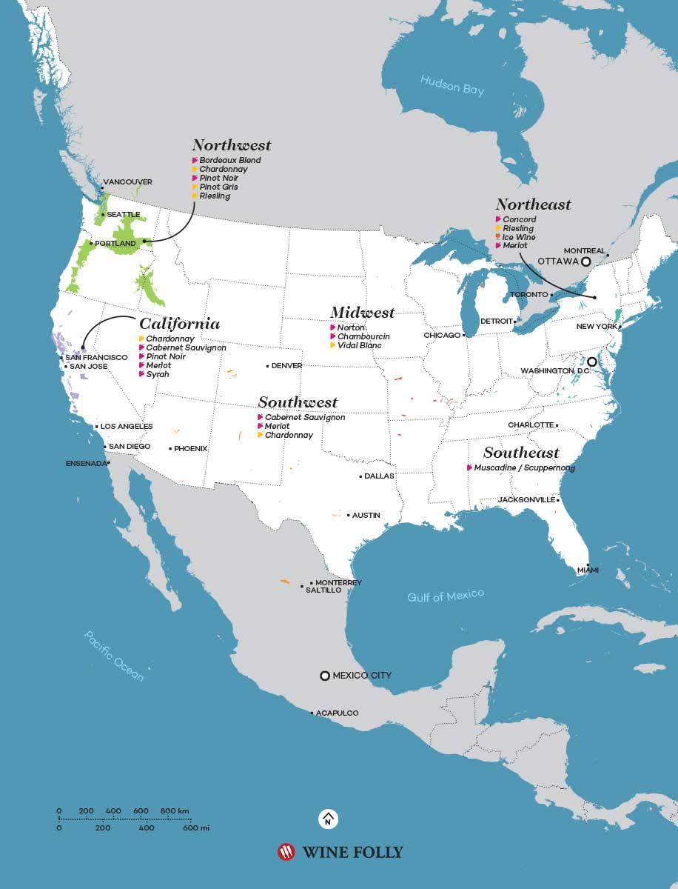
📍 Sem conexão com Wine Folly. Salve usa-wine-regions.png em images/ para uso offline.
A potência. North Coast (Napa, Sonoma), Central Coast, Sierra Foothills. Diversidade de microclimas raríssima.
Uvas-chave
ChardonnayCabernet SauvignonPinot NoirMerlotSyrah
Southwest 🌵
Quente/altitude
Texas, New Mexico, Arizona. Altitudes elevadas compensam o calor. Cena emergente.
Uvas-chave
Cabernet SauvignonMerlotChardonnay
Midwest 🌾
Híbridas resistentes
Missouri, Illinois, Minnesota. Invernos rigorosos exigem uvas híbridas. Norton é uva americana nativa.
Uvas-chave
NortonChambourcinVidal Blanc
Northeast ❄️
Ice Wine
New York (Finger Lakes), Ontário. Riesling de altíssimo nível e o famoso Ice Wine.
Uvas-chave
ConcordRieslingIce WineMerlot
Southeast ☀️
Uvas nativas
Calor e umidade impedem vinífera europeia. Muscadine/Scuppernong são uvas nativas adaptadas.
Uvas-chave
MuscadineScuppernong
EUA cobrem do premium europeu (Cab, Pinot, Chard na CA/OR/WA) ao nativo americano (Muscadine, Norton, Concord). Use barras pra ver corpo e estilo.
🍷 Tintos premium (Europeias)
Cabernet Sauvignon
Tinto encorpado · ícone da CA
Corpo
Taninos
Acidez
CassisCedroTabacoDusty
Onde brilha:Napa Valley ⭐SonomaPaso Robles
Pinot Noir
Tinto leve-médio · cool-climate
Corpo
Taninos
Acidez
Frutas vermelhasTerra molhadaEspeciarias
Onde brilha:Willamette ⭐Sonoma CoastRussian River
Merlot
Tinto médio · macio
Corpo
Taninos
Acidez
AmeixaChocolateCereja preta
Onde brilha:CaliforniaWashingtonLong Island NY
Syrah
Tinto encorpado · pimenta
Corpo
Taninos
Acidez
MirtiloPimenta-pretaDefumadoOlive
Onde brilha:Paso RoblesWalla Walla
🥂 Brancos premium
Chardonnay
Branco encorpado · #1 plantio EUA
Corpo
Acidez
Carvalho
ManteigaBaunilhaPeraAbacaxi
Onde brilha:Russian RiverSonoma CoastSta. Rita Hills
Riesling
Branco aromático · acidez vibrante
Corpo
Acidez
Carvalho
LimãoMelMineralidade
Onde brilha:Finger Lakes NY ⭐Washington
Pinot Gris
Branco leve-médio · mineral
Corpo
Acidez
Carvalho
PeraMaçã verdeMineral
Onde brilha:Oregon (Willamette)
Bordeaux Blend
Tinto blend · estilo Bordeaux
CassisCedroEstrutura
Onde brilha:Washington (Walla Walla)Long Island
🌽 Uvas nativas & híbridas (só EUA)
Norton
Tinto nativo · Vitis aestivalis
Frutas pretasRústico
Onde brilha:Missouri (Midwest)
Chambourcin
Híbrido · leve, cor intensa
Frutas vermelhasFloral
Onde brilha:Midwest
Vidal Blanc
Híbrido · Ice Wine
PêssegoMel
Onde brilha:MidwestNortheast (Ice Wine)
Concord
Vitis labrusca · "foxy"
Suco de uvaAromática
Onde brilha:Northeast (NY)
Muscadine / Scuppernong
Vitis rotundifolia · nativa do Sul
DoceFloralCasca grossa
Onde brilha:Southeast
Zinfandel
Tinto encorpado · "uva americana"
GeleiaPimentaOld vine
Onde brilha:California (Sonoma, Lodi)
Cheat sheet: o que importa lembrar sobre vinho americano em 60 segundos.
A potência
Califórnia faz 80,8% de tudo
CA + WA + OR juntos fazem 90%+ da produção dos EUA. Os outros 47 estados dividem menos de 10%. Pra investir/colecionar, o foco fica claro.
O sistema oficial
AVA = American Viticultural Area
~270 AVAs reconhecidas. Hierarquia: AVA principal (ex: Napa Valley) → sub-AVA (ex: Oakville). Quanto mais específica a AVA no rótulo, mais identidade de terroir.
Marco histórico
Judgment of Paris (1976)
Vinhos de Napa vencem Bordeaux e Borgonha em prova cega. Define a reputação global dos EUA como produtor de classe mundial.
Diversidade
De Vitis vinifera a nativas
EUA é único: cultiva vinífera europeia (CA, OR, WA), híbridas (Midwest), e uvas 100% nativas (Muscadine no Sudeste, Concord no NE).
Top picks pra começar (3 garrafas)
Entrada
Willamette Pinot Noir
US$ 30–50. Oregon. Elegância europeia em estilo americano. Marcas: Erath, A to Z, Cristom.
US$ 500+. Screaming Eagle, Harlan Estate, Opus One, Bryant Family.
Pareamento por estilo
Prato / momento
Vinho americano
🥩 Bife / costela
Napa Cabernet · Paso Robles Syrah
🐔 Frango assado
Sonoma Pinot Noir · Russian River Chard
🐟 Salmão / atum
Willamette Pinot Noir · Sonoma Chardonnay
🦪 Ostras
Finger Lakes Riesling · Sonoma Sauv Blanc
🌶️ Tex-Mex / picante
California Zinfandel · Finger Lakes Riesling off-dry
🧀 Queijos / sobremesa
Ice Wine NY · Late Harvest Riesling · Tawny Port-style
🍇 Napa Valley em uma frase: Primeira AVA oficial da Califórnia (1981) · capital mundial do Cabernet Sauvignon · 4M visitantes/ano · terroir agrícola mais caro dos EUA.
🍷 Informações básicas
🌍 % da Califórnia
~4%
mas 27% do valor produzido
🍷 Tinta #1
Cabernet Sauvignon
>50% · Rutherford · Oakville
🍷 Tinta #2
Merlot · Cab Franc
Bordeaux blends · St. Helena
🥂 Branca #1
Chardonnay
Carneros · estilo opulento
🥂 Branca #2
Sauvignon Blanc
"Fumé Blanc" · Mondavi
🗺️ Principais sub-AVAs
Rutherford ⭐⭐⭐
"Rutherford dust" · Cab icônico
Oakville ⭐⭐⭐
Opus One · Screaming Eagle
Stags Leap ⭐⭐
Judgment of Paris 1976
Howell Mountain ⭐⭐
Mountain Cab · taninos firmes
Carneros
Cool · Pinot + Chard + sparkling
📊 Outras informações
Sub-AVAs
16
8 vale · 8 montanha · 1 baía
Hectares
~18,9k
~46,7k acres
Vinícolas
475+
~700 produtores de uva
Clima predominante
Mediterrâneo
+ neblina Pacífico (Carneros)
🌟 O que torna Napa única
Judgment of Paris
1976
Napa Cab venceu Bordeaux em prova cega. Marco da legitimação mundial.
1ª AVA da Califórnia
1981
Pioneirismo no sistema americano. Modelo para 260+ AVAs hoje.
Preço da terra
US$ 310k/acre
No piso do vale — recorde agrícola dos EUA. Premium absoluto.
Visitantes
~4 milhões
Por ano. Mais visitada que Borgonha + Champagne juntos.
Charles Krug
1861 · 1ª comercial
Primeira vinícola comercial. Mondavi family. Início da era moderna.
Cult Wines
Screaming Eagle
€3-15k/garrafa. Plus Harlan, Bond, Sine Qua Non, Colgin. Lista de espera de anos.
As 16 AVAs de Napa se dividem em 3 grandes categorias: Vale (estilo refinado), Montanha (potente e poeirento), Baía (frio, ideal pra Pinot e Chardonnay).
🌾 Vale do Rio Napa — 8 AVAs · Cabernet refinado e lush
Oak Knoll District
Sul, mais frio
Coombsville
Sudeste, brisa da baía
Yountville
Centro-sul, equilibrado
Stags Leap District ⭐
Cabs elegantes, "veludo"
Oakville ⭐
Coração do Cab Napa
Rutherford ⭐
"Rutherford dust", terroso
St. Helena
Centro-norte, maduro
Calistoga
Norte, mais quente
⛰️ Montanha — 8 AVAs · Tintos poeirentos e estruturados
Mount Veeder
Mayacamas, intenso
Atlas Peak
Vaca Range, alt. elevada
Spring Mountain
Mayacamas, fresco
Diamond Mountain
Solo vulcânico
Howell Mountain ⭐
Acima da névoa, taninos fortes
Chiles Valley
Vale alto, Zinfandel
Wild Horse Valley
Leste, frio
Crystal Springs
Nova AVA (2025)
🌊 Baía — 1 AVA · Frio, Pinot, Chardonnay, espumantes
Los Carneros ⭐
Junto à San Pablo Bay. Brisas frias. Pinot Noir, Chardonnay e espumante de método tradicional.
Como decodificar: AVAs com ⭐ são as mais procuradas em leilões e listas premium. Para Cabernet ícone: Oakville, Rutherford, Stags Leap. Para Pinot/Chardonnay: Los Carneros. Para tintos brutos e longa guarda: Howell Mountain.
Napa é Cabernet country — mais de 50% do plantado. Mas o vale produz outros 26 varietais relevantes.
🍷 Tintos
Cabernet Sauvignon
#1 · >50% do plantio · Long aging
Corpo
Taninos
Acidez
CassisFrutas pretas"Dusty"Taninos refinados
Onde brilha:Oakville ⭐Rutherford ⭐Stags Leap
Merlot
#3 · Melhor custo-benefício
Corpo
Taninos
Acidez
AmeixaChocolateTaninos macios
Onde brilha:Vale do Rio Napa
Pinot Noir
#4 · Cool-climate em Carneros
Corpo
Taninos
Acidez
Frutas vermelhas perfumadasEspeciarias
Onde brilha:Los Carneros ⭐
Zinfandel
#6 · Vinhas mais antigas
Corpo
Taninos
Acidez
MineralidadeDefumadoFrutas em geleia
Onde brilha:Old vines Napa
Petite Sirah
Cult · Boldness máxima
Corpo
Taninos
Acidez
Cor opacaEstruturaOld vines
Onde brilha:Napa diversos
🥂 Brancos
Chardonnay
#2 geral · #1 dos brancos
Corpo
Acidez
Carvalho
RicoAmanteigadoCarvalho tostado
Onde brilha:Los Carneros
Sauvignon Blanc
#5 · Fumé Blanc quando em barrica
Corpo
Acidez
Carvalho
Frutas de caroçoTextura ricaCarvalho cremoso
Onde brilha:Vale do Rio Napa
Sémillon
Nicho · Blend com Sauv Blanc
CeraMelLima zestOleoso
Onde brilha:Diversas (blend)
Cheat sheet: história, regras de rótulo e top picks de Napa em um lugar só.
📜 Regras de rótulo
85%
"Napa Valley"
≥85% uvas da AVA
75%
"Napa County"
≥75% do condado
75%
Varietal único
75% da uva nominada
100%
"Estate"
Uvas próprias + vinif. local
📅 Linha do tempo
1861
Charles Krug funda a 1ª vinícola comercial
Imigrante prussiano abre a porteira da indústria moderna em Napa.
1890s
Filoxera devasta os vinhedos
Reconstrução com porta-enxertos americanos.
1920–33
Lei Seca (Prohibition)
Quase todas vinícolas fecham. Algumas sobrevivem com vinho sacramental.
1976
⭐ Julgamento de Paris
Cabs e Chards de Napa derrotam franceses em prova cega. Marco fundador da reputação global.
US$ 500+. Screaming Eagle, Harlan Estate, Opus One.
🍴 Pareamento
Prato
Vinho de Napa
🥩 Bife / costela
Cab Sauv (Oakville, Rutherford)
🐔 Frango assado
Pinot Noir (Carneros) · Chardonnay com carvalho
🦪 Frutos do mar
Sauvignon Blanc (Fumé Blanc)
🍫 Sobremesa
Late-harvest Sémillon · Zinfandel maduro
🍷 Sonoma County em uma frase: Vizinha de Napa, ~3× maior em área, mais diversa em estilos e melhor custo-benefício. 19 AVAs do litoral frio (Pinot/Chard) ao interior quente (Zin/Cab).
🍷 Informações básicas
🌍 vs Napa
~3×
área plantada
🍷 Tinta #1
Pinot Noir
Russian River Valley · world-class
🍷 Tinta #2
Zinfandel · Cab Sauv
Dry Creek (Zin) · Alexander (Cab)
🥂 Branca #1
Chardonnay
Carneros · Russian River · Sonoma Coast
🥂 Branca #2
Sauvignon Blanc
Dry Creek · Russian River
🗺️ Principais sub-AVAs
Russian River ⭐⭐⭐
Pinot Noir top da CA
Sonoma Coast ⭐⭐
Cool-climate puro · Pinot · Chard
Dry Creek ⭐⭐
Zinfandel old vines 100+ anos
Alexander Valley ⭐⭐
Cab Sauv · clima quente
Carneros
Compartilhada com Napa · sparkling
📊 Outras informações
Sub-AVAs
19
+ 3 que ela compartilha
Hectares
~24k
~60k acres · ~3× Napa
Vinícolas
425+
maioria family-owned
Clima predominante
Maritime
cool oeste · quente interior
🌟 O que torna Sonoma única
Diversidade
19 AVAs
Mais variedade de microclimas e estilos que qualquer outra região da CA.
Cool-climate
Influência marinha
Pacífico + nevoeiro = Pinot e Chardonnay world-class no oeste.
Zinfandel
Old Vines
Vinhas Zin de 100+ anos em Dry Creek. Patrimônio histórico.
Filosofia
Family-owned
Mais vinícolas familiares pequenas vs Napa corporativa.
Custo-benefício
~30% mais barato
Para qualidade equivalente vs Napa Cabernet.
Los Carneros
Compartilhada
Única AVA que atravessa Napa e Sonoma. Produtor escolhe o rótulo.
19 AVAs em 3 grupos por temperatura: litoral frio (Sonoma Coast, Russian River, Carneros) → vale temperado (Sonoma Valley, Bennett, Chalk Hill) → interior quente (Alexander Valley, Dry Creek, Knights, Rockpile).
☀️ Interior quente — Cabernet e Zinfandel encorpados
Alexander Valley ⭐
15k acres · maior AVA. Cabernet maduro e acessível.
Cabernet Sauvignon
Dry Creek Valley ⭐
9.300 acres. Capital do Zinfandel. Vinhas de 100+ anos.
ZinfandelSauv Blanc
Knights Valley
Mais quente da região. Cab estilo Napa, mais barato.
Cabernet
Rockpile
Altitude (240-600m). Zin concentrado e Cab estruturado.
ZinfandelCabernet
Sonoma Mountain
Sub-AVA elevada de Sonoma Valley. Cab e Merlot estruturados.
Cabernet
Moon Mountain
Mayacamas (lado Sonoma). Tintos de montanha intensos.
CabernetSyrah
Como navegar: Pra Pinot Noir → Russian River Valley ⭐ ou Sonoma Coast. Pra Cabernet (custo-benefício vs Napa) → Alexander Valley ou Knights Valley. Pra Zinfandel histórico → Dry Creek ou Rockpile. Pra espumante de método tradicional → Carneros.
Sonoma cobre 4 estilos icônicos: Pinot Noir cool-climate, Chardonnay encorpado, Zinfandel old-vine e Cabernet encorpado mas acessível.
🍷 Tintos
Pinot Noir
⭐ Estrela de Sonoma · cool-climate
Corpo
Taninos
Acidez
CerejaFramboesaEspeciariasTerra
Onde brilha:Russian River ⭐Sonoma CoastCarneros
Zinfandel
"Uva americana" · old vines
Corpo
Taninos
Acidez
GeleiaPimentaDefumadoFrutas em compota
Onde brilha:Dry Creek ⭐RockpileRussian River
Cabernet Sauvignon
Estilo mais acessível que Napa
Corpo
Taninos
Acidez
CassisCedroEucalipto
Onde brilha:Alexander Valley ⭐Knights ValleySonoma Mountain
Merlot
Médio-encorpado · macio
Corpo
Taninos
Acidez
AmeixaChocolateCereja preta
Onde brilha:Bennett ValleySonoma Mountain
🥂 Brancos
Chardonnay
⭐ #1 plantio · estilos diversos
Corpo
Acidez
Carvalho
PeraLimãoManteigaMineralidade
Onde brilha:Russian River ⭐Sonoma CoastChalk Hill
Sauvignon Blanc
Branco leve · cítrico
Corpo
Acidez
Carvalho
CapimCítricosMaracujá
Onde brilha:Dry Creek Valley
✨ Espumante
Sparkling (método tradicional)
Estilo Champagne · base Pinot + Chard
MaçãBriocheLevedoCremoso
Onde brilha:Carneros ⭐ · Produtores: Domaine Carneros, Gloria Ferrer, Iron Horse
Cheat sheet: Sonoma vs Napa, top picks por AVA e por que essa região é o "verdadeiro custo-benefício" da Califórnia premium.
🆚 Sonoma vs Napa — cara a cara
Dimensão
Sonoma 🍇
Napa 🏆
Tamanho (acres)
~60.000 (3x)
~46.700
AVAs
19
16
Uva-rainha
Chardonnay + Pinot Noir
Cabernet Sauvignon
Estilo dominante
Diverso, cool-climate ao quente
Cabs encorpados, lush
Filosofia
Family-owned, artesanal
Corporativa, marketing forte
Preço médio premium
~30% mais barato
US$ 100-300+
Visitantes/ano
~2,5M
~4M
1ª vinícola comercial
1857 (Buena Vista)
1861 (Charles Krug)
Compartilhada
Los Carneros (parte sul)
Los Carneros (parte sul)
🍷 Top picks por AVA
Pinot Noir
Russian River Valley
US$ 40–80. Marcas: Williams Selyem, Kosta Browne, Merry Edwards, Kistler.
Safras afetadas por fumaça. Indústria investe em práticas sustentáveis e gestão de risco.
Decodificar o rótulo de Napa = entender 4 percentuais. AVA é regulada — não é marketing.
85%
"Napa Valley"
No mínimo 85% das uvas vêm da Napa Valley AVA.
75%
"Napa County"
No mínimo 75% das uvas do Condado de Napa. Mais flexível, território maior.
75%
Varietal único (ex: "Merlot")
75% da uva nominada, cultivada na Napa Valley AVA.
100%
"Estate"
100% das uvas cultivadas em terra da vinícola e vinificadas no local em Napa Valley.
Cheat sheet de leitura de rótulo
Termo no rótulo
O que confere
Sinaliza
Napa Valley
≥ 85% uvas da AVA
Garantia básica de origem
Sub-AVA (ex: Oakville)
≥ 85% da sub-AVA
Identidade territorial específica
Estate Bottled
100% uvas próprias + vinificação local
Controle integral de qualidade
Reserve
Não regulado nos EUA
Termo de marketing — confiar no produtor
Single Vineyard
95% do vinhedo nominado
Expressão de terroir específico
Vintage (ano)
95% da safra do ano
Identifica condições climáticas
🇦🇺 Tese central: Austrália é terra do Shiraz. Vinhas plantadas nos anos 1840 sobreviveram à filoxera global — únicas no mundo. 65 regiões oficiais (GIs) em 6 estados.
🍷 Informações básicas
🌍 Ranking mundial
#6
produção
🍷 Tinta #1
Shiraz
29,5% do plantio · Barossa
🍷 Tinta #2
Cabernet Sauvignon
Coonawarra · Margaret River
🥂 Branca #1
Chardonnay
Adelaide Hills · Margaret River
🥂 Branca #2
Sémillon · Riesling
Hunter Valley · Clare Valley
🗺️ Principais regiões
Barossa Valley
Shiraz icônico · old vines
McLaren Vale
Shiraz + GSM · mediterrâneo
Coonawarra
Cab Sauv · terra rossa
Hunter Valley
Sémillon · região mais antiga
Margaret River
Premium · Bordeaux blends
📊 Outras informações
Hectares plantados
~138k
340k acres
Regiões oficiais (GIs)
65
em 6 estados
Shiraz
29,5%
#1 do país · sem filoxera
Clima predominante
Mediterrâneo
Sul · maritime em Margaret River
🌟 O que torna a Austrália única
Sem filoxera
Vinhas 1840s
Barossa preserva vinhas Shiraz com 170+ anos. Únicas no mundo.
Padrão
Screwcap
Inclusive os de longa guarda. Podem ser armazenados em pé.
"Old Vine"
35+ anos
Barossa é a única região com selo regulado: ≥35 anos de vinha.
Hunter Valley
Mais antiga
Região vitícola em operação contínua há mais tempo.
Tasmânia
<0,5%
Nova fronteira. Pinot, Chardonnay e espumantes cool-climate.
Coonawarra
Terra rossa
Solo vermelho sobre calcário. Cab Sauv elegante, mais frio que Bordeaux.
6 estados, 65 GIs. South Australia domina em volume e prestígio. Western Australia brilha no premium. Victoria é cool-climate. NSW e Tasmânia com nichos próprios.
🗺️ Mapa vitícola da Austrália
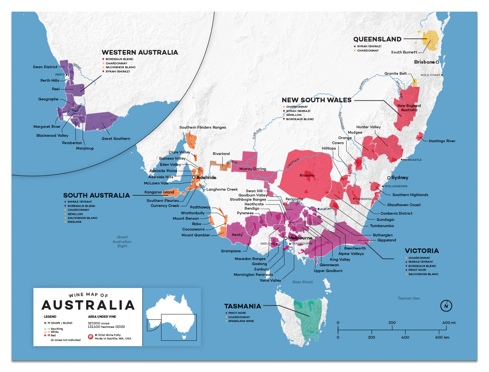
📍 Sem conexão com Wine Folly. Salve australia-wine-regions.png em images/ para uso offline.
Como navegar: Pra Shiraz icônico → Barossa. Pra Cabernet elegante → Coonawarra ou Margaret River. Pra Pinot/Chardonnay → Yarra ou Mornington. Pra brancos minerais únicos → Hunter Semillon ou Clare Riesling. Pra colecionar com guarda longa → Margaret River.
Cada uva tem um perfil sensorial único. Use as barras de corpo, taninos e acidez pra entender o estilo rápido. Aromas e regiões onde brilha logo abaixo.
🍷 Uvas tintas
4 principais
Shiraz
Tinto encorpado · #1 da Austrália (29,5%)
Corpo
Taninos
Acidez
AmoraMochaTabacoClay potGroselha seca
Onde brilha:Barossa ⭐McLaren ValeHunter
Cabernet Sauvignon
Tinto encorpado · estruturado
Corpo
Taninos
Acidez
CassisCedroHortelãLouroTerra rossa
Onde brilha:Coonawarra ⭐Margaret River
Merlot
Tinto médio-encorpado · macio
Corpo
Taninos
Acidez
AmeixaChocolateCereja preta
Onde brilha:South AustraliaVictoriaNSW
Pinot Noir
Tinto leve-médio · cool-climate
Corpo
Taninos
Acidez
AmeixaFramboesaLavandaChá preto
Onde brilha:Yarra Valley ⭐MorningtonTasmânia
🥂 Uvas brancas
4 principais
Chardonnay
Branco encorpado · #2 da Austrália
Corpo
Acidez
Carvalho
PeraAbacaxiMineralAvelã
Onde brilha:Yarra ⭐Margaret River ⭐Tasmânia
Sémillon
Branco leve · lean e mineral
Corpo
Acidez
Carvalho
LimaLilásPera asiáticaCera de vela
Onde brilha:Hunter Valley ⭐
Riesling
Branco aromático · seco
Corpo
Acidez
Carvalho
LimãoCera de abelhaPêssego brancoPetróleo
Onde brilha:Clare Valley ⭐Eden Valley
Sauvignon Blanc
Branco leve · cítrico
Corpo
Acidez
Carvalho
CapimCítricosMaracujá
Onde brilha:Adelaide HillsMargaret River
🌟 Especialidades únicas
só Austrália
GSM Blend
Grenache · Syrah · Mourvèdre
FramboesaAlcaçuzGrafiteCarne assada
Onde brilha:McLaren ValeBarossa
Rutherglen Muscat
Sobremesa fortificado · "Brown Muscat"
Lichia secaCasca de laranjaNozesCafé
Onde brilha:Rutherglen (VIC)
Tasmanian Sparkling
Espumante cool-climate · método tradicional
LimãoAmêndoaCremeCogumelo
Onde brilha:Tasmânia
Cheat sheet: o que importa lembrar sobre vinho australiano em 60 segundos.
Por que Shiraz é tão potente
Sem filoxera + clima quente + vinhas centenárias
A praga global da filoxera nunca chegou ao South Australia. Resultado: vinhas Shiraz plantadas em 1843 ainda produzem. Concentração e profundidade impossíveis de replicar em outros países.
Por que screwcap
Standard nacional desde os anos 2000
Inclusive em vinhos premium pra guarda. Adoção liderou o mundo. Vantagens: sem TCA (cork taint), consistência entre garrafas, armazenagem em pé.
Leitura de rótulo
Variedades em ordem de proporção
Em blends, as uvas listadas no rótulo seguem a ordem da maior pra menor proporção. "Shiraz Cabernet" = mais Shiraz que Cab.
Old Vine garantido
Barossa = único selo regulado
Wines marcados "Old Vine" em Barossa têm garantia de origem de vinhas com 35+ anos. Em outras regiões o termo não é regulamentado — confiar no produtor.
Top picks pra começar (3 garrafas)
Entrada
Barossa Shiraz
US$ 25–45. Define o estilo australiano. Marcas: Peter Lehmann, Wolf Blass, Yalumba.
US$ 700+. Shiraz multi-regional. O "Latour" da Austrália.
Pareamento por estilo
Prato / momento
Vinho australiano
🥩 Churrasco / costela
Barossa Shiraz · GSM McLaren Vale
🥢 Cordeiro / pratos defumados
Coonawarra Cabernet · Margaret River Bordeaux Blend
🐟 Salmão / atum grelhado
Yarra Pinot Noir · Margaret River Chardonnay
🦪 Frutos do mar crus
Hunter Semillon (jovem) · Tasmania Sparkling
🌶️ Tailandês / picante
Clare Valley Riesling
🧀 Queijos azuis · sobremesas
Rutherglen Muscat · Australian Tawny
🇫🇷 Tese central: França é a referência mundial. 2º maior produtor (atrás da Itália), inventou o conceito de terroir e o sistema AOC que o mundo todo copia. 12 grandes regiões, ~360 AOCs.
🍷 Informações básicas
🌍 Ranking mundial
#2
produção
🍷 Tinta #1
Cabernet Sauvignon · Merlot
Bordeaux blends · benchmark
🍷 Tinta #2
Pinot Noir · Syrah
Borgonha · Rhône Norte
🥂 Branca #1
Chardonnay
Borgonha · Chablis · Champagne
🥂 Branca #2
Sauvignon Blanc · Chenin
Sancerre · Vouvray (Loire)
🗺️ Principais regiões
Bordeaux ⭐⭐⭐
Médoc · Saint-Émilion · Sauternes
Borgonha ⭐⭐⭐
33 Grand Crus · Pinot + Chard
Champagne ⭐⭐⭐
17 GC villages · método tradicional
Loire ⭐⭐
87 AOPs · Sancerre · Vouvray
Rhône
Côte-Rôtie · Châteauneuf-du-Pape
📊 Outras informações
Hectares plantados
~750k
~1,85M acres
AOCs reconhecidas
~360
sistema desde 1935
Grandes regiões
12
Champagne ao Languedoc
Clima predominante
Variado
Continental + Maritime + Mediterrâneo
🌟 O que torna a França única
Conceito
Terroir
França inventou: solo + clima + savoir-faire = identidade única do vinho.
Sistema legal
AOC (1935)
Appellation d'Origine Contrôlée. Hoje AOP (UE). Modelo copiado mundialmente.
Rótulo
Por lugar
Quase nunca por uva. "Chablis" = Chardonnay. "Sancerre" = Sauv Blanc. (Exceção: Alsace)
Champagne
Método clássico
Inventou a 2ª fermentação em garrafa. Outros países usam "método tradicional".
Investimento
Mais cobiçado
DRC, Pétrus, Lafite, Latour: maiores leilões do mundo são franceses.
Variedades
Pinot e Chard
Berço dos varietais hoje cultivados globalmente. Cab Sauvignon nasceu em Bordeaux.
12 grandes regiões vitícolas. As 5 principais dominam o mercado premium: Bordeaux, Borgonha, Champagne, Rhône e Loire. Cada uma com personalidade absolutamente distinta.
🗺️ Mapa vitícola da França
📍 Sem conexão com Wine Folly. Salve france-wine-regions.png em images/ para uso offline.
🍇 Borgonha em uma frase: a obsessão do terroir. 2 uvas (Pinot Noir + Chardonnay) expressas em centenas de vinhedos micro-classificados. Onde o solo importa mais do que o produtor.
Hectares plantados
~30k
+ Beaujolais ~16k
Grand Crus
33
1% da produção · Côte d'Or
Premier Crus
640
10% da produção · vinhedos
Villages
44
37% · Chablis, Mâcon-Villages…
Pirâmide de classificação
Uvas cultivadas (Borgonha + Beaujolais)
🌟 O que torna Borgonha única
Filosofia
Climats
Cada parcela tem nome próprio. Patrimônio UNESCO (2015). +1.200 climats catalogados.
Tamanho
Minúscula
3% do vinho francês. Produção limitadíssima. Demanda >> oferta.
Propriedade
Fragmentada
Heranças napoleônicas dividiram vinhedos. Um Grand Cru tem dezenas de donos.
Ícone
DRC
Domaine de la Romanée-Conti. Garrafas regularmente acima de US$ 25k.
Régua
Pinot Noir
Define a uva no mundo. Toda região que faz Pinot mede-se contra Borgonha.
Régua branca
Chardonnay
Montrachet = melhor Chardonnay do mundo (consensual). White Burgundy é o benchmark.
Do sul ao norte: Beaujolais → Mâconnais → Côte Chalonnaise → Côte de Beaune → Côte de Nuits → Chablis. Climas, solos e uvas mudam radicalmente em ~250 km.
Tecnicamente uma região separada da Borgonha "oficial", mas historicamente associada. Uva única: Gamay Noir. Estilo varia de Nouveau frutado a Crus estruturados que envelhecem 50+ anos (Moulin-à-Vent).
3 níveis
Beaujolais — básico, jovem, simples
Beaujolais-Villages — 38 vilas, +qualidade
Cru Beaujolais — 10 villages premium
Estilo de vinificação
Maceração semi-carbônica. Frutas vermelhas explosivas, baixos taninos, frescor. Único no mundo.
Os 10 Crus de Beaujolais (norte → sul)
#
Cru
Estilo
Notas
1
Saint-Amour
Leve, floral, mineral
O mais ao norte. Estilo elegante, frutas vermelhas suaves.
2
Juliénas
Estruturado, frutado
Taninos firmes. Bom para guarda.
3
Chénas
Robusto, floral
Menor dos Crus em volume. Estrutura sólida.
4
Moulin-à-Vent ⭐
Estruturado, tânico, longa guarda
O "rei do Beaujolais". 50+ anos de guarda. Solo com manganês.
5
Fleurie ⭐
Floral, sedoso, elegante
A "rainha do Beaujolais". Violetas, textura sedosa.
6
Chiroubles
Leve, perfumado, alpino
Vinhedos em altitude (300-450m). Drinkable jovem.
7
Morgon ⭐
Concentrado, terroso, Burgundy-like
O "mais Borgonha" dos Crus. Mais fácil de achar fora da França.
8
Régnié
Frutado, leve, fresco
O mais novo dos Crus (1988). Estilo acessível.
9
Brouilly
Frutado, acessível, vibrante
Maior Cru em volume. Beba jovem.
10
Côte de Brouilly
Mineral, concentrado
Encostas do Mont Brouilly (solo vulcânico azul).
2. Mâconnais — Sul · Chardonnay encorpado
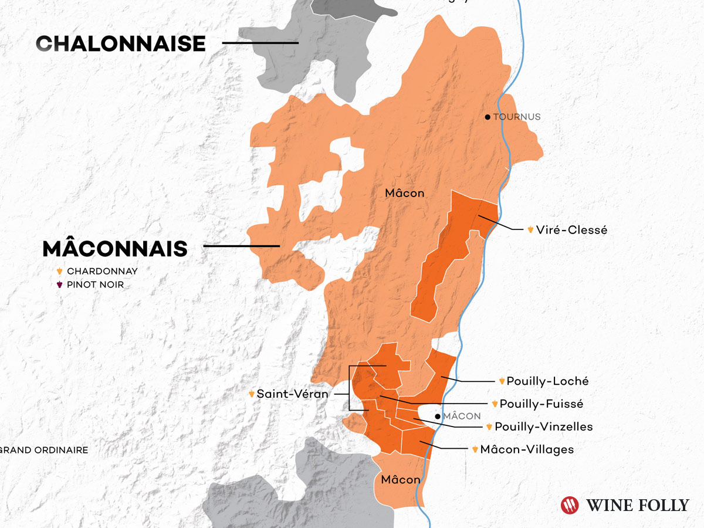
Mais ao sul (próximo a Beaujolais), portanto mais quente que o resto da Borgonha. Chardonnays fleshy e plump.
~15% da produção · climats como Mont de Milieu, Côte de Léchet, Fourchaume
Nuance e elegância
Chablis
Maioria do que se acha no mercado · vinhedos próximos à vila
Mineral, redondo
Petit Chablis
Vinhedos ao redor · acidez alta, cítrico
Beber jovem
Como navegar: Pra Chardonnay branco mineral → Chablis. Pra Chard rico e amanteigado → Côte de Beaune (Meursault, Montrachet). Pra Pinot Noir ícone → Côte de Nuits. Pra value → Côte Chalonnaise. Pra Gamay vibrante → Beaujolais Cru. Pra Chard quente → Mâconnais (Pouilly-Fuissé).
Beaujolais ⭐ — a região do Gamay. 3 níveis (Beaujolais → Villages → Cru). Os 10 Crus são os vinhos sérios — alguns envelhecem 50+ anos.
38 vilas qualificadas. Boa entrada, mais expressão que o regional.
€10–18
○
BEAUJOLAIS AOC
Regional. Inclui o famoso "Beaujolais Nouveau" lançado na 3ª quinta-feira de novembro.
€8–14
Os 10 Crus de Beaujolais (norte → sul)
Ordenados geograficamente do norte (mais próximo de Borgonha) ao sul (mais próximo de Lyon).
#
Cru
Estilo
Notas
1
Saint-Amour
Leve, floral, mineral
O mais ao norte (limite com Mâconnais). Estilo elegante, frutas vermelhas suaves, especiarias.
2
Juliénas
Estruturado, frutado
Frutas vermelhas, especiarias, taninos firmes. Bom para guarda.
3
Chénas
Robusto, floral
Menor dos Crus em volume. Aromas de flores + estrutura sólida.
4
Moulin-à-Vent ⭐
Estruturado, tânico, longa guarda
O "rei do Beaujolais". Mais tânico e idade-friendly dos 10. Solos com manganês. 50+ anos de guarda em boas safras.
5
Fleurie ⭐
Floral, sedoso, elegante
A "rainha do Beaujolais". Violetas, frutas vermelhas, textura sedosa.
6
Chiroubles
Leve, perfumado, alpino
Vinhedos em altitude (300-450m). Estilo mais delicado, drinkable jovem.
7
Morgon ⭐
Concentrado, terroso, Burgundy-like
Considerado o "mais Borgonha" dos Crus. Frutas pretas, cereja, solo de "roches pourries". O mais fácil de achar fora da França.
8
Régnié
Frutado, leve, fresco
O mais novo dos Crus (promovido em 1988). Estilo acessível, frutas vermelhas frescas.
9
Brouilly
Frutado, acessível, vibrante
Maior Cru em volume, mais ao sul. Cereja, framboesa, beba jovem.
10
Côte de Brouilly
Mineral, concentrado
Vinhedos nas encostas do Mont Brouilly (solo vulcânico azul). Mais mineral e estruturado que Brouilly.
Quick picks por ocasião
Pra começar
Morgon ou Brouilly
Fáceis de achar, expressivos, €15-25.
Pra guarda
Moulin-à-Vent
Único que envelhece como Borgonha. €25-50.
Elegância
Fleurie
Sedoso, perfumado. Versátil à mesa. €20-35.
Mito do Nouveau: o "Beaujolais Nouveau" lançado em 15/Nov gerou má fama na década de 90 (vinho industrial sem estrutura). Mas Cru Beaujolais é outra coisa — vinho sério, com terroir, alguns dos melhores tintos da França pelo preço.
Borgonha = 2 uvas dominantes (Pinot Noir + Chardonnay) + 2 secundárias (Gamay no Beaujolais, Aligoté). Simplicidade de variedades, complexidade infinita de expressões.
🍷 Tintos
Pinot Noir
~95% dos tintos · "Diva das uvas"
Corpo
Taninos
Acidez
Cereja vermelhaCogumeloTerra molhadaEspeciarias
Onde brilha:Vosne-Romanée ⭐Gevrey-ChambertinVolnayPommard
Gamay
100% do Beaujolais · 10 Crus
Corpo
Taninos
Acidez
FramboesaCerejaFrutadoFresco
Onde brilha:Morgon ⭐Moulin-à-VentFleurie
🥂 Brancos
Chardonnay
~90% dos brancos · benchmark global
Corpo
Acidez
Carvalho
LimãoManteigaAvelãMineralidade
Onde brilha:Montrachet ⭐MeursaultChablisPouilly-Fuissé
Aligoté
Branco magro · base do Kir
Corpo
Acidez
Carvalho
LimãoÁcidoMagrelo
Onde brilha:Bouzeron (única AOC)Côte Chalonnaise
✨ Crémant de Bourgogne
O espumante de Borgonha. Método tradicional (igual Champagne). Base Chardonnay + Pinot Noir. Custo-benefício imbatível vs Champagne — entre €12-25. Principalmente da Côte Chalonnaise (Rully).
Por que Pinot é tão difícil
Casca fina
Sensível a doenças, sol, geada. "A diva das uvas".
Mostra o terroir
Translúcida ao lugar. Mesmo produtor, vinhedos vizinhos = vinhos diferentes.
Brettanomyces
Vulnerável a "brett" (defeito de adega). Requer perfeição técnica.
Vintage matters
Diferença entre safras é dramática. 2005, 2010, 2015, 2019 = lendárias.
📅 Safra em Borgonha é arte e tragédia. Latitude alta + Pinot Noir + Chardonnay = uvas hipersensíveis. Geada de primavera, granizo, chuva na vindima podem destruir 50% da produção (como 2016). Tinto e branco têm dinâmicas DIFERENTES no mesmo ano. Esta página é seu guia.
📊 Vintage Chart Borgonha · 2005-2024
96-100 · Lendário
92-95 · Excelente
88-91 · Muito bom
84-87 · Bom
<84 · Médio/Fraco
Ano
Côte de Nuits Pinot Noir
Côte de Beaune Tinto Pinot Noir
Côte de Beaune Branco Chardonnay
Chablis Chardonnay
Mâcon / Côte Chal. Chard / Pinot
Resumo
2024
88
88
88
88
88
Mildiu + chuva · rendimento baixo · brancos vibrantes
2023
92
92
93
93
91
Calor + tardia · brancos charmosos · tintos com fruta
2022
94
94
94
93
92
Calor seco mas ph baixo · "vintage adaptado ao clima"
⭐⭐ "Vintage da geração" · tintos ainda em fase fechada
⚠️ Alerta Premox (Premature Oxidation)
"Premox" é o pesadelo dos Chardonnay brancos da Borgonha entre 1995-2010. Vinhos brancos que deveriam durar 15-20 anos começam a oxidar (cor laranja, sabor de maçã podre) com 5-8 anos. Causa nunca foi totalmente identificada — suspeita: rolhas + maturação reductiva.
Safra
Risco de Premox
Recomendação
1996, 1999, 2002, 2005
🔴 ALTO
Não compre se for adega · beba já se tiver
2006-2010
🟡 Médio
Beba mais cedo do que recomendado · 10-12 anos máx
2011 em diante
🟢 Baixo
Indústria corrigiu técnicas · brancos voltam a 15-20 anos guarda
🏆 As 5 safras-marco para Borgonha
2005
"Vintage da geração" para tintos
Verão seco e quente sem extremos · cachos pequenos com peles grossas · taninos firmes mas presentes. Ainda em fase fechada — esperar 5+ anos. Vai durar 30-40 anos. DRC, Leroy, Rousseau 2005 = aposta de cellar.
2010
A safra clássica perfeita
Equilíbrio raro · brancos minerais clássicos · tintos elegantes. Considerada a referência moderna do "vintage clássico". Janela ideal: 2025-2040 tintos · 2020-2030 brancos.
2014
Brancos lendários · "the vintage" para Chardonnay
Vento + frescor + maturação tardia = brancos com acidez perfeita. Considerada a melhor safra de brancos do século XXI por muitos críticos. Chablis 2014, Montrachet 2014, Meursault 2014 = lendários. Janela: 2024-2040.
2015
Tintos lendários · "vintage of a generation"
Verão excepcional sem stress hídrico · uvas perfeitas. Tintos opulentos com acidez preservada. Comparado a 1990, 1985. Beber em janela 2025-2050. Brancos secundários (geada antes).
2019
A "perfeição moderna" para tintos
Quente mas com noites frias · concentração + acidez vibrante. Tintos com fruta densa + estrutura clássica. Janela: 2026-2045. Mais acessível em preço que 2015. Comparado a 2005.
🍷 Janelas de prazer por categoria
Categoria
Beber jovem
Pico de prazer
Declínio
Grand Cru tinto (DRC, Leroy)
0-8 anos · fechado
10-25 anos
25-40+ anos
Grand Cru branco (Montrachet)
2-5 anos
5-20 anos
20-30 anos (premox risk antes 2011)
Premier Cru tinto
0-5 anos
8-20 anos
20-30 anos
Premier Cru branco
2-5 anos
5-15 anos
15-25 anos
Village tinto
2-5 anos
5-12 anos
12-20 anos
Village branco
1-3 anos
3-10 anos
10-15 anos
Bourgogne Rouge/Blanc regional
0-2 anos
2-7 anos
7-10 anos
Chablis GC
3-5 anos
5-20 anos
20-30 anos
Chablis 1er Cru
1-3 anos
3-10 anos
10-15 anos
Chablis "Village"
0-2 anos
2-5 anos
5-8 anos
🎯 Tinto vs Branco no mesmo ano · por que diferente?
Pinot Noir (tinto)
Maturação tardia
Colhe em setembro-outubro. Vulnerável a: chuva tardia · podridão · maturação irregular. Anos que brilham: 2005, 2009, 2015, 2019.
Chardonnay (branco)
Maturação 7-14 dias antes
Colhe em final de agosto-setembro. Beneficia-se de noites frescas. Pode brilhar em anos "frios" para tinto. 2007, 2010, 2014, 2017 = brancos > tintos.
Estratégia compra inteligente: Quer um Chablis "premium" sem pagar safra lendária? Procure 2017 (excelente, mas menos valorizada que 2014). Quer Pinot tinto pra cellar? Vá em 2019 em vez de 2015 — qualidade similar a 20-30% menos. Pra Bourgogne entry-level, sempre 2022 ou 2023 que estão por aí.
Cheat sheet: classificação Grand Cru → Régional, leitura de rótulo e top picks de Borgonha.
🏆 Pirâmide de classificação
1%
GRAND CRU 🏆
33 vinhedos. Apenas o nome do vinhedo no rótulo. Ex: "Chambertin", "Montrachet", "Romanée-Conti".
€200–25k+
10%
PREMIER CRU ⭐
640 vinhedos. Village + "1er Cru" + nome do vinhedo. Ex: "Gevrey-Chambertin 1er Cru Les Cazetiers".
€60–500
37%
VILLAGE
44 vilas. Apenas o nome do village. Ex: "Chablis", "Pommard", "Gevrey-Chambertin".
€25–120
52%
RÉGIONAL
"Bourgogne", "Bourgogne Aligoté", "Hautes-Côtes". Pode vir de qualquer canto.
€15–40
📜 Como decodificar um rótulo
Rótulo diz
Significado
Nível
Chambertin
Só o nome do vinhedo
Grand Cru
Gevrey-Chambertin 1er Cru Les Cazetiers
Village + "1er Cru" + vinhedo
Premier Cru
Gevrey-Chambertin
Só o nome do village
Village
Bourgogne Rouge
"Bourgogne" sem mais nada
Régional
🍷 Top picks por sub-região
Entrada (€)
Bourgogne Régional
Produtores top como Faiveley, Bouchard, Latour.
Village (€€)
Beaune · Volnay · Chablis
Identidade clara, ainda acessível.
1er Cru (€€€)
Meursault · Pommard 1er Cru
Onde Borgonha começa a brilhar de verdade.
Beaujolais Cru
Morgon · Moulin-à-Vent
€15-50. Melhor custo-benefício da Borgonha.
Espumante
Crémant de Bourgogne
€12-25. Método tradicional, alternativa ao Champagne.
Grand Cru (€€€€)
Chambertin · Montrachet
€500+. Para celebrar — ou colecionar.
🍴 Pareamento
Prato
Vinho de Borgonha
🍗 Coq au vin / pato
Pinot Noir Côte de Nuits · Volnay
🦞 Lagosta / lagostim
Meursault · Puligny-Montrachet
🦪 Ostras
Chablis Premier Cru
🧀 Queijos cremosos (Brie, Camembert)
Beaujolais Cru (Fleurie, Chiroubles)
🍖 Costela / porco assado
Pommard · Morgon · Moulin-à-Vent
🥂 Aperitivo
Crémant de Bourgogne · Aligoté (Kir)
4 níveis. Quanto mais específico o lugar no rótulo, melhor o vinho. Sistema baseado em séculos de observação monástica (Cistercienses) da qualidade de cada parcela.
1%
GRAND CRU 🏆
33 vinhedos no total. Apenas o nome do vinhedo no rótulo (sem o village). Ex: "Chambertin", "Montrachet", "Romanée-Conti".
Côte de Nuits: 24 · Côte de Beaune: 8 (7 brancos + Corton) · Chablis: 1 (Chablis Grand Cru com 7 climats)
€200–25.000+
10%
PREMIER CRU ⭐
640 vinhedos. Rótulo traz village + nome do vinhedo. Ex: "Gevrey-Chambertin 1er Cru Les Cazetiers".
Abreviação no rótulo: "1er Cru" ou "Premier Cru"
€60–500
37%
VILLAGE
44 vilas. Apenas o nome do village no rótulo. Ex: "Gevrey-Chambertin", "Chablis", "Pommard".
Produtor (domaine) começa a importar muito nesse nível
€25–120
52%
RÉGIONAL
"Bourgogne", "Bourgogne Aligoté", "Bourgogne Hautes-Côtes". Pode vir de qualquer canto da Borgonha.
Para entrada: foque em produtores top que fazem "Village descendido" pra Bourgogne
Catálogo de uvas: 9 varietais mapeados nas regiões do dashboard. Cada página detalha onde a uva nasceu, onde ela brilha hoje e como varia de estilo por país.
A uva mais difícil e mais cobiçada do mundo. Casca fina, sensível a tudo, mas quando dá certo produz vinhos de elegância sobrenatural. Translúcida ao terroir — mostra o solo como nenhuma outra.
Mais fruta, corpo médio-cheio, acidez bem integrada. Estilo "Californian elegance". Marcas: Williams Selyem, Kistler.
Cereja madura, framboesa, baunilha de carvalho
🇺🇸
Oregon — Willamette Valley
Dundee Hills, Eola-Amity
Estilo mais "burgundian": elegância sobre potência. Acidez vibrante. Marcas: Domaine Drouhin, Bergström.
Cranberry, framboesa, terra úmida, especiarias
🇦🇺
Austrália — Victoria
Yarra Valley, Mornington Peninsula, Tasmânia
Cool-climate australiano. Frutas mais juicy + acidez. Tasmânia faz o estilo mais lean.
Ameixa, framboesa, lavanda, chá preto
🇺🇸
EUA — Napa (Los Carneros)
AVA compartilhada com Sonoma
Brisas da baía permitem Pinot na quente Napa. Estilo mais frutado, corpo médio. Sparkling base tb.
Cereja preta, especiarias, fumaça
🇫🇷
Champagne
Montagne de Reims
Pinot Noir base de Champagne (Blanc de Noirs). Acidez extrema, base para método tradicional.
Maçã verde, levedo, brioche
🍴 Pareamento
Prato
Por que combina
🍗 Pato confit / coq au vin
Estilo borgonhês clássico. Acidez corta a gordura.
🍄 Cogumelos (porcini, trufa)
Match perfeito de notas terrosas.
🐟 Salmão grelhado
Acidez + corpo médio se equilibram.
🐔 Frango assado com ervas
Versátil. Pinot de RRV vai melhor.
🧀 Queijos cremosos (Brie)
Acidez corta a gordura, taninos finos.
🇫🇷 Origem: Borgonha · Branco encorpado
Chardonnay
A uva branca mais plantada e versátil do mundo. Cresce em quase qualquer clima — de Chablis frio mineral ao Napa rico amanteigado. Espelho do produtor: técnica define o estilo.
Base de Blanc de Blancs. Acidez extrema. Cresce melhor em solo calcário. Não envelhece bem em barrica aqui — usa-se ácido + leveduras.
Maçã, limão, brioche, levedo
🇫🇷
Mâconnais — Pouilly-Fuissé
Sul da Borgonha
Estilo mais quente: fleshy, plump, frutas maduras. Custo-benefício da Borgonha branca.
Pera madura, mel, especiarias doces
🍴 Pareamento
Prato
Estilo de Chardonnay
🦪 Ostras
Chablis · Sonoma Coast (unoaked)
🦞 Lagosta / lagostim com manteiga
Meursault · Russian River (oaked)
🐟 Robalo / linguado grelhado
Pouilly-Fuissé · Margaret River
🍗 Frango assado com manteiga
Sonoma RRV · Napa Carneros
🧀 Queijo brie / camembert
Chardonnay oaked californiano
🇫🇷 Origem: Bordeaux (left bank) · Tinto encorpado
Cabernet Sauvignon
"Rei dos tintos". Cruzamento natural de Cabernet Franc + Sauvignon Blanc, descoberto no séc. XVII. Casca grossa, taninos altos, longa guarda. A uva mais plantada do mundo.
A uva mais plantada de Bordeaux e injustiçada por décadas (graças ao filme "Sideways"). Macia, sedutora, taninos redondos. Em Pomerol, faz Pétrus — o vinho mais caro do mundo.
100% Merlot. Estilo opulento, sedoso, taninos macios. Casa do Pétrus, Le Pin, La Conseillante. A uva no seu auge.
Ameixa, trufa, chocolate, couro
🇫🇷
Saint-Émilion
Right Bank · solo calcário
Blend dominante de Merlot + Cab Franc. Mais estrutura que Pomerol. Marcas: Cheval Blanc, Ausone, Angélus.
Cereja preta, ervas, tabaco
🇺🇸
Washington — Columbia Valley
Walla Walla, Horse Heaven Hills
Onde Merlot americano brilha. Estrutura, fruta vibrante, sem ser muito quente. Marcas: L'Ecole No 41, Pepper Bridge.
Cereja, ameixa, especiarias
🇺🇸
Napa Valley
Vale do rio + Stags Leap
Em prova cega frequentemente confundido com Cab Sauv. Estilo encorpado, frutas concentradas.
Ameixa madura, chocolate, baunilha
🇮🇹
Itália — Toscana ("Super Tuscans")
Bolgheri, Maremma
Frequentemente blend com Cab + Sangiovese. Estilo rico, internacional. Masseto (100% Merlot) é icônico.
Cereja preta, especiarias mediterrâneas
🇨🇱
Chile
Maipo, Colchagua
Estilo médio, custo-benefício. Frutado, acessível. Acidez mais alta. Frequentemente confundido com Carmenère.
Ameixa, especiarias, pimenta
🍴 Pareamento
Prato
Estilo de Merlot
🍖 Porco assado / costelinha
Pomerol · Saint-Émilion
🍝 Pasta com molho de carne
Toscana · Chile
🥩 Carne de boi grelhada (não muito gorda)
Washington · Napa
🍄 Risotto de cogumelos
Pomerol jovem
🦆 Pato (versão lighter)
Saint-Émilion
🇫🇷 Origem: Rhône Norte · Tinto encorpado
Syrah / Shiraz
Mesma uva, 2 nomes, 2 estilos. "Syrah" (França) = austero, pimenta, defumado. "Shiraz" (Austrália) = frutas opulentas, mocha. A casca grossa e o clima quente fazem dela uma das uvas mais expressivas.
A "uva proibida". Banida da Borgonha em 1395 pelo Duque Filipe, o Atrevido, que a chamou de "vil e desleal" — encontrou refúgio no Beaujolais. Hoje é a uva de um dos vinhos mais frutados, vivos e divertidos do mundo.
Versão mais leve e cítrica. Vinho de "café" típico francês. Custo-benefício.
Cereja, framboesa, frescor
🇨🇦
Canadá — Niagara
Ontário
Cool-climate. Estilo elegante, mais acidez. Marca: Malivoire, Tawse.
Cranberry, cereja, frescor
🇺🇸
EUA — Oregon
Willamette Valley
Pequena produção em ascensão. Estilo mais sério, próximo ao Cru Beaujolais. Marcas: Brick House, Division.
Cereja, especiarias, terra
🍷 Beaujolais Nouveau: lançado toda 3ª quinta-feira de novembro. Vinho jovem, lúdico, para beber em semanas. Não confundir com Cru Beaujolais (vinhos sérios).
A "uva americana" que não é americana. Genética só descoberta em 2001: é a uva croata Tribidrag. Foi para os EUA via Itália (Primitivo) no séc. XIX. Hoje, vinhas centenárias em Sonoma fazem o estilo definitivo.
Perfil sensorial padrão
Corpo
Taninos
Acidez
Álcool
Aromas característicos
Frutas em compotaAmoraPimenta-pretaDefumadoCaquiEspeciarias docesGeleia
🌍 Onde brilha no mundo
BENCHMARK
🇺🇸
Sonoma — Dry Creek Valley
Russian River, Rockpile, Alexander Valley
Vinhas de 100+ anos. Concentração brutal, taninos sedosos, especiarias. Marcas: Ridge (Geyserville), Seghesio.
Amora, especiarias, pimenta, geleia
🇺🇸
EUA — Lodi + Sierra Foothills
California Central
Custo-benefício clássico. Vinhas velhas, estilo mais "rústico-frutado". Marcas: Klinker Brick, Bogle.
Mesma uva! Estilo mais alcoólico, frutas pretas em compota, mediterrâneo. Marcas: Gianfranco Fino.
Cereja preta, ameixa seca, especiarias
🇭🇷
Croácia (origem)
Dalmácia · Pelješac
"Tribidrag" ou "Crljenak Kaštelanski". Produção minúscula. Marcas: Bibich.
Frutas escuras, ervas mediterrâneas
🇦🇺
Austrália — McLaren Vale
SA
Pequena produção. Estilo frutado, próximo ao californiano.
Amora, especiarias
⚠️ Cuidado: "White Zinfandel" rosé é doce e leve — produto popular dos 80s que quase matou a fama da uva. Zin sério é tinto encorpado.
🍴 Pareamento
Prato
Estilo de Zin
🍖 Costela BBQ / pulled pork
Dry Creek · Lodi
🍕 Pizza pepperoni
Zin médio · Primitivo
🌶️ Chili con carne / Tex-Mex
Lodi Zin
🦌 Caça (cervo, javali)
Old vines de Napa
🧀 Queijos curados intensos
Zin com idade
🇫🇷 Origem: Loire / Bordeaux · Branco leve
Sauvignon Blanc
A uva do "grass and gooseberry". Cítrica, vibrante, intensamente aromática. Cresce do Loire frio aos vinhedos quentes do Marlborough — mostra personalidade radicalmente diferente em cada lugar.
Estilo mineral, austero, "pedra molhada". Sem carvalho. Acidez vertical. Pouilly-Fumé tem nota defumada (de "fumé").
Lima, sílex, capim, gooseberry
🇳🇿
Nova Zelândia — Marlborough
South Island
Revolução! Estilo exuberante, maracujá, herbáceo extremo. Acidez crocante. Marcas: Cloudy Bay, Kim Crawford.
Maracujá, gooseberry, capim, lima
🇫🇷
Bordeaux — Pessac-Léognan
Blend com Sémillon
Único estilo barricado. Sauv Blanc + Sémillon, fermentação em carvalho. Mais corpo, complexidade. Marcas: Domaine de Chevalier, Pape Clément.
Pera, cera, baunilha, cítricos
🇨🇱
Chile — Casablanca Valley
Cool-climate andino
Custo-benefício superior. Estilo entre Sancerre e Marlborough. Marcas: Casa Marín, Veramonte.
Lima, ervas, maracujá leve
🇺🇸
Napa & Sonoma — "Fumé Blanc"
Robert Mondavi marketing
Quando feita em barrica, recebe o nome "Fumé Blanc". Estilo mais cremoso. Marcas: Mondavi, Cakebread, Honig.
Frutas de caroço, carvalho cremoso
🇿🇦
África do Sul — Stellenbosch
Constantia, Elgin
Estilo entre Loire e NZ. Acidez + frutado. Marcas: Mulderbosch, Springfield.
Maracujá, lima, capim
🍴 Pareamento
Prato
Estilo de Sauv Blanc
🦪 Ostras / mariscos
Sancerre · Marlborough
🥗 Salada de cabra / ervas
Sancerre clássico
🍣 Sushi · sashimi
Marlborough · Casablanca
🌿 Pratos com ervas (manjericão, coentro)
NZ Marlborough
🍤 Camarão grelhado / ceviche
Sancerre · Casablanca
🇩🇪 Origem: Alemanha / Alsace · Branco aromático
Riesling
Para muitos críticos, a uva branca mais nobre do mundo — supera até o Chardonnay em complexidade e potencial de guarda. Espelho de terroir. Vai de seco extremo a doces sobremesa, sempre com acidez vibrante.
Padrão-ouro mundial. Solo de xisto azul. Acidez vertical, álcool baixo (8-9%), do seco (Trocken) ao Trockenbeerenauslese ultra-doce. Marcas: J.J. Prüm, Egon Müller.
Lima, pêssego branco, mineral, petrol
🇫🇷
Alsace
Grand Cru: Schlossberg, Brand
Estilo seco, encorpado, mais alcoólico que alemão. Único região francesa que rotula por uva. Marcas: Trimbach, Hugel, Zind-Humbrecht.
Lima, maçã, cera, mineral
🇦🇺
Austrália — Clare Valley + Eden Valley
South Australia
Estilo seco, mineral, característica nota de "petróleo" e "lima" pronunciadas. Acidez crocante. Marcas: Grosset, Pewsey Vale.
Lima, cera de abelha, petróleo, mineral
🇺🇸
EUA — Finger Lakes (NY)
Lakes Seneca, Cayuga
Versão americana mais próxima do alemão. Acidez + mineral + frescor. Marcas: Hermann J. Wiemer, Ravines, Konstantin Frank.
Maçã, lima, mineral
🇺🇸
EUA — Washington (Columbia Valley)
Yakima Valley
Estilo mais redondo, frutado. Da semi-seca a doce. Marcas: Chateau Ste. Michelle (Eroica blend).
Pêssego, maçã, melão
🇦🇹
Áustria — Wachau
Vale do Danúbio
Estilo seco, intenso, mineral. Acidez extrema. Pertence ao trio dos melhores Rieslings europeus. Marcas: F.X. Pichler, Knoll.
Pêssego, mineral, especiarias
🍴 Pareamento
Prato
Estilo de Riesling
🥢 Tailandês / vietnamita picante
Riesling off-dry (Kabinett · Spätlese)
🍣 Sushi · sashimi
Riesling seco · Finger Lakes
🐷 Porco assado com maçã
Alsace · Mosel Kabinett
🌶️ Curry indiano
Riesling Spätlese · Eroica
🍰 Sobremesas de frutas
Riesling Auslese · Ice Wine
🇳🇿 Tese central: Cool-climate puro. Sauvignon Blanc revolucionou o mundo nos anos 80 (Cloudy Bay). Pinot Noir hoje é a próxima onda. País jovem em vinho mas já é referência global.
🍷 Informações básicas
🌍 Ranking mundial
#14
produção
🍷 Tinta #1
Pinot Noir
Central Otago · Martinborough
🍷 Tinta #2
Merlot · Syrah
Hawke's Bay · Bordeaux blends
🥂 Branca #1
Sauvignon Blanc
Marlborough · ~70% do plantio
🥂 Branca #2
Chardonnay
Gisborne · Hawke's Bay
🗺️ Principais regiões
Marlborough ⭐⭐⭐
Sauv Blanc icônico · 75% do total
Central Otago ⭐⭐
Pinot Noir · vinhedo mais ao sul do mundo
Hawke's Bay ⭐⭐
Bordeaux blends · Syrah · 2ª maior
Martinborough / Wairarapa
Pinot Noir premium
Gisborne
"Capital do Chardonnay"
📊 Outras informações
Hectares plantados
~42k
~104k acres
Sauv Blanc
~62%
do plantio nacional
Marlborough
~90%
do Sauv Blanc do país
Clima predominante
Maritime
ilhas · cool · longa estação
🌟 O que torna a Nova Zelândia única
Estilo Sauv Blanc
Tropical + cortante
Maracujá, gooseberry, capim. Acidez de cair o queixo. Inconfundível.
Pinot Noir
2ª onda
Central Otago = região de Pinot mais ao sul do mundo. Estilo "ripe + spicy".
Marco
Cloudy Bay (1985)
A garrafa que colocou NZ no mapa mundial. Padronizou estilo Marlborough.
Sustentabilidade
96%
das vinícolas certificadas SWNZ (Sustainable Winegrowing). Líder mundial.
Latitude
35-46°S
Equivale ao norte da Espanha ao sul da França — mas com clima oceânico extremo.
Rótulo
Por uva
Como Austrália e EUA — rotulagem varietal direta. Sem mistério.
2 ilhas, 10 regiões. Ilha do Sul domina (Marlborough + Central Otago = 80% da produção). Ilha do Norte mais quente faz Bordeaux blends em Hawke's Bay.
🏝️ Ilha do Sul — a potência · Sauv Blanc + Pinot Noir
Marlborough ⭐⭐
~70% do vinho NZ. Sauv Blanc benchmark mundial. Crescendo em Pinot.
Sauv BlancPinot Noir
Central Otago ⭐
Região de Pinot Noir mais ao sul do mundo. Estilo "ripe + spicy". Felton Road.
Pinot Noir
Waipara ⭐
North Canterbury. Pinot elegante + Riesling. Solo calcário.
Pinot NoirRiesling
Nelson
Pequeno, ao norte de Marlborough. Chard, Pinot, Sauv Blanc.
ChardonnayPinot Noir
Canterbury
Engloba Waipara. Cool-climate. Pinot e Riesling.
Pinot Noir
🏝️ Ilha do Norte — mais quente · Bordeaux blends + Syrah
Hawke's Bay ⭐
Mais quente. Bordeaux blends (Cab/Merlot) + Syrah estilo Rhône. Trinity Hill, Te Mata.
Cab/MerlotSyrah
Martinborough ⭐
Pequeno mas premium. Pinot Noir refinado. Ata Rangi, Martinborough Vineyard.
Pinot Noir
Gisborne
"Capital do Chardonnay" da NZ. Estilo mais rico.
Chardonnay
Wairarapa
Engloba Martinborough. Pinot premium.
Pinot Noir
Auckland
Waiheke Island faz Bordeaux blends boutique premium.
Cab/Merlot
Como navegar: Pra Sauv Blanc icônico → Marlborough. Pra Pinot Noir → Central Otago (ripe) ou Martinborough (refinado). Pra Bordeaux blends → Hawke's Bay. Pra Chardonnay → Gisborne ou Marlborough.
NZ é dominada por Sauv Blanc (62%) + Pinot Noir (15%) + Chardonnay (8%). Hawke's Bay traz Bordeaux blends e Syrah cool-climate.
US$ 30–60. Marcas: Te Mata Coleraine, Trinity Hill.
Pinot premium
Martinborough
US$ 40–70. Marcas: Ata Rangi, Dry River, Craggy Range.
📅 Marcos históricos
1819
Primeiras vinhas plantadas
Missionário Samuel Marsden em Bay of Islands.
1973
Marlborough planta as primeiras vinhas comerciais
Montana Wines descobre o terroir certo. O resto é história.
1985
⭐ Cloudy Bay 1985 — a garrafa que mudou tudo
Lançamento de Marlborough Sauv Blanc na Inglaterra. Vira instant classic. Define o estilo NZ pro mundo.
2000s
Boom do Pinot Noir
Central Otago e Martinborough viram referência mundial em Pinot.
Hoje
Líder mundial em sustentabilidade
96% das vinícolas certificadas SWNZ. Maior taxa de certificação do mundo.
🍴 Pareamento
Prato
Vinho da NZ
🦪 Ostras / mariscos
Marlborough Sauv Blanc
🥗 Salada de cabra com vinagrete
Marlborough Sauv Blanc
🍣 Sushi / sashimi
Marlborough Sauv Blanc
🦆 Pato / cordeiro
Central Otago Pinot Noir
🥩 Bife (custo-benefício)
Hawke's Bay Bordeaux blend
🍗 Frango com ervas
Martinborough Pinot Noir
🏰 Loire em uma frase: "Jardim da França". O vale dos castelos + 1.000 km de vinhedos. Capital mundial de Sauvignon Blanc (Sancerre) e Chenin Blanc (Vouvray, Savennières). Crus de Cabernet Franc também.
Comprimento
1.000km
3ª maior região AOC da França
AOPs
87
incluindo Sancerre, Vouvray, Chinon
Sub-regiões
5
Pays Nantais → Centre
Castelos
1.000+
UNESCO World Heritage
Cores produzidas
Uvas principais
🌟 O que torna Loire único
Variedade
4 países em 1
Cada sub-região é tão diferente que parece outro país: do Muscadet atlântico ao Sancerre continental.
Brancos
Reino dos brancos
Sauv Blanc (Sancerre), Chenin Blanc (Vouvray), Muscadet. Brancos secos top do mundo.
Cab Franc
Maior produtor
Chinon, Bourgueil, Saumur-Champigny. Cab Franc puro, sem o blend de Bordeaux.
Espumantes
Crémant de Loire
Método tradicional. Custo-benefício vs Champagne. Base Chenin + Cab Franc.
Doces
Coteaux du Layon
Chenin Blanc atacado por botritis = doces lendários (Quarts de Chaume, Bonnezeaux).
Cult
Coulée de Serrant
Vinhedo monopolo de 7ha em Savennières. Nicolas Joly. Biodinâmica radical.
Do Atlântico ao interior: Pays Nantais → Anjou-Saumur → Touraine → Centre-Loire (Sancerre). Cada uma com uvas e estilos completamente diferentes.
Junto à foz do rio, perto de Nantes. Capital do Muscadet (uva Melon de Bourgogne). Vinho branco salino, mineral, neutro — o "anti-vinho aromático".
Melon (Muscadet)
⭐ AOCs principais
Muscadet Sèvre-et-Maine ⭐Muscadet Côtes de GrandlieuMuscadet Coteaux de la Loire
2. Anjou-Saumur — Chenin Blanc + Cab Franc · Crémant
Coração diversificado. Chenin Blanc seco (Savennières) e doce (Coteaux du Layon, Quarts de Chaume). Cab Franc estruturado (Saumur-Champigny). Crémant de Loire.
Chenin BlancCab Franc
🏆 AOCs premium
AOC
Estilo
Savennières ⭐
🥂 Chenin Blanc seco mineral · Coulée de Serrant (Nicolas Joly)
Saumur-Champigny ⭐
🍷 Cab Franc puro, frutado, estruturado
Quarts de Chaume Grand Cru
🍯 Chenin doce de botritis · único Grand Cru do Loire (2011)
Bonnezeaux
🍯 Chenin doce nobre
Coteaux du Layon
🍯 Chenin doce custo-benefício
Crémant de Loire
✨ Espumante método tradicional
3. Touraine — Vouvray + Chinon · meio do vale
Coração turístico (castelos: Chenonceau, Amboise, Villandry). Vouvray (Chenin: do seco a sweet a sparkling) e Chinon (Cab Franc) são as estrelas. Vinhedos em solo de tuffeau (calcário).
Mais ao leste, perto da Borgonha. Capital mundial do Sauv Blanc. Sancerre e Pouilly-Fumé estão em margens opostas do rio Loire — solos diferentes, estilos diferentes.
🥂 Sauv Blanc com nota característica de "fumé" (defumado) por solo de sílex
Menetou-Salon
🥂 Vizinho de Sancerre, custo-benefício
Quincy
🥂 Sauv Blanc 100%, sem Pinot Noir
Reuilly
🥂🌹 Sauv Blanc + Pinot Noir + Pinot Gris rosé
Sancerre (Pinot Noir)
🍷 Pinot leve · 20% da produção
Sancerre vs Pouilly-Fumé: mesma uva, lados opostos do rio. Sancerre = mais frutado, citrico. Pouilly-Fumé = mais defumado (sílex), mineral. Diferença sutil mas inconfundível pra somm.
4 uvas principais. Sauv Blanc domina o centro, Chenin Blanc o Anjou-Touraine, Cab Franc os tintos, Muscadet a costa atlântica.
🥂 Brancos
Sauvignon Blanc
Centre-Loire · benchmark mundial
Corpo
Acidez
Aromática
LimaSílexCapimGooseberryDefumado (Pouilly-Fumé)
Onde brilha:Sancerre ⭐⭐Pouilly-Fumé ⭐
Chenin Blanc
Anjou + Touraine · uva camaleão
Corpo
Acidez
Açúcar (varia)
MarmeloMelCeraMaçãBotritis (doce)
Onde brilha:Vouvray ⭐⭐Savennières ⭐Quarts de Chaume
Muscadet (Melon B.)
Pays Nantais · "anti-aromático"
Corpo
Acidez
Aromática
MineralSalinoNeutroLimão
Onde brilha:Sèvre-et-Maine ⭐
🍷 Tintos
Cabernet Franc
⭐ Touraine + Anjou · maior produtor mundial
Corpo
Taninos
Acidez
Pimentão verdeFramboesaGrafiteTabaco
Onde brilha:Chinon ⭐Bourgueil ⭐Saumur-Champigny ⭐
Pinot Noir
Centre-Loire (Sancerre Rouge)
Corpo
Taninos
Acidez
CerejaFrescor
Onde brilha:Sancerre RougeMenetou-Salon
Cheat sheet: top picks pra começar, decodificação dos rótulos Chenin (sec/demi-sec/moelleux/doux), curiosidades.
🏷️ Como ler rótulos Chenin de Vouvray
Termo
Açúcar residual
Estilo
Sec
0–8 g/L
Seco · pareia com peixes
Demi-sec
8–18 g/L
Off-dry · ideal com asiática picante
Moelleux
18–45 g/L
Doce médio · sobremesas e foie gras
Doux
45+ g/L
Doce nobre · sobremesas e Roquefort
Pétillant / Mousseux
—
Espumante (método tradicional)
🍷 Top picks pra começar (5 garrafas)
Sauv Blanc
Sancerre
€25-40. Marcas: Henri Bourgeois, Pascal Jolivet.
Chenin seco
Vouvray Sec
€20-40. Marcas: Huet, Domaine du Aubuisières.
Cab Franc
Chinon
€18-35. Marcas: Charles Joguet, Bernard Baudry.
Muscadet
Sèvre-et-Maine
€10-20. Marcas: Pépière, Luneau-Papin.
Chenin doce
Quarts de Chaume
€40-100. Único GC do Loire.
🍴 Pareamento
Prato
Vinho do Loire
🦪 Ostras
Muscadet sur lie · Sancerre
🐟 Peixe grelhado
Sancerre · Pouilly-Fumé
🍗 Frango com ervas
Vouvray Sec · Saumur Blanc
🥩 Cordeiro / pato
Chinon · Saumur-Champigny
🌶️ Tailandês picante
Vouvray Demi-Sec
🧀 Queijo de cabra (chèvre)
Sancerre branco — pareamento clássico
🦆 Foie gras
Coteaux du Layon · Vouvray Moelleux
🍰 Sobremesas de frutas
Quarts de Chaume · Bonnezeaux
🥂 Champagne em uma frase: a região do Norte que inventou o método tradicional (segunda fermentação na garrafa). 5 sub-regiões, 3 uvas, ~340 milhões de garrafas/ano. Único espumante que pode chamar "Champagne" no mundo.
Hectares plantados
~34k
~84k acres
Sub-regiões
5
+ 17 Grand Crus (villages)
Maisons + Growers
320
+ 4.000+ produtores RM
Garrafas/ano
340M
~50% exportadas
As 3 uvas
Tipos por doçura (Brut domina)
🌟 O que torna Champagne único
Método
Méthode traditionnelle
2ª fermentação na garrafa. Inventada em Champagne. Copiada pelo mundo (Crémant, Cava, Franciacorta).
Solo
Giz / calcário
Solos de Champagne são puro giz — antigo fundo de mar. Drenagem perfeita + acidez.
Maison vs Grower
NM vs RM
NM (Négociant) compra uva. RM (Récoltant-Manipulant) usa só uva própria. RM = autenticidade.
NV é a regra
~85%
Não-Vintage. Blend de várias safras pra manter estilo da casa. Vintage só em anos excepcionais.
Cuvée Prestige
Top da casa
Cristal (Roederer), Dom Pérignon (Moët), Krug Grande Cuvée, Salon.
Origem nome
Protegido
Só vinho da região AOC Champagne pode usar o nome. Resto do mundo usa "Méthode Traditionnelle" ou "Sparkling".
5 sub-regiões. Cada uma especializada em uma uva. Sua proporção no blend define o estilo do Champagne.
🗺️ Mapa de Champagne
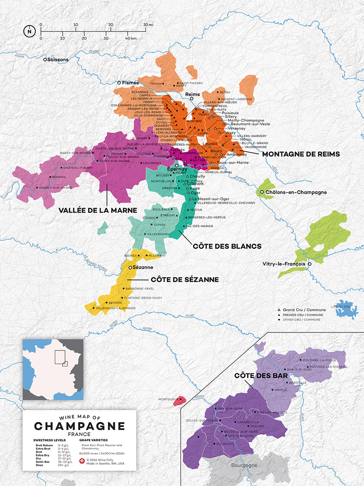
Fonte: Wine Folly
1. Montagne de Reims ⭐ — Pinot Noir · estrutura
Colinas ao sul de Reims. Pinot Noir dominante. Vinhedos voltados ao sul/sudeste. Champagnes encorpados, ricos, com estrutura. Casa de muitos Grand Crus.
Sul de Côte des Blancs, mais quente. Chardonnay mais frutado, menos mineral que Côte des Blancs. Custo-benefício.
Chardonnay
5. Côte des Bar (Aube) — Pinot Noir do sul · em ascensão
Ao sul, mais próxima a Chablis. Pinot Noir dominante. Por décadas considerada periferia, hoje é a região mais quente de Champagne — produtores grower-Champagne (Drappier, Cédric Bouchard) em ascensão.
Pinot Noir
O blend clássico: Pinot Noir (corpo + estrutura) + Chardonnay (finesse + acidez) + Pinot Meunier (frutado + redondez). Cada casa tem sua proporção, que define seu "estilo de casa".
3 uvas principais (Pinot Noir + Chardonnay + Pinot Meunier) = 99% da produção. Cada uma contribui um elemento essencial pro blend.
Pinot Noir
~38% · corpo, estrutura, longevidade
Frutas vermelhasEspeciariasBrioche
Brilha em:Montagne de Reims ⭐Côte des Bar
Chardonnay
~30% · finesse, acidez, mineralidade
LimãoMaçã verdeBriocheMineral
Brilha em:Côte des Blancs ⭐⭐
Pinot Meunier
~32% · frutado, redondez, jovialidade
Maçã maduraPeraFloral
Brilha em:Vallée de la Marne ⭐
Outras 4 uvas permitidas (raras, ~1% total)
Pinot Blanc
Branco mais corpo
Pinot Gris
Mais rico, frutado
Arbane
Antiga, exótica
Petit Meslier
Antiga, acidez alta
Cheat sheet: tudo que importa na hora de escolher um Champagne — doçura, estilo, casa vs grower.
🍾 Decodificando o rótulo
Doçura (dosagem)
Termo
Açúcar residual
Quando usar
Brut Nature / Zéro Dosage
0–3 g/L
Puro · só ostras
Extra Brut
0–6 g/L
Aperitivo seco
Brut ⭐
0–12 g/L
O padrão · ~95% do mercado
Extra Dry / Extra Sec
12–17 g/L
Levemente doce
Sec
17–32 g/L
Doce médio
Demi-Sec
32–50 g/L
Sobremesas
Doux
50+ g/L
Raro hoje
Estilo (composição)
Termo
O que é
Característica
Blanc de Blancs
100% Chardonnay
Mais elegante, mineral, longevo · Côte des Blancs
Blanc de Noirs
100% Pinot Noir + Meunier
Mais corpo, frutado, estrutura
Rosé
Vinho tinto adicionado OU sangria curta
Frutas vermelhas · único na UE onde se permite "adicionar tinto"
🇪🇸 Tese central:Maior área plantada do mundo (2,4M acres) e 3º maior produtor. Berço de Tempranillo, Garnacha e Monastrell (essa última = Mourvèdre). Diversidade do Albariño no Atlântico ao Sherry seco em Cádiz.
🍷 Informações básicas
🌍 Ranking mundial
#3
produção · maior plantio mundial
🍷 Tinta #1
Tempranillo
Rioja · Ribera del Duero · uva-rainha
🍷 Tinta #2
Garnacha (Grenache)
Priorat · Aragón · old vines
🥂 Branca #1
Albariño
Rías Baixas · branco premium
🥂 Branca #2
Verdejo · Palomino
Rueda · Jerez (Sherry)
🗺️ Principais regiões
Rioja ⭐⭐⭐
Tempranillo · Crianza/Reserva/Gran
Ribera del Duero ⭐⭐
Tempranillo · altitude · Vega Sicilia
Priorat ⭐⭐
DOCa · Garnacha + Cariñena · llicorella
Rías Baixas
Albariño · costa galega
Jerez (Sherry)
Sherry · solera · Andaluzia
📊 Outras informações
Área plantada
2,4M
acres · maior do mundo
Denominações (DOP)
139
+ 2 DOCa: Rioja, Priorat
Zonas climáticas
7
do Atlântico ao Mediterrâneo
Clima predominante
Mediterrâneo
+ Continental no interior
🌟 O que torna a Espanha única
Origens
3 uvas globais
Tempranillo, Garnacha (= Grenache) e Monastrell (= Mourvèdre) são uvas espanholas nativas.
Sistema
Crianza · Reserva · Gran Reserva
Único sistema mundial que classifica por tempo de envelhecimento (não por terroir).
Método tradicional, mas com uvas nativas (Macabeu, Parellada, Xarello). Penedès.
Priorat
Renascimento
Desolada pela filoxera, virou top mundial nos anos 90. Solo "llicorella" (xisto preto).
Custo-benefício
Melhor da Europa
Reservas e Gran Reservas com idade longa por preço impensável em França ou Itália.
7 zonas climáticas, 139 DOPs. Do verde Atlântico (Galícia) ao Mediterrâneo seco (Murcia), passando pelo planalto central (La Mancha) e Andaluzia do Sherry.
2. Vales do Ebro e Duero ⭐⭐ — Coração do Tempranillo
Os 2 vales mais importantes da Espanha. Tempranillo é rei. Rioja (Ebro) faz estilo mais elegante; Ribera del Duero (Duero) faz mais encorpado. Rueda no Duero faz Verdejo branco.
3. Costa Mediterrânea Norte ⭐ — Catalunha · Cava + Priorat
Catalunha. Cava domina a costa (espumante método tradicional). Priorat nas montanhas é o tinto mais cobiçado da Espanha. Solo "llicorella" (xisto preto).
✨ Espumante · maior parte em Penedès · Codorníu, Freixenet, Recaredo
Montsant
🍷 Vizinha de Priorat · estilo similar, mais acessível
Penedès
🥂 Brancos + base do Cava
Empordà
🍷 Influência francesa (próximo à fronteira)
4. Costa Mediterrânea Sul — Murcia + Valencia · Monastrell
Tintos frutados encorpados. Monastrell domina (= Mourvèdre, origem espanhola). Bobal é nativo e desconhecido fora da Espanha.
MonastrellBobalCabernet Sauv
Jumilla ⭐YeclaBullasUtiel-Requena (Bobal)Alicante
5. Planalto Central (Meseta) — Madrid + La Mancha · 762m altitude
Maior volume vinícola da Espanha (La Mancha = maior DOP do mundo em área). Sol intenso, vinhas baixas e espaçadas. Old-vine Garnacha de altitude em Madrid é joia escondida.
TempranilloGarnachaAirénPetit Verdot
La ManchaVinos de Madrid ⭐MéntridaValdepeñasUclés
Vinos de Pago: classificação para vinhedos individuais top — equivalente a Grand Cru
6. Andaluzia ⭐⭐ — Sherry · vinhos fortificados únicos no mundo
Sul. Sherry (Jerez) é único: sistema solera + flor (camada de leveduras) + envelhecimento oxidativo. Solo "albariza" branco como lua. PX é o vinho mais doce do mundo.
Palomino (Sherry)Pedro Ximénez (PX)Moscatel
🏆 DOPs
Jerez-Xérès-Sherry ⭐⭐Manzanilla-SanlúcarMontilla-Moriles (PX)Sierras de Málaga
7. Ilhas — Canárias + Baleares · solos vulcânicos
Vinhas em solo vulcânico (Lanzarote tem vinhedos em crateras!). Estilo rústico, mineral. Listán Negro é a uva tinta nativa.
Listán NegroListán BlancoCallet
Como navegar: Pra Tempranillo elegante → Rioja Reserva. Pra Tempranillo encorpado → Ribera del Duero. Pra Albariño branco → Rías Baixas. Pra Verdejo → Rueda. Pra tinto cult → Priorat. Pra espumante → Cava. Pra Sherry seco → Manzanilla. Pra sobremesa → PX.
Espanha é berço de Tempranillo, Garnacha e Monastrell — 3 das uvas tintas internacionais mais plantadas. Brancos vão do mineral Albariño ao opulento Pedro Ximénez doce.
Cheat sheet: sistema de envelhecimento (Crianza/Reserva/Gran Reserva), tipos de Sherry, Cava vs Champagne e top picks.
🏷️ Sistema espanhol de envelhecimento (único no mundo)
Categoria
Tempo total
Em barrica
Estilo
Joven
Lançado no ano seguinte
0 ou pouco
Frutado, jovem
Crianza
2 anos
6-12 meses
Tinto entrada digna
Reserva ⭐
3 anos
12+ meses
Equilíbrio fruta + idade
Gran Reserva ⭐⭐
5+ anos
18+ meses
Notas terciárias · só em safras top
🍷 7 estilos de Sherry (do mais seco ao mais doce)
Tipo
Doçura
Característica
Manzanilla
Seco
Sherry leve, salino, da costa (Sanlúcar)
Fino
Seco
Sob "flor" (levedura biológica) · maçã, amêndoa
Amontillado
Seco
Começa como Fino, depois oxida · avelã, caramelo
Palo Cortado
Seco
Raro · cruzamento entre Amontillado e Oloroso
Oloroso
Seco
Só oxidativo · noz, couro, mais corpo
Cream
Doce médio
Oloroso + PX (blend)
PX (Pedro Ximénez)
Muito doce
O vinho mais doce do mundo · figo seco, café, tâmara
🍷 Top picks por região (8 garrafas)
Rioja Reserva
CVNE · Marqués de Riscal
€20-40. Clássico universal.
Ribera Reserva
Pesquera · Aalto
€35-60. Encorpado.
Priorat
Clos Mogador · Mas Doix
€60-120. Cult tinto.
Albariño
Pazo de Señorans · Albamar
€15-30. Branco mineral.
Verdejo
José Pariente · Belondrade
€15-25. Rueda.
Cava
Recaredo · Gramona
€25-50. Grower Cava.
Sherry seco
Lustau · Equipo Navazos
€20-40. Manzanilla/Fino.
Cult / Icon
Vega Sicilia Único
€400+. O ícone espanhol.
🍴 Pareamento
Prato
Vinho espanhol
🦐 Tapas / mariscos
Albariño · Manzanilla · Fino · Cava
🥩 Cordeiro / costela
Rioja Reserva · Ribera del Duero
🍖 Cochinillo (porco assado)
Ribera del Duero Reserva
🍗 Paella valenciana
Garnacha rosé · Cava
🐟 Bacalhau / atum
Albariño · Godello
🧀 Manchego curado
Tempranillo Reserva · Amontillado
🍫 Sobremesa de chocolate
PX (Pedro Ximénez)
🥜 Aperitivo · jamón ibérico
Fino · Manzanilla bem frio
🇮🇹 Tese central:Maior produtor mundial (acima da França) e país com a maior diversidade varietal do planeta (~350 uvas nativas catalogadas). 20 regiões vitícolas — cada uma com identidade radical.
🍷 Informações básicas
🌍 Ranking mundial
#1
produção · 77 DOCGs
🍷 Tinta #1
Sangiovese
Toscana · Chianti · Brunello
🍷 Tinta #2
Nebbiolo
Piemonte · Barolo · Barbaresco
🥂 Branca #1
Glera (Prosecco)
Veneto · espumante #1 mundo
🥂 Branca #2
Pinot Grigio · Vermentino
Friuli · Trentino · Sardenha
🗺️ Principais regiões
Toscana ⭐⭐⭐
Sangiovese · Chianti · Brunello · Super Tuscans
Piemonte ⭐⭐⭐
19 DOCGs · Barolo · Barbaresco
Veneto ⭐⭐
Prosecco · Amarone · Soave
Sicília ⭐⭐
Etna · Nero d'Avola · Marsala
Friuli-VG · Trentino
Brancos premium · Pinot Grigio
📊 Outras informações
Regiões vitícolas
20
+ centenas de DOC/DOCGs
Uvas nativas
~350
maior diversidade mundial
DOCGs
77
topo do sistema
Clima predominante
Mediterrâneo
+ Continental ao Norte (Piemonte)
🌟 O que torna a Itália única
Diversidade
350+ uvas
3x mais variedades nativas que França. Cada região, suas uvas.
3 grandes
Sangiovese · Nebbiolo · Prosecco
Toscana, Piemonte e Vêneto — o trio premium.
Sistema
DOCG · DOC · IGT
DOCG (topo, 77 wines) > DOC (~330) > IGT (geográfica). Vino da Tavola na base.
Super Tuscan
Revolução IGT
Anos 70: produtores rejeitam DOC ao usar Cab/Merlot. Sassicaia, Tignanello, Ornellaia. Hoje IGT.
Custo-benefício
Puglia · Sicília
Sul: Primitivo, Nero d'Avola, Negroamaro a preços impensáveis na França.
Cult
Barolo · Brunello · Sassicaia
Maiores ícones italianos — todos colecionáveis e longa guarda.
20 regiões divididas em 4 zonas: Norte (Piemonte, Vêneto, Friuli) · Centro (Toscana, Umbria, Marche) · Sul (Puglia, Campania, Basilicata, Calabria) · Ilhas (Sicília, Sardenha).
🗺️ Mapa vitícola da Itália
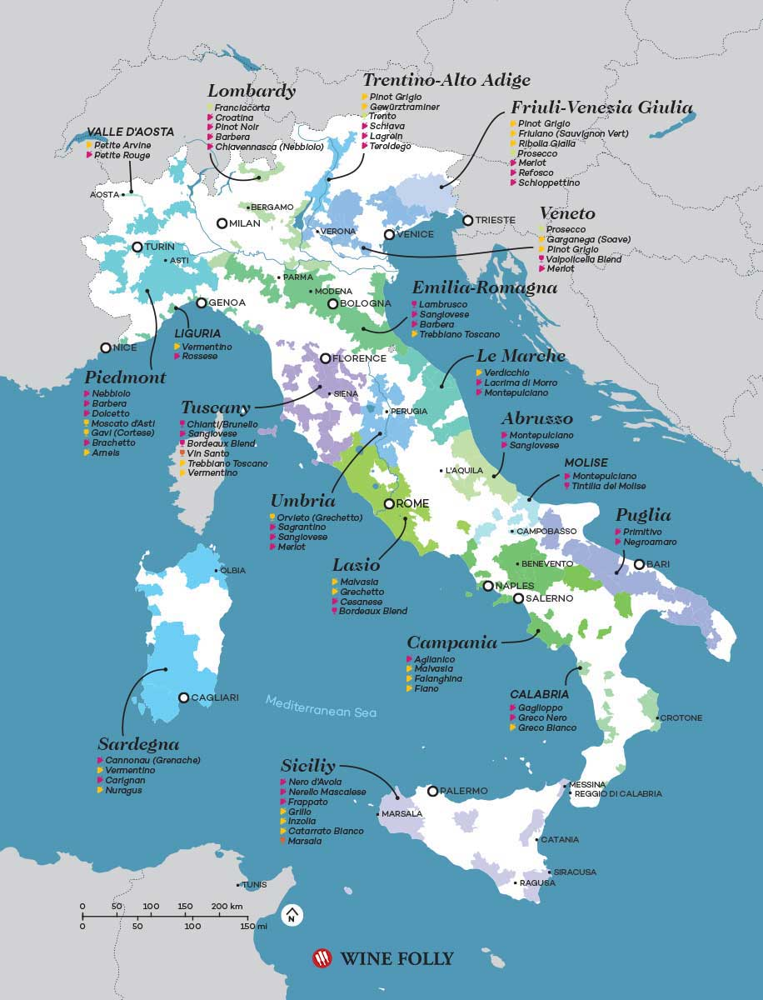
🏔️ Norte ⭐⭐ — Piemonte + Vêneto · maioria premium
Piemonte ⭐⭐
Barolo + Barbaresco + Moscato d'Asti. Deep dive na sidebar →
NebbioloBarberaMoscato
Vêneto ⭐⭐
Prosecco + Amarone della Valpolicella + Pinot Grigio. Maior produção italiana.
Cannonau (= Grenache) + Vermentino (branco) + Carignano del Sulcis.
CannonauVermentino
Como navegar: Pra Sangiovese → Toscana (Chianti Classico, Brunello). Pra Nebbiolo → Piemonte (Barolo, Barbaresco). Pra Prosecco/Amarone → Vêneto. Pra value tintos → Puglia (Primitivo) ou Sicília (Nero d'Avola). Pra branco mineral → Trentino, Friuli ou Etna. Pra fortificado → Marsala.
Itália = ~350 uvas nativas. Aqui estão as 10 mais importantes que cobrem 80% do que você encontra mundialmente.
🍷 Tintas principais
Sangiovese
⭐⭐ #1 da Itália · "sangue de Júpiter"
Corpo
Taninos
Acidez
CerejaAmeixaErvas secasCouroTerra
Onde brilha:Chianti Classico ⭐⭐Brunello di Montalcino ⭐⭐
Nebbiolo
⭐⭐ "Diva italiana" · Piemonte
Corpo
Taninos
Acidez
CerejaTar (alcatrão)RosaFigoTrufa
Onde brilha:Barolo ⭐⭐Barbaresco ⭐⭐Valtellina
Barbera
Piemonte · maior plantio local
Corpo
Taninos
Acidez
Cereja pretaAnisErvas secas
Onde brilha:Barbera d'Asti ⭐Barbera d'Alba
Aglianico
"Barolo do Sul" · Campania + Basilicata
Corpo
Taninos
Acidez
Cereja pretaCouroTabacoVulcânico
Onde brilha:Taurasi ⭐Aglianico del Vulture
Corvina
Vêneto · base do Amarone
Corpo
Taninos
Acidez
Cereja secaEspeciariasCacauPassas (Amarone)
Onde brilha:Amarone ⭐⭐ValpolicellaRipasso
Primitivo
Puglia · = Zinfandel (origem croata)
Corpo
Taninos
Acidez
Cereja pretaAmeixa secaEspeciariasMediterrâneo
Onde brilha:Manduria ⭐Salento
Nero d'Avola
Sicília · uva nativa #1 da ilha
Corpo
Taninos
Acidez
CerejaAlcaçuzEspeciariasPimenta
Onde brilha:Sicília ⭐Cerasuolo di Vittoria
Negroamaro
Puglia · "preto e amargo"
Frutas pretasCouroTabaco
Onde brilha:SalentoSalice Salentino
🥂 Brancos principais
Pinot Grigio
Norte · #1 branco italiano de exportação
Corpo
Acidez
PeraMaçãMineralidade
Onde brilha:Friuli ⭐Trentino-Alto Adige ⭐Vêneto
Glera (Prosecco)
⭐⭐ Vêneto · #1 espumante mundial
Corpo
Acidez
MaçãPeraFloral
Onde brilha:Prosecco DOCConegliano-Valdobbiadene DOCG ⭐
Verdicchio
Marche · branco italiano com mais potencial
Corpo
Acidez
LimãoAmêndoa amargaMineralidade
Onde brilha:Castelli di Jesi ⭐Matelica
Vermentino
Sardenha · costa mediterrânea
Corpo
Acidez
LimãoToranjaSal marinho
Onde brilha:Sardenha ⭐Toscana costa
Trebbiano
Mais plantada da Itália · neutra
CítricoNeutro
Onde brilha:ToscanaAbruzzo
Greco / Falanghina
Campania · brancos vulcânicos
LimãoPeraPedra
Onde brilha:Greco di Tufo ⭐Fiano di Avellino
Cheat sheet: sistema DOCG/DOC/IGT, Super Tuscans, Amarone, top picks por região.
🍇 Piemonte em uma frase: Aos pés dos Alpes, a região italiana mais comparada à Borgonha. Nebbiolo (Barolo, Barbaresco) é o rei. Surpresa: Barolo + Barbaresco são só 3% da produção local — Barbera é o vinho do dia a dia.
🍷 Informações básicas
🌍 DOCGs
19
mais que qualquer região IT
🍷 Tinta #1
Nebbiolo
Barolo · Barbaresco
🍷 Tinta #2
Barbera · Dolcetto
Vinhos do dia a dia · Alba
🥂 Branca #1
Moscato
Moscato d'Asti · espumante doce
🥂 Branca #2
Cortese · Arneis
Gavi · Roero
🗺️ Principais sub-zonas
Barolo ⭐⭐⭐
11 villages · Nebbiolo · "rei"
Barbaresco ⭐⭐⭐
3 villages · Nebbiolo mais sedoso
Asti
Barbera · Moscato
Roero
Nebbiolo + Arneis · margem esquerda Tanaro
Gavi
Cortese branco · sul
📊 Outras informações
Hectares
~44k
menor que Borgonha + Beaujolais
DOCGs
19
+ 41 DOCs
Barolo + Barbaresco
3%
da produção local · raros
Clima predominante
Continental
Alpes + Apeninos · "nebbia" matinal
🌟 O que torna Piemonte único
Geografia
Alpes + Apeninos
Alpes ao norte (frio), Apeninos ao sul. As colinas (Langhe) são o sweet spot.
Clima
Nebbia (névoa)
Nebbiolo vem de "nebbia". Névoas matinais + sol intenso à tarde = grande amplitude diurna.
Solos
Calcário vs Areia
Em Barolo: 2 estilos. Calcário (La Morra, Barolo) = elegante. Areia (Serralunga) = bold.
Cuisine match
Tartufo bianco
Trufa branca de Alba (€3-5k/kg). Pareamento divino com Barolo envelhecido.
Vale do Pó. Mercado local enorme = vinhos vendem sem precisar exportar.
Foco nas 4 estrelas: Barolo + Barbaresco (Nebbiolo) · Barbera d'Asti (Barbera) · Moscato d'Asti (branco doce). Resto é cenário de apoio.
🗺️ Mapa Nebbiolo do Piemonte
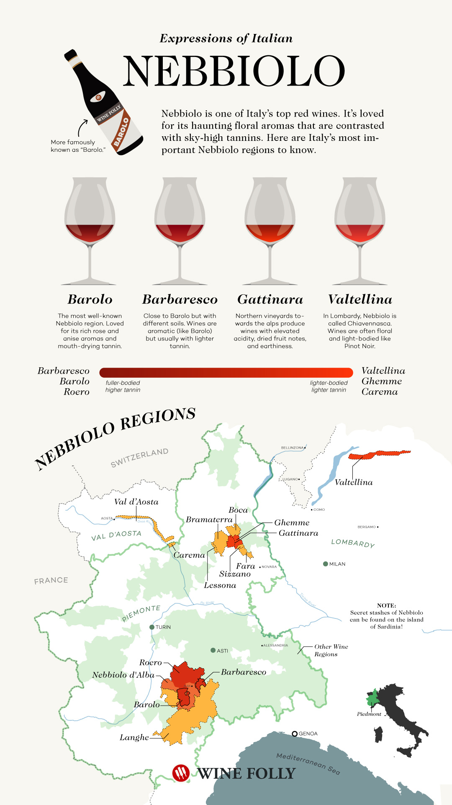
1. Barolo DOCG ⭐⭐ — "Rei dos Vinhos" · >€60
Sudoeste de Alba. Nebbiolo 100%. Cor tijolo pálida, mas corpo bold e taninos rígidos. Mínimo 18 meses em barrica + 3 anos no total. Riserva: 5+ anos. Envelhece 20+ anos.
Dicas de rótulo: "Vigna" = vinhedo único (single vineyard). "Riserva" = 5+ anos de envelhecimento. Quanto mais velho, melhor — Barolo de 10+ anos é onde brilha.
Nordeste de Alba. Nebbiolo 100%. Solos majoritariamente calcários (= La Morra/Barolo style). Clima com menor amplitude diurna → uvas mais finas → menos taninos, mais aroma, mais acessível jovem.
Nebbiolo 100%
🏆 3 Comunas principais
Barbaresco ⭐NeiveTreiso
Barbaresco vs Barolo (resumo): mesma uva (Nebbiolo), mas Barbaresco = mais leve, menos tânico, mais aromático e mais acessível jovem. Para começar com Nebbiolo, Barbaresco é melhor entry-point.
3. Barbera ⭐ — o que se bebe no dia a dia
A uva mais plantada do Piemonte. Cor escura, acidez alta, taninos baixos. "Os piemonteses adoram Barolo, mas tomam Barbera" — versátil, custo-benefício, pareia com qualquer comida italiana.
Barbera
🏆 DOCGs (apenas 2!)
Barbera d'Asti ⭐Barbera del Monferrato Superiore
"Superiore" = mais álcool + mais envelhecimento
4. Dolcetto — "pequeno doce" que não é nenhum dos dois
Apesar do nome, não é doce nem pequeno. Cor escura, sabores de amora, alcaçuz, tar. Baixa acidez + taninos altos = não envelhece bem, mas é fácil de beber jovem.
Dolcetto
🏆 3 DOCGs
DoglianiDolcetto di Ovada SuperioreDolcetto di Diano d'Alba
5. Brancos: Moscato d'Asti + Gavi ⭐
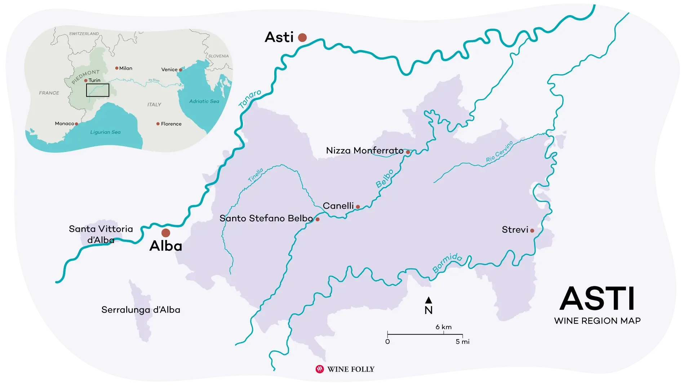
Moscato d'Asti: rosas, laranja, lichia. Mesma região que Barolo! 2 estilos: Asti Spumante (espumante 9% ABV) e Moscato d'Asti (frizzante 5% ABV, super doce).
Gavi (Cortese): branco seco, limão e acidez. Comparado a Pinot Grigio cortante ou Chablis. "Metodo Classico Gavi" virou tendência.
Moscato BiancoCortese (Gavi)Arneis (Roero)
6. Outros Nebbiolo (estilo Pinot Noir) ⭐
Não só Barolo e Barbaresco fazem Nebbiolo. Langhe Nebbiolo (a mesma região, mas wines "declassificados") + outras DOCs do norte fazem estilo mais leve, parecido com Pinot Noir. Preço bem menor (>€20).
Cheat sheet: Barolo vs Barbaresco lado a lado, "Riserva" e "Vigna", top picks, pareamento com a cuisine piemontesa.
🆚 Barolo vs Barbaresco — cara a cara
Dimensão
Barolo 👑
Barbaresco 👸
Localização
Sudoeste de Alba
Nordeste de Alba
Uva
Nebbiolo 100%
Nebbiolo 100%
Solo dominante
Misto (calcário + arenito)
Calcário
Taninos
⭐⭐⭐⭐⭐ rígidos
⭐⭐⭐ mais sutis
Corpo
Mais bold
Mais leve
Cor
Tijolo pálido a granada
Tijolo (mais claro)
Tempo mínimo total
3 anos · Riserva 5+
2 anos · Riserva 4+
Tempo em barrica
18 meses mínimo
9 meses mínimo
Quando beber
10-15 anos ideal
5-10 anos acessível
Preço entry-level
€60+
€40+
🏷️ Dicas de leitura de rótulo
Riserva
+ 2 anos
Mais envelhecimento. Em Barolo = 5+ anos (vs 3 padrão).
Vigna ⭐
Single vineyard
"Vigna X" = vinhedo único. Equivalente a 1er Cru francês.
Superiore
+ álcool + idade
Em Barbera, Dolcetto: 13%+ ABV + envelhecimento maior.
🍷 Top picks por categoria
Barolo clássico
Vietti · Cavallotto
€80-200. Estilo tradicional.
Barolo entry
G.D. Vajra · Massolino
€60-80. Acessíveis e de qualidade.
Barbaresco
Produttori del Barbaresco
€40-60. Cooperativa lendária.
Cult
Giacomo Conterno · Bruno Giacosa
€300-1000+. Lendários.
Barbera
Vietti Tre Vigne
€20-40. Cotidiano.
Langhe Nebbiolo
Massolino · Vajra
€20-35. Entrada em Nebbiolo.
Gavi
La Scolca · Pio Cesare
€15-30. Branco premium.
Moscato d'Asti
Vietti Cascinetta
€12-20. Sobremesa.
🍴 Pareamento com cuisine piemontesa
Prato típico
Vinho ideal
🍝 Tajarin (pasta de gema com manteiga + sálvia)
Barbaresco · Nebbiolo
🥫 Bagna cauda (molho quente de anchova + alho)
Barbera · Grignolino (acidez)
🥟 Plin (pasta recheada)
Dolcetto direto do jarro
🍄 Tartufo bianco (trufa branca de Alba)
Barolo envelhecido (10+ anos) ⭐⭐
🥩 Brasato al Barolo (carne brasada no Barolo)
Barolo Riserva
🍫 Gianduiotto (chocolate piemontês)
Brachetto d'Acqui · Moscato
🍰 Sobremesa de morango / pêssego
Moscato d'Asti
🍷 Toscana em uma frase: Lar espiritual do Sangiovese. Chianti Classico no centro histórico, Brunello como o pico, Super Tuscans em Bolgheri como rebelião globalista. 11 DOCGs empate com Piemonte como recorde italiano.
🍷 Informações básicas
🌍 DOCGs
11
empate com Piemonte
🍷 Tinta #1
Sangiovese
~60% do plantio · Chianti · Brunello
🍷 Tinta #2
Cab Sauv · Merlot
Super Tuscans · Bolgheri
🥂 Branca #1
Vernaccia
San Gimignano · 1ª DOCG IT (1966)
🥂 Branca #2
Trebbiano · Vermentino
Maremma · costa
🗺️ Principais sub-zonas
Chianti Classico ⭐⭐⭐
Gallo Nero · Florença ↔ Siena
Brunello di Montalcino ⭐⭐⭐
Sangiovese Grosso · 5 anos guarda mín
Bolgheri ⭐⭐⭐
Sassicaia · Ornellaia · Super Tuscans
Vino Nobile di Montepulciano
Prugnolo Gentile · 3º estilo Sangiovese
Maremma
Costa sul · custo-benefício
📊 Outras informações
Hectares
~58k
Sangiovese domina ~60%
Vinícolas
~5.000
muitas family-owned
DOCGs
11
+ 41 DOCs
Clima predominante
Mediterrâneo
colinas + costa tirrênica
🌟 O que torna a Toscana única
Filosofia
Sangiovese-first
Quase toda DOCG da região é à base de Sangiovese (puro ou em blend). A uva define a Toscana.
Marco
Super Tuscan (1970s)
Sassicaia (1968), Tignanello (1971), Ornellaia. Rejeitaram DOC pra usar Cab/Merlot. Hoje IGT.
Entre Florença e Siena. 80-100% Sangiovese. Selo "Gallo Nero" (galo preto) no rótulo distingue do Chianti básico. Em 2023 ganhou as 11 UGAs (Unità Geografiche Aggiuntive) — sistema tipo Borgonha.
Sangiovese (80-100%)
🏆 Pirâmide de qualidade (2014)
Nível
Envelhecimento
Estilo
Annata
12 meses
Entrada · fresco e frutado
Riserva
24 meses (+ 3 em garrafa)
Mais estrutura
Gran Selezione ⭐
30 meses · single estate · 90%+ Sangiovese
Topo da pirâmide (2014)
11 UGAs (zonas geográficas, 2023)
San CascianoMontefiorallePanzano ⭐LamoleRadda ⭐Gaiole ⭐Castelnuovo BerardengaVagliagliCastellinaSan Donato in PoggioGreve
2. Brunello di Montalcino DOCG ⭐⭐ — "Vale a pena esperar"
100% Sangiovese (variante local "Brunello"/Sangiovese Grosso). Casca mais grossa = fruta mais intensa, taninos altos, acidez alta. O envelhecimento mais longo da Itália: liberado só no 5º ano após a colheita (6º para Riserva). 2 anos mínimo em carvalho.
Sangiovese 100%
🏆 Pirâmide de Montalcino
Nível
Envelhecimento
Notas
Brunello Riserva ⭐⭐
6 anos (2 em carvalho + 6 meses em garrafa)
Só de safras top
Brunello Normale ⭐
5 anos (2 em carvalho + 4 meses em garrafa)
O padrão
Rosso di Montalcino
1 ano · sem requisito de carvalho
"Mini-Brunello" custo-benefício
Sant'Antimo
Variado
Pode incluir Cab, Merlot, etc.
Moscadello di Montalcino
—
Branco Muscat doce
🌱 2 estilos por terroir
Localização
Solo
Estilo
Val d'Orcia (base)
Argila profunda
🍷 Bold, frutas pretas, modernist + barriques
Colinas altas (até 500m)
Galestro (xisto)
🌹 Elegante, frutas vermelhas, tradicional + botte
⭐ Safras lendárias (últimos 25 anos)
2015 ⭐⭐20122010 ⭐⭐20072006200420011997
3. Vino Nobile di Montepulciano DOCG ⭐ — O 3º clássico
Comuna de Montepulciano (SE da Toscana). 70%+ Sangiovese (chamado localmente "Prugnolo Gentile"). Estilo entre Chianti e Brunello: mais corpo que Chianti, mais acessível que Brunello. 2 anos mínimo (3 para Riserva).
Sangiovese (70%+)
⚠️ Cuidado:
"Vino Nobile di Montepulciano" (Toscana, Sangiovese) ≠ "Montepulciano d'Abruzzo" (Abruzzo, outra uva).
4. Bolgheri DOC ⭐⭐ — Reino dos Super Tuscans
Costa tirrênica. Solo + clima similar a Bordeaux → Cabernet Sauvignon, Merlot e Cab Franc brilham. Nos anos 1970, produtores ignoraram DOC pra fazer wines com uvas francesas → criaram categoria IGT = "Super Tuscans". Hoje Bolgheri tem seu DOC próprio.
5. Maremma Toscana DOC — Custo-benefício do litoral
Sul costeiro. Mais quente que Chianti. Morellino di Scansano DOCG (Sangiovese mais frutado, acessível) + tintos internacionais em estilo Super Tuscan a preços menores.
SangioveseCab SauvMerlotVermentino
6. Vernaccia di San Gimignano DOCG — Único branco DOCG da Toscana
San Gimignano (cidade medieval com torres). Branco mineral com leve amargor. Primeiro vinho italiano a receber DOC em 1966. Único DOCG branco da Toscana.
Vernaccia
Sangiovese é tudo — em diferentes clones e estilos. Mais Bordeaux blends dos Super Tuscans + Vermentino costeiro + Vernaccia única.
Cheat sheet: Chianti vs Brunello vs Vino Nobile, Brunello tradicional vs moderno, top picks por categoria.
🆚 Os 3 grandes Sangiovese — cara a cara
Dimensão
Chianti Classico 🐓
Brunello di Montalcino 👑
Vino Nobile di Montepulciano
% Sangiovese
80-100%
100% (Brunello)
70%+ (Prugnolo Gentile)
Envelhecimento mín.
12 meses · Riserva 24 m · Gran Selezione 30 m
5 anos (2 em barrica) · Riserva 6 anos
2 anos · Riserva 3 anos
Estilo
Fresco, fácil, fruta vermelha
Bold, concentrado, longa guarda
Equilibrado · ponto médio
Quando beber
3-10 anos
10-25 anos
5-15 anos
Preço entry
€20-40
€60-150
€25-50
Produtores top
Felsina · Castello di Ama · Querciabella
Biondi-Santi · Soldera · Argiano · Casanova di Neri
Avignonesi · Boscarelli · Salcheto
🛢️ Brunello: Tradicional vs Moderno
Dimensão
Tradicional 🌿
Moderno 🔥
Barricas
Botte (grande, eslavônia)
Barriques (pequenas, francesas)
Influência do carvalho
Mínima · só oxigênio
Lactonas marcantes · baunilha
Sabores
Frutas secas, couro, terroso
Frutas pretas, chocolate, baunilha
Quando beber
15-25 anos pra pico
Mais cedo (5-10 anos)
Produtores
Biondi-Santi · Soldera · Il Poggione
Banfi · Casanova di Neri · Argiano (parte)
🍷 Top picks por categoria
Chianti entry
Chianti Classico Annata
€18-30. Felsina, Fontodi, Castello di Ama.
Gran Selezione
Top do Chianti
€60-150. Castello di Ama "L'Apparita".
Brunello entry
Brunello Normale
€60-100. Argiano, Il Poggione, Caparzo.
Brunello Cult
Riserva top
€200+. Biondi-Santi, Soldera, Salvioni.
Super Tuscan
Sassicaia · Ornellaia
€200-500. Tignanello a €100.
Vino Nobile
Boscarelli · Avignonesi
€25-50. Custo-benefício do Sangiovese.
Branco
Vernaccia di San Gimignano
€15-30. Panizzi, Montenidoli.
Sobremesa
Vin Santo
€40-80 (375ml). Felsina, Avignonesi.
🍴 Pareamento com a cozinha toscana
Prato típico
Vinho ideal
🥩 Bistecca alla fiorentina (T-bone)
Brunello · Super Tuscan
🍝 Pappardelle al cinghiale (javali)
Brunello Riserva · Tignanello
🍅 Pici al ragù / pasta tomate
Chianti Classico Annata
🐟 Cacciucco (sopa de peixe)
Vermentino · Vernaccia
🐗 Carne de caça
Brunello envelhecido
🧀 Pecorino Toscano
Chianti Classico Riserva
🍪 Cantucci (biscoito de amêndoa)
Vin Santo (mergulhar!) ⭐
🌋 Sicília em uma frase: A maior ilha do Mediterrâneo. Antes "fábrica de Marsala", hoje é a região italiana em maior ascensão — Etna virou "Borgonha do Sul", Cerasuolo di Vittoria único DOCG, e Nero d'Avola explode mundialmente.
🍷 Informações básicas
🌍 Ranking IT
#3
em hectares
🍷 Tinta #1
Nero d'Avola
Mais plantada · custo-benefício
🍷 Tinta #2
Nerello Mascalese
Etna · "Pinot Noir vulcânico"
🥂 Branca #1
Carricante
Etna Bianco · "Riesling vulcânico"
🥂 Branca #2
Grillo · Catarratto
Brancos secos modernos · Marsala
🗺️ Principais sub-zonas
Etna DOC ⭐⭐⭐
Vulcão ativo · 1.200m · cult global
Cerasuolo di Vittoria ⭐⭐
Único DOCG · Nero d'Avola + Frappato
Marsala
Fortificado clássico (1773)
Faro
Estreito de Messina · cult
Pantelleria · Lipari
Ilhas · Moscato passito doce
📊 Outras informações
Hectares
~98k
3ª maior região italiana
DOC + DOCG
23 + 1
Cerasuolo único DOCG
Etna altitude
1.200m
vinhedos · solo vulcânico
Clima predominante
Mediterrâneo
+ vulcânico (Etna)
🌟 O que torna a Sicília única
Etna
"Borgonha do Sul"
Vulcão ativo. Vinhedos em altitude. Nerello Mascalese (tinto) e Carricante (branco) lembram Pinot e Riesling.
Solo vulcânico
Areia + lava
Vinhas pré-filoxera ainda em pé direto (sem porta-enxerto). Únicas no mundo.
Único DOCG
Cerasuolo di Vittoria
Blend Nero d'Avola + Frappato. Único DOCG da Sicília.
Marsala
Fortificado clássico
Inventado por John Woodhouse (1773). Estilo similar a Madeira. Em decadência mas renascendo.
Custo-benefício
Nero d'Avola
Tinto encorpado e acessível. Frequentemente abaixo de €15. Versátil.
Brancos
Grillo + Catarratto
Antes só base de Marsala, hoje brancos secos minerais de qualidade.
4 sub-regiões essenciais: Etna (vulcão), Cerasuolo di Vittoria (único DOCG), Marsala (fortificado), Faro (Estreito de Messina).
1. Etna DOC ⭐⭐ — "Borgonha do Sul" · vulcão ativo
Encostas do Monte Etna (3.350m, vulcão ativo). Vinhedos até 1.200m de altitude. Solo vulcânico + amplitude diurna = tintos elegantes, aromáticos, brancos vibrantes. Comparado à Borgonha. Muitas vinhas pré-filoxera, em pé direto.
Passopisciaro ⭐Frank CornelissenPietradolceTenuta delle Terre NereBenantiGraci
2. Cerasuolo di Vittoria DOCG ⭐⭐ — Único DOCG da Sicília
Sudoeste da ilha. Blend tradicional: 50-70% Nero d'Avola + 30-50% Frappato. Estilo único: corpo do Nero d'Avola + frescor floral do Frappato. Solo "terra rossa" + areia.
Nero d'AvolaFrappato
⭐ Produtores top
COS ⭐PlanetaValle dell'AcateArianna Occhipinti
3. Marsala DOC — Fortificado clássico em renascimento
Cidade de Marsala (oeste). Vinho fortificado inventado por John Woodhouse (1773) inspirado no Madeira/Sherry. Base uvas brancas (Grillo, Catarratto, Inzolia) — apesar da cor marrom-âmbar.
GrilloCatarrattoInzolia
🏆 Categorias Marsala (por idade)
Categoria
Tempo
Estilo
Fine
1 ano
Entry · uso culinário
Superiore
2 anos
Equilibrado
Superiore Riserva
4 anos
Mais complexo
Vergine ⭐
5 anos
Seco · sem adição de açúcar
Vergine Stravecchio ⭐⭐
10 anos
Top · raro · solera-like
4. Faro DOC — Messina · raríssimo
Estreito de Messina (NE). Apenas ~10 hectares da DOC! Blend Nerello Mascalese + Nerello Cappuccio + Nocera. Comparado ao Etna. Produção minúscula.
Nerello MascaleseNocera
5. Outras DOCs — Noto, Eloro, Pantelleria
Noto DOC Sudeste. Nero d'Avola encorpado.
Eloro DOC Sul. Nero d'Avola + Frappato.
Pantelleria DOC ⭐ Ilha vulcânica. Passito di Pantelleria (Zibibbo/Muscat doce) é icônico.
Vittoria DOC Versão sem DOCG do Cerasuolo. Mais flexível.
Malvasia delle Lipari Ilhas Eólias. Branco doce passificado.
Sicilia DOC Categoria-guarda-chuva regional. Inclui todos varietais.
Cheat sheet: Etna vs Cerasuolo vs Marsala, comparação com vinhos clássicos, top picks.
🌋 Por que Etna é a "Borgonha do Sul"
Dimensão
Etna 🌋
Borgonha (comparação) 🍇
Uva tinta
Nerello Mascalese
Pinot Noir
Cor do vinho
Pálido tijolo
Pálido cereja
Solo
Vulcânico (lava + areia)
Calcário (Kimmeridgiano)
Estilo
Elegante, especiarias, mineral
Elegante, terroso, mineral
Altitude
500-1.200m
200-400m
Single-vineyard culture
"Contrada" ⭐
"Climat" ⭐
Branco principal
Carricante
Chardonnay
📜 Sistema de "Contrade" do Etna (estilo Borgonha)
As Contrade são parcelas/vinhedos individuais com nome próprio, registradas oficialmente. Similar aos climats da Borgonha. Exemplo: "Etna Rosso Contrada Rampante" indica vinhedo específico. Hoje há ~130 contrade catalogadas.
🍷 Top picks por categoria
Etna Rosso entry
Tenuta delle Terre Nere
€25-40. "Etna Rosso" base.
Etna Rosso top
Passopisciaro · Pietradolce
€60-150. Single contrada.
Etna Bianco
Benanti · Pietradolce
€30-60. Carricante.
Cerasuolo
COS · Arianna Occhipinti
€30-60. Cult naturais.
Nero d'Avola
Planeta · Donnafugata
€12-25. Custo-benefício.
Cult tinto
Frank Cornelissen
€100+. Vinhos naturais culto.
Branco
Grillo / Sicilia DOC
€12-25. Tasca d'Almerita.
Passito
Passito di Pantelleria
€30-60 (375ml). Donnafugata Ben Ryé ⭐.
🍴 Pareamento
Prato
Vinho siciliano
🐟 Pasta con le sarde (sardinhas)
Etna Bianco · Grillo
🍝 Pasta alla Norma (berinjela)
Cerasuolo di Vittoria · Nero d'Avola
🍅 Caponata
Frappato · Nero d'Avola jovem
🦞 Frutos do mar grelhados
Etna Bianco Superiore · Carricante
🥩 Spaghetti con bottarga
Etna Bianco
🦌 Caça
Etna Rosso envelhecido
🧀 Pecorino siciliano
Nero d'Avola Riserva
🍰 Cannoli · Cassata siciliana
Passito di Pantelleria · Marsala Vergine
🇦🇹 Tese central: Pequena, super qualitativa. Capital mundial do Grüner Veltliner. Riesling rivaliza com Alemanha. Após escândalo de 1985 (etileno glicol), Áustria criou os padrões de qualidade mais rigorosos da Europa.
🍷 Informações básicas
🌍 Ranking mundial
#18
produção
🍷 Tinta #1
Blaufränkisch
Burgenland · tinto sério
🍷 Tinta #2
Zweigelt
Mais leve, frutado
🥂 Branca #1
Grüner Veltliner
33% do plantio · uva-assinatura
🥂 Branca #2
Riesling
Wachau · rivaliza Alemanha
🗺️ Principais regiões
Wachau ⭐⭐⭐
UNESCO · Grüner + Riesling premium
Kamptal / Kremstal
Brancos premium · DAC
Burgenland
Tintos + Eiswein
Steiermark · Wien
Sauv Blanc · vinhedos urbanos
📊 Outras informações
Hectares plantados
~45k
menor que Champagne
Regiões oficiais
16
em 4 estados
DACs
17
denominações de origem controlada
Clima predominante
Continental
Danúbio · ladeiras · loess
🌟 O que torna a Áustria única
Uva-assinatura
Grüner Veltliner
"Veltliner verde". Pimenta-branca + frutas + acidez vibrante. Único no mundo.
Marco histórico
Escândalo 1985
Vinhos contaminados c/ etileno glicol. Indústria foi destruída → renasceu com qualidade máxima.
Wachau
UNESCO
Vale do Danúbio. Patrimônio mundial. Smaragd, Federspiel, Steinfeder = sistema próprio único.
Vinhedos urbanos
Viena
Capital com milhares de acres de vinhedos dentro da cidade (Wiener Gemischter Satz DAC).
Tintos
Blaufränkisch
Em Burgenland (perto Lago Neusiedl). Tinto sério com guarda. Zweigelt mais leve, frutado.
Eiswein
Sobremesa nobre
Uvas congeladas na vinha. Burgenland top mundial junto com Alemanha e Canadá.
4. Wien (Viena) ⭐ — Única capital com vinhedos comerciais
~700 hectares dentro da capital. Especialidade única: Wiener Gemischter Satz DAC — campo blend (várias uvas brancas plantadas e vinificadas juntas).
Wiener Gemischter SatzGrüner VeltlinerRiesling
Como navegar: Pra Grüner Veltliner top → Wachau (Smaragd). Pra Riesling → Kamptal ou Kremstal. Pra Blaufränkisch → Mittelburgenland. Pra doce nobre → Neusiedlersee TBA. Pra Sauvignon Blanc → Südsteiermark.
Áustria = Grüner Veltliner + Riesling nos brancos · Blaufränkisch + Zweigelt nos tintos. Plus joias regionais.
Onde brilha:Mittelburgenland ⭐⭐EisenbergLeithaberg
Zweigelt
⭐ Mais plantada · cross Saint Laurent × Blaufränkisch
Corpo
Taninos
Acidez
Cereja ácidaChocolate ao leitePimentaErvasTerra
Onde brilha:BurgenlandNeusiedlersee
Saint Laurent
Tipo Pinot Noir · raro
CerejaTerraSedoso
Onde brilha:Burgenland
🏷️ Os padrões mais rigorosos da Europa. Após o escândalo de 1985 (etileno glicol), a Áustria criou um sistema de qualidade único. Combinação de maturidade da uva (Prädikat) + origem (DAC) + estilo regional (Wachau).
Vinho de país. 3 zonas (Weinland, Steirerland, Bergland) · 36 uvas oficiais.
Qualitätswein ⭐
Selo branco-vermelho na cápsula. Aprovado em 2 testes (química + sensorial). 36 uvas. 16 regiões.
Kabinett
Qualitätswein com padrão um pouco mais alto.
Prädikatswein ⭐⭐
"Predicado" — definido pelo açúcar natural da uva colhida (escala em °KMW ≈ Brix).
🍯 Prädikat — escala de doçura natural (KMW/Brix)
Predicado
°Brix mínimo
Estilo
Spätlese
22,4°
Colheita tardia · mais maduro
Auslese
24,8°
Cachos selecionados
Beerenauslese (BA)
29,6°
Bagos selecionados com botrytis
Eiswein
29,6°
Uvas congeladas na vinha (colheita -7°C)
Strohwein / Schilfwein
29,6°
Uvas secas em palha
Trockenbeerenauslese (TBA) ⭐⭐
35,5°
Auge: bagos passificados com botrytis
📜 DAC (Districtus Austriae Controllatus) — origem controlada
DAC é o equivalente austríaco de DOC italiano ou AOC francês — define origem + estilo aprovado. Hoje existem 17 DACs (10 das 16 regiões). Vinhos típicos da região são DAC; vinhos atípicos (ex: Sauv Blanc em Wachau) usam só o estado (Niederösterreich).
🍇 Wachau — sistema único (estilo por álcool)
Categoria
ABV
Estilo
Steinfeder
≤ 11,5%
Leve, vivaz · beber jovem
Federspiel
11,5 – 12,5%
Médio · seco clássico
Smaragd ⭐⭐
≥ 12,5%
Mais maduro, rico, longeva · topo Wachau
Smaragd = "esmeralda" (em referência aos lagartos verdes que se aquecem nas terraças). Federspiel vem de uma técnica de falcoaria. Steinfeder é o nome de uma grama local.
⭐ Erste Lage / 1ÖTW — "1er Cru" austríaco
Em Kremstal, Kamptal, Traisental e Wagram, vinhedos top recebem o selo "1ÖTW" (Erste Österreichische Traditionsweingüter — "1ª Categoria das Vinhas Tradicionais Austríacas"). Equivale a Premier Cru francês. Não confundir com "Reserve" (que é só ≥13% ABV).
✨ Austrian Sekt g.U. — espumante por níveis
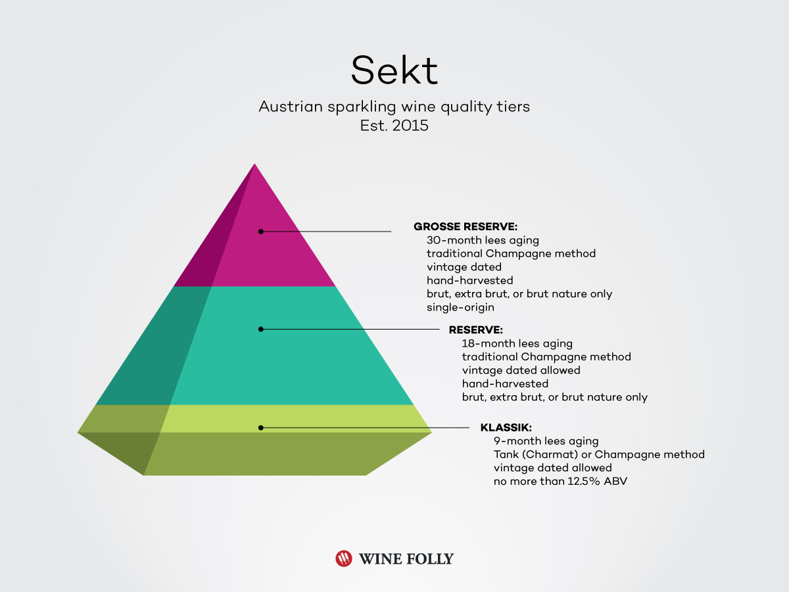
Nível
Tempo em lees
Klassik
9 meses
Reserve
18 meses
Grosse Reserve ⭐
30 meses · single vineyard
Cheat sheet: top picks, marcos históricos, pareamento.
🍷 Top picks por categoria
GV Smaragd
Wachau · F.X. Pichler · Knoll
€40-80. Topo do Grüner.
GV entry
Weinviertel DAC
€12-20. Hirsch, Sepp Moser.
Riesling
Kamptal / Wachau
€30-70. Bründlmayer, Schloss Gobelsburg.
Blaufränkisch
Mittelburgenland DAC
€20-60. Moric, Heinrich, Krutzler.
Sauv Blanc
Südsteiermark
€20-50. Tement, Sattlerhof.
Sobremesa
TBA Neusiedlersee
€60-200 (375ml). Kracher, Tschida.
Urbano
Wiener Gemischter Satz
€18-30. Wieninger, Mayer am Pfarrplatz.
Espumante
Sekt g.U. Grosse Reserve
€30-60. Método tradicional 30 m em lees.
📅 Marcos históricos
1985
⚠️ Escândalo do dietileno glicol
Vinhos doces adulterados com anticongelante. Exportações destruídas (caíram 90%). Triggered reforma total das leis.
1986
Nova lei do vinho — a mais rigorosa da Europa
Padrões de qualidade acima dos alemães. Crucial pra ressurgimento.
2000
⭐ Wachau vira Patrimônio UNESCO
Reconhecimento mundial dos terraços de vinha + paisagem cultural.
2003
Sistema DAC nasce (Weinviertel primeira)
Equivalente austríaco do DOC. Foco em "tipicidade" regional.
🍴 Pareamento
Prato
Vinho austríaco
🥗 Wiener Schnitzel
Grüner Veltliner Federspiel
🐟 Truta · peixe de rio
Riesling Kamptal · Steinfeder
🌶️ Comida asiática · curry
Grüner GV Klassik
🥩 Tafelspitz · carne cozida
Zweigelt
🐗 Caça · cordeiro
Blaufränkisch Reserve
🧀 Queijos curados
GV Smaragd · Blaufränkisch
🍰 Apfelstrudel · Sachertorte
TBA · Eiswein
🥂 Chablis em uma frase: 150 km ao norte do resto da Borgonha — geograficamente, climaticamente e estilisticamente uma região à parte. Solo único Kimmeridgiano. Chardonnay cortante, mineral, "óstrico". Sistema de classificação próprio.
Hectares plantados
~5.800
menor que Côte d'Or
Apenas 1 uva
Chardonnay
100% (sem exceção)
Grand Cru
1
com 7 climats
Premier Cru
~40
+ subclimats
🗺️ Mapa de Chablis
🌟 O que torna Chablis único
Solo
Kimmeridgiano
Calcário + marga + fósseis marinhos do Jurássico. Sabor "óstrico" mineral inconfundível.
Localização
Mais perto de Champagne
Geograficamente e climaticamente. Mesmo solo (Kimmeridgiano) do oeste de Champagne.
Sem manteiga, sem baunilha, sem carvalho (na maioria). Pura acidez + mineral.
Origem do nome
"Sha-blee"
Pronunciado como "shabli", não "chablees". Rio Serein cruza a vila.
Cistercienses
Séc. XII
Monges cistercienses iniciaram os vinhedos. Mesma ordem que criou a Borgonha "oficial".
Chablis tem 1 Grand Cru, mas dentro dele existem 7 climats individuais com nomes próprios — tipo Borgonha. Todos no lado norte do rio Serein, em encostas voltadas a sudoeste.
🏆 Os 7 Climats Grand Cru (oeste → leste)
#
Climat
Característica
1
Bougros
O mais a oeste. Estilo mais aberto e rico jovem. Drouhin produz top.
2
Preuses
Solos rasos. Floral, elegante, com tensão. Vincent Dauvissat referência.
3
Vaudésir ⭐
Considerado o mais aromático. Notas florais, frutas exóticas, mineral.
4
Grenouilles
O menor dos 7. "Rãs" em francês. Single producer dominante (La Chablisienne).
5
Valmur
Vale entre Vaudésir e Grenouilles. Densidade + mineralidade extrema.
6
Les Clos ⭐⭐
👑 O maior e mais famoso. Mais estruturado, longeva, complexo. Raveneau e Dauvissat referência mundial.
7
Blanchot
O mais a leste. Mais elegante e leve dos 7.
⭐ Premier Crus de destaque (~40 total)
Lado do rio
Climats principais
Margem Direita (mesma dos GCs)
Fourchaume ⭐ · Mont de Milieu ⭐ · Montée de Tonnerre ⭐ · Vaucoupin · L'Homme Mort
Margem Esquerda (oposta)
Montmains · Vaillons · Côte de Léchet · Beauroy · Vau-Ligneau · Vau de Vey
Dica: "Mont de Milieu" e "Montée de Tonnerre" são considerados quase-Grand Cru pela qualidade. Premier Crus da margem direita (próximos aos GCs) geralmente são mais estruturados.
Chablis = Chardonnay, ponto. 100% da uva. Mas como esse Chardonnay varia conforme a classificação...
Chardonnay (Chablis)
⭐⭐⭐ Estilo único do mundo
Corpo
Acidez
Mineralidade
Carvalho
Maçã verdeLimaSílexOstraMel (com idade)AvelãIodo
🌡️ Como o estilo varia por nível
Nível
Estilo
Carvalho
Guarda
Petit Chablis
Mais leve, cítrico, simples
Sem (inox)
1-3 anos
Chablis
Mineral, redondo, "padrão"
Geralmente sem
3-5 anos
Chablis 1er Cru ⭐
Mais estrutura + complexidade
Variável
5-10 anos
Chablis Grand Cru ⭐⭐
Profundo, longevo, mel + flores
Frequentemente em barrica (único nível)
10-25 anos
Surpresa: os Grand Crus de Chablis frequentemente usam carvalho (Raveneau, Dauvissat, Drouhin). Isso é único — nos níveis abaixo o carvalho é raro. Resulta em vinhos que parecem mais "Côte de Beaune" no estilo, mas com a coluna mineral de Chablis.
Cheat sheet: sistema de classificação único, top picks e pareamentos clássicos.
🏷️ Sistema de classificação único
~3%
CHABLIS GRAND CRU 🏆
1 GC com 7 climats. Rótulo: "Chablis Grand Cru Les Clos" (etc).
A "denominação base". Encostas próximas à vila de Chablis. Boa qualidade.
€15–30
~17%
PETIT CHABLIS
Solos diferentes (Portlandiano, não Kimmeridgiano). Estilo mais simples.
€12–20
⭐ Produtores lendários
Produtor
Especialidade
François Raveneau ⭐⭐⭐
O nome mais cobiçado. Les Clos, Valmur lendários.
Vincent Dauvissat ⭐⭐⭐
Igualmente cult. Preuses e Les Clos top.
Domaine William Fèvre ⭐
O maior proprietário de GCs. Estilo bem feito.
Louis Michel & Fils ⭐
Tradicional · 100% inox · pureza máxima.
Domaine Christian Moreau ⭐
Família fundadora. Les Clos clássico.
Drouhin-Vaudon
Maison Drouhin · estilo elegante.
La Chablisienne
Cooperativa · acessível, qualidade consistente.
🍴 Pareamento clássico
Prato
Nível de Chablis
🦪 Ostras frescas (o pareamento clássico) ⭐
Petit Chablis · Chablis
🦪 Frutos do mar crus / sashimi
Chablis · 1er Cru jovem
🐟 Peixe branco grelhado · sole meunière
Chablis 1er Cru
🦞 Lagosta com manteiga
Chablis Grand Cru (Les Clos)
🐔 Frango assado simples
Chablis
🧀 Queijos de cabra (Crottin de Chavignol)
Chablis
🍄 Risotto de cogumelos · porcini
Chablis Grand Cru envelhecido
🏷️ O sistema italiano em 60 segundos: 4 níveis hierárquicos (Vino → IGT → DOC → DOCG). Cada DOC/DOCG tem suas regras próprias. Plus categorias especiais como "Super Tuscan" (IGT) e "Riserva" (envelhecimento extra).
🏷️ Como ler um rótulo italiano
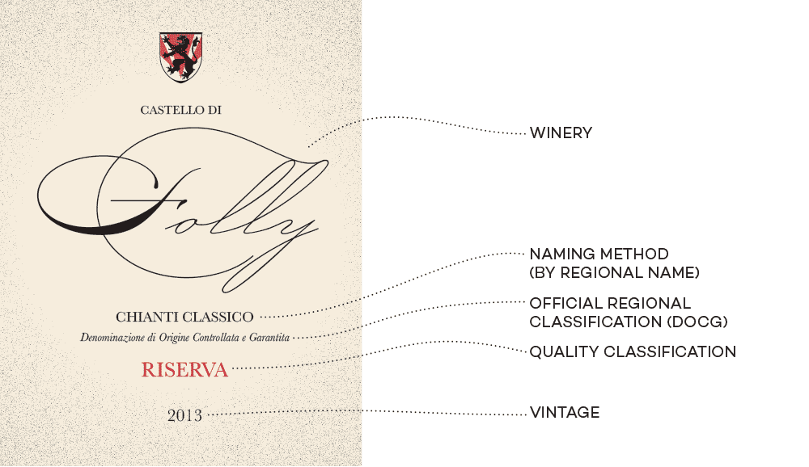
🏆 Pirâmide oficial DOCG/DOC/IGT (atualizada)
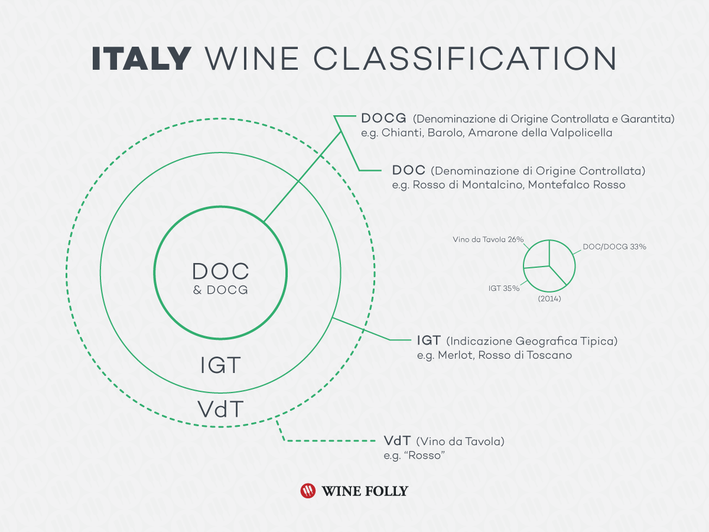
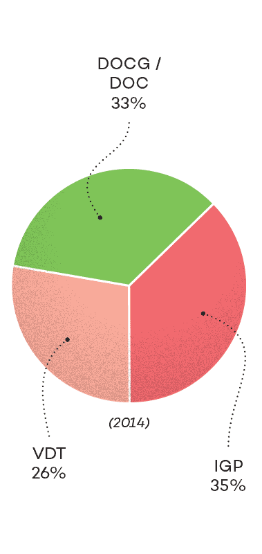
📜 Os 4 níveis
DOCG 🏆
Topo · 77 wines · selo numerado na garrafa
"Denominazione di Origine Controllata e Garantita". Controle máximo (laboratório + degustação).
Exemplos: Barolo · Brunello · Chianti Classico · Amarone · Cerasuolo di Vittoria
DOC ⭐
~330 wines · denominação controlada
"Denominazione di Origine Controllata". Origem, uvas e produção regulados.
Indicação Geográfica Típica · onde estão os Super Tuscans
Permite mais flexibilidade nas uvas. Por escolha (não por inferioridade), muitos top wines ficam aqui.
Exemplos: Toscana IGT (Sassicaia até 1994, Tignanello, Ornellaia) · Sicilia IGT
Vino
Base · sem origem regulada
"Vino da Tavola". Pode ser barato ou (raro) wines naturais experimentais.
⏳ Termos de envelhecimento
Termo
O que significa
Classico
Da área histórica original da DOC (ex: Chianti Classico = coração de onde Chianti nasceu)
Riserva
Envelhecimento mínimo maior + frequentemente alc. mín. maior
Superiore
Alcoolismo mínimo maior + (frequentemente) rendimento menor
Annata
Versão "padrão" (sem Riserva)
Gran Selezione ⭐
Topo de Chianti Classico (2014+): 30 meses · estate-bottled · 90%+ Sangiovese
Vigna
Single vineyard (equivalente a "Cru")
🍇 Categorias especiais por estilo
Passito
Uvas secas
Uvas passificadas (no varal, palha ou em câmaras). Vinhos doces (ex: Vin Santo, Passito di Pantelleria).
Appassimento
Método para Amarone
Uvas secas por 3-4 meses antes da fermentação. Resultado: vinhos secos mas concentradíssimos (Amarone, Sforzato).
Ripasso
Re-fermentação
Valpolicella re-fermentado sobre cascas do Amarone. Custo-benefício.
Metodo Classico
Método tradicional
Segunda fermentação na garrafa (= Champagne). Franciacorta, Trento DOC, Alta Langa.
🏷️ Sistema australiano:Geographical Indications (GIs) definem origem. Padrão "Old Vine" regulado só em Barossa. Variedades em blend listadas em ordem de proporção.
🏆 Geographical Indications (GIs)
Nível
O que é
Exemplo
Zone
Maior · sem restrição climática
"South Eastern Australia"
Region
Clima e características próprias
Barossa Valley, McLaren Vale
Sub-region ⭐
Identidade específica dentro da Region
Eden Valley (em Barossa)
🌿 Barossa Old Vine Charter — escala visual
Categoria
Idade da vinha
Old Vine
35+ anos
Survivor Vine
70+ anos
Centenarian Vine ⭐
100+ anos
Ancestor Vine ⭐⭐
125+ anos (vinhas pré-filoxera)
📜 Regras de rótulo
Termo
Significado
Single GI
≥85% das uvas daquela região
Varietal
≥85% da uva nominada
Blend
Uvas em ordem de proporção (ex: "Shiraz Cabernet" = + Shiraz)
Vintage
≥85% da safra do ano
Screwcap
Padrão nacional desde anos 2000, incluso top wines de guarda
🏷️ Sistema espanhol único: classifica por tempo de envelhecimento (não só por terroir). DOCa (topo) → DOP/DOC → IGP/VdT. Sherry e Cava têm sistemas próprios.
🏆 Pirâmide oficial DOC/DOP
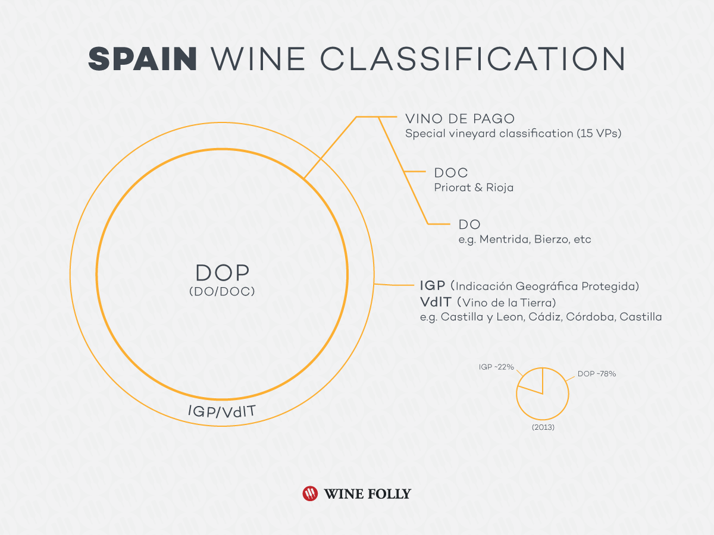
Fonte: Wine Folly
📊 Pirâmide visual DOCa/DO
🏆 Pirâmide de origem
Nível
O que é
Exemplos
DOCa / DOQ ⭐⭐
Topo · só 2: Rioja e Priorat
Rioja, Priorat
DO / DOP ⭐
~70 denominações
Ribera del Duero, Rías Baixas, Rueda
VC (Vino de Calidad)
Pré-DO
—
VP (Vino de Pago) ⭐
"Grand Cru" — vinhedo único top
Pago de Carraovejas
IGP (Vino de la Tierra)
Regional
VT Castilla
Vino
Base
—
⏳ Sistema de envelhecimento — escala visual
Categoria
Tempo total
Em barrica
Estilo
Joven
Lançado no ano
0 ou pouco
Frutado, jovem
Crianza
2 anos
6-12 meses
Entrada digna
Reserva ⭐
3 anos
12+ meses
Equilíbrio fruta + idade
Gran Reserva ⭐⭐
5+ anos
18+ meses
Só safras top
🍷 7 estilos de Sherry (Jerez DOP)
Tipo
Doçura
Característica
Manzanilla
Seco
Leve, salino · só de Sanlúcar
Fino
Seco
Sob "flor" (levedura biológica)
Amontillado
Seco
Fino + oxidação · avelã
Palo Cortado
Seco
Raro · híbrido
Oloroso
Seco
Só oxidativo · noz, couro
Cream
Doce médio
Oloroso + PX blend
PX ⭐
Muito doce
O vinho mais doce do mundo
🏷️ Sistema americano:AVA (American Viticultural Area) = denominação geográfica. ~270 AVAs reconhecidas. "Estate" é o nível mais restritivo. Sem hierarquia de qualidade (igual França/Itália) — só de origem.
🏆 AVAs dos Estados Unidos (visual oficial)
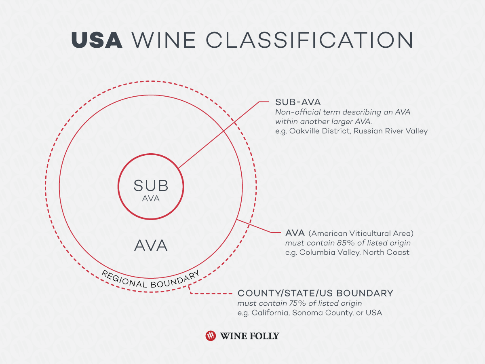
Fonte: Wine Folly
📊 Pirâmide visual AVA
🏆 Hierarquia de origem (cada vez mais restritiva)
100%
ESTATE / SINGLE VINEYARD 🏆
100% das uvas do vinhedo nominado + vinificação no local. Topo da especificidade.
85%
SUB-AVA · AVA
85% das uvas da AVA nominada. Ex: "Oakville", "Russian River Valley".
75%
COUNTY · VARIETAL
75% das uvas do condado/variedade nominada. Ex: "Napa County".
75%
STATE · COUNTRY
75% das uvas do estado (ex: "California") ou país.
📜 Termos não-regulados (cuidado!)
Termo
Status
Reserve
❌ Não regulado · marketing
Old Vine
❌ Não regulado · confiar no produtor
Vintage
✅ 95% da safra do ano
Single Vineyard
✅ 95% do vinhedo nominado
Meritage
✅ Blend Bordeaux-style (marca registrada)
🏷️ Sistema francês = AOC/AOP: Inventado em 1935. Modelo copiado pelo mundo (DOC italiano, DOP espanhol, AVA americano). Define origem + uvas + práticas + envelhecimento.
🏷️ Como ler um rótulo AOC
AOC label
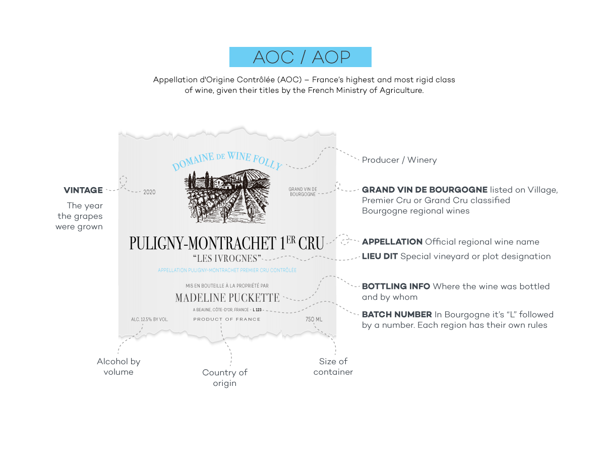
IGP label
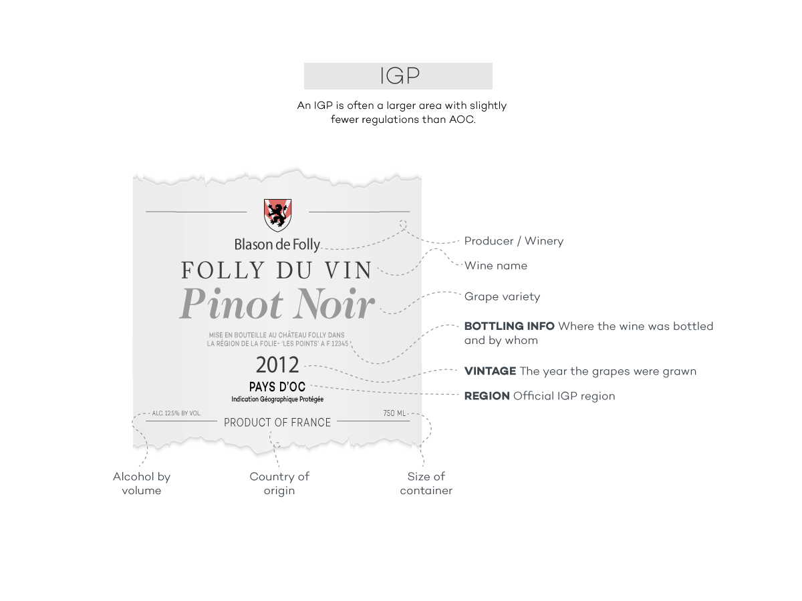
🏷️ Rótulo francês decodificado
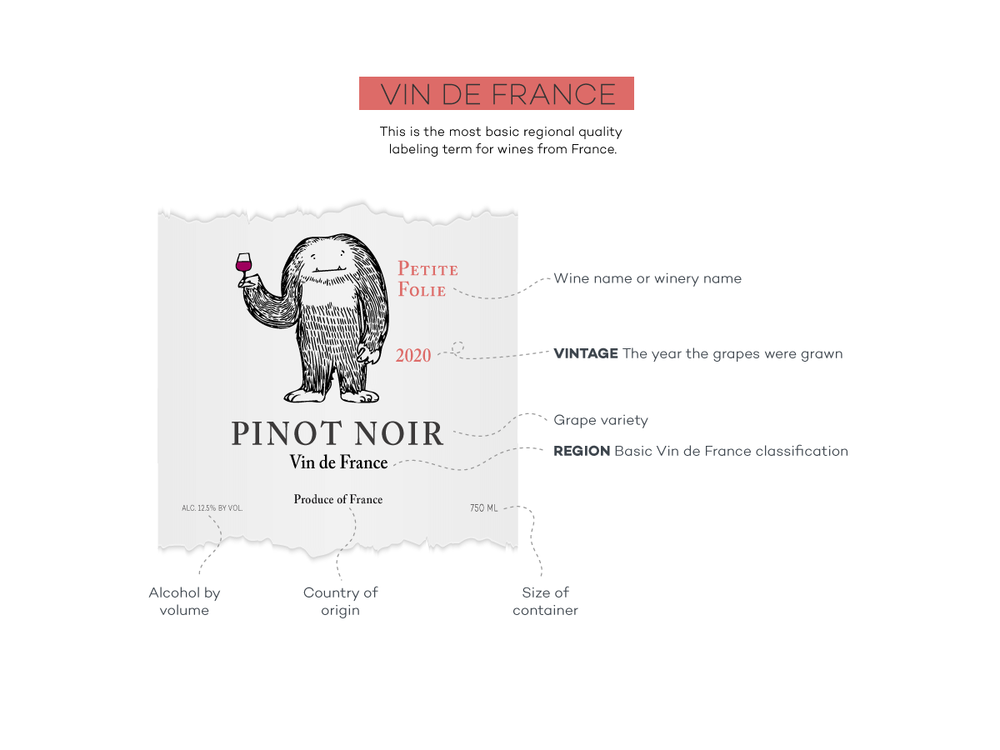
🏆 Pirâmide oficial AOP / IGP / Vin de France
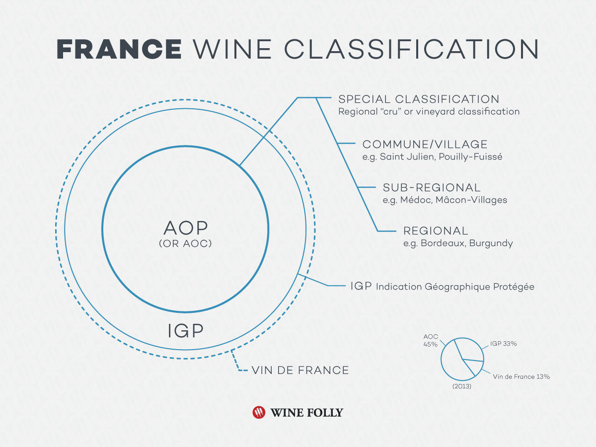
📊 Pirâmide visual AOC/AOP
🏆 Hierarquia AOC/AOP
Nível
O que é
Exemplos
AOP / AOC ⭐⭐
Topo · ~360 denominações controladas
Champagne, Bordeaux, Sancerre
IGP (Vin de Pays)
Indicação geográfica · mais flexível
IGP Pays d'Oc, IGP Côtes Catalanes
Vin de France
Base · sem restrição regional
"Table wine" moderno
🍇 Princípio fundamental: lugar > uva
Diferentemente do Novo Mundo, rótulos franceses raramente nomeiam a uva. Dizem o lugar — e do lugar você deduz a uva. Exceção: Alsace (rotula por uva). Saber o lugar = saber a uva. Sancerre = Sauvignon Blanc. Chablis = Chardonnay. Bordeaux = blend Cab/Merlot. Borgonha rouge = Pinot Noir.
⭐ Cada região tem sua hierarquia interna
Região
Sistema próprio
Borgonha
Grand Cru / 1er Cru / Village / Régional · ver página dedicada
Bordeaux
Classificação de 1855 (5 níveis Médoc) · Saint-Émilion ranqueamento próprio
Champagne
17 Grand Cru · 42 Premier Cru villages · ver página dedicada
Alsace
Alsace AOC · Alsace Grand Cru (51 vinhedos) · rotula por uva
Quarts de Chaume é o único Grand Cru · ver página dedicada
🏷️ Sistema neozelandês: Estilo Novo Mundo — rotula por uva. Sistema simples baseado em GIs. Líder em sustentabilidade certificada (96%).
🏆 Hierarquia de origem
Nível
O que é
Exemplo
New Zealand
Nacional
"New Zealand Sauvignon Blanc"
North/South Island
Ilha
"South Island"
Region
10 regiões oficiais
Marlborough, Central Otago
Sub-region ⭐
Identidade específica
Awatere Valley (em Marlborough)
Single Vineyard ⭐⭐
Vinhedo único
Comum em Pinot Noir top
🌱 Selos de sustentabilidade
Selo
O que significa
SWNZ ⭐
Sustainable Winegrowing New Zealand · 96% das vinícolas
BioGro
Orgânico certificado
Demeter
Biodinâmico
📜 Regras de rótulo
Termo
Regra
Single varietal
85%+ da uva nominada
Region
85%+ das uvas daquela região
Vintage
85%+ da safra do ano
Reserve
❌ Não regulado · marketing
Old Vine
❌ Não regulado
🏷️ A pirâmide mais famosa do mundo:4 níveis baseados em séculos de observação monástica dos terroirs. Quanto mais específica a área no rótulo, melhor o vinho. Sistema copiado por Etna, Toscana e outros.
📊 Pirâmide visual
🏆 Pirâmide dos 4 níveis
1%
GRAND CRU 🏆
33 vinhedos. Só o nome do vinhedo no rótulo. Romanée-Conti, Montrachet, Chambertin.
€200–25k+
10%
PREMIER CRU ⭐
640 vinhedos. Village + "1er Cru" + nome do vinhedo. Ex: "Gevrey-Chambertin 1er Cru Les Cazetiers".
€60–500
37%
VILLAGE
44 villages. Só o nome do village. Ex: "Gevrey-Chambertin", "Chablis", "Pommard".
€25–120
52%
RÉGIONAL
"Bourgogne Rouge/Blanc", "Bourgogne Aligoté", "Crémant de Bourgogne".
€15–40
📜 Como ler um rótulo
Rótulo diz
Significado
Nível
Chambertin
Só o nome do vinhedo
Grand Cru
Gevrey-Chambertin 1er Cru Les Cazetiers
Village + "1er Cru" + vinhedo
Premier Cru
Gevrey-Chambertin
Só o nome do village
Village
Bourgogne Rouge
"Bourgogne" sem mais nada
Régional
⭐ Climats UNESCO (2015)
As 1.247 "climats" da Côte d'Or (cada parcela com nome próprio) são Patrimônio da Humanidade UNESCO desde 2015. Sistema baseado em séculos de observação cisterciense — cada climat é considerado terroir único.
🏷️ Sistema Champagne: hierarquia de villages (17 Grand Cru, 42 Premier Cru) + classificação por doçura + tipo de produtor (RM, NM, CM…). Nada como em Borgonha (villages, não vinhedos).
🏆 Hierarquia de villages
Nível
Quantidade
Exemplos
Grand Cru ⭐⭐
17 villages (100% cotação)
Avize, Bouzy, Cramant, Mesnil-sur-Oger, Aÿ
Premier Cru ⭐
42 villages (90-99%)
Cumières, Pierry, Vertus
Other villages
~260 villages
Base do mercado
🍯 Doçura (dosagem) — escala visual
Termo
Açúcar (g/L)
Quando usar
Brut Nature / Zéro Dosage
0–3
Puro · só ostras
Extra Brut
0–6
Aperitivo seco
Brut ⭐
0–12
~95% do mercado
Extra Dry / Sec
12–17
Levemente doce
Sec
17–32
Doce médio
Demi-Sec
32–50
Sobremesas
Doux
50+
Raro hoje
🎨 Estilo (composição)
Termo
O que é
Blanc de Blancs
100% Chardonnay
Blanc de Noirs
100% Pinot Noir + Meunier
Rosé
Vinho tinto adicionado OU sangria curta · único na UE
Cuvée Prestige
Top da casa (Cristal, Dom Pérignon, Krug Grande Cuvée)
Millésime / Vintage
Só safras top · ~15% da produção
NV (Non-Vintage)
~85% · blend de safras pra manter "house style"
👤 Tipo de produtor (siglas no rótulo)
Sigla
O que significa
Estilo
RM ⭐
Récoltant-Manipulant
Cultiva e vinifica próprio · "Grower Champagne", terroir específico
NM
Négociant-Manipulant
Compra uva · Grandes Maisons (Moët, Veuve, Krug)
CM
Coopérative
Cooperativa · custo-benefício
SR
Société de Récoltant
Família/grupo
MA
Marque d'Acheteur
Marca privada · entry-level
RC
Récoltant-Coopérateur
Cooperativista vende sob nome próprio
🏷️ Sistema Loire: AOC tradicional francês + decodificação de doçura no Chenin Blanc (Sec/Demi-sec/Moelleux/Doux). 87 AOPs. Único Grand Cru: Quarts de Chaume.
🏆 Único Grand Cru do Loire
Quarts de Chaume Grand Cru ⭐⭐
Chenin Blanc doce de botrytis. Promovido a Grand Cru em 2011 — único Grand Cru do Loire. Pequena produção (~40 hectares). Vinho-ícone histórico desde a Idade Média.
🏷️ Chablis tem sistema próprio — não segue exatamente a pirâmide da Borgonha. 4 níveis · solo Kimmeridgiano define a maioria · Petit Chablis é Portlandiano. Único nível que regularmente usa carvalho: Grand Cru.
📊 Pirâmide visual
🏆 Pirâmide de Chablis (4 níveis)
~3%
CHABLIS GRAND CRU 🏆
1 GC com 7 climats: Les Clos, Vaudésir, Valmur, Grenouilles, Bougros, Preuses, Blanchot.
€50–300+
~15%
CHABLIS 1ER CRU ⭐
~40 climats. Fourchaume, Mont de Milieu, Montée de Tonnerre destaque.
€25–60
~65%
CHABLIS
Encostas Kimmeridgianas próximas à vila. Estilo mineral redondo.
€15–30
~17%
PETIT CHABLIS
Solo Portlandiano (diferente). Estilo mais simples, cítrico, beber jovem.
Calcário mais duro, menos marga · vinhos mais simples
Curiosidade: Chablis Grand Cru é o único nível em que produtores frequentemente usam carvalho francês (Raveneau, Dauvissat). Nos outros níveis, inox é o padrão. Resultado: GCs ganham complexidade tipo Côte de Beaune, mas mantêm a coluna mineral única de Chablis.
🏷️ Napa = AVA system + Estate. Mais rigoroso que o padrão americano genérico. 16 sub-AVAs reconhecidas. "Napa Valley" no rótulo requer 85% (não 75% como outros estados).
🏆 Hierarquia de origem em Napa
100%
ESTATE BOTTLED 🏆
100% das uvas em terra da vinícola + vinificação local em Napa Valley.
85%
SUB-AVA (Oakville, Rutherford, etc) ⭐
85%+ das uvas da sub-AVA nominada.
85%
NAPA VALLEY AVA
85%+ das uvas da AVA Napa Valley.
75%
NAPA COUNTY
75%+ das uvas do Condado de Napa. Mais flexível.
📜 Cheat sheet de leitura
Termo no rótulo
O que confere
Napa Valley
≥ 85% uvas da AVA
Sub-AVA (Oakville etc)
≥ 85% da sub-AVA
Estate Bottled
100% uvas próprias + vinificação local
Single Vineyard
95% do vinhedo nominado
Reserve
❌ Não regulado nos EUA · marketing
Varietal único
75% da uva
Vintage
95% da safra
🏷️ Sonoma County AVA system. Mesmas regras gerais americanas (75/85% AVA). 19 AVAs reconhecidas. Sub-AVAs adicionais (Green Valley dentro de Russian River). "Sonoma Coast" é uma das maiores AVAs em área.
🏆 Hierarquia em Sonoma
Nível
% das uvas
Exemplo
California
75%
"California Chardonnay"
Sonoma County
75%
"Sonoma County Pinot Noir"
Sonoma AVA ⭐
85%
"Russian River Valley"
Sub-AVA ⭐⭐
85%
"Green Valley of Russian River"
Single Vineyard
95%
"Bacigalupi Vineyard"
Estate
100%
Estate bottled
⭐ 19 AVAs de Sonoma County
Grupo
AVAs
Litoral frio
Russian River Valley · Sonoma Coast · Los Carneros · Green Valley of RRV · Fort Ross-Seaview · Petaluma Gap
Temperado
Sonoma Valley · Bennett Valley · Chalk Hill
Quente
Alexander Valley · Dry Creek Valley · Knights Valley · Rockpile · Sonoma Mountain · Moon Mountain · Pine Mountain-Cloverdale Peak · Fountaingrove
🏷️ Piemonte = maior número de DOCGs da Itália (19) + 41 DOCs. Sistema de "Vigna" (single vineyard) similar a 1er Cru. Barolo e Barbaresco têm regras próprias de envelhecimento únicas.
🏆 Top DOCGs do Piemonte
DOCG
Especialidade
Barolo ⭐⭐
Nebbiolo 100% · "Rei dos Vinhos"
Barbaresco ⭐⭐
Nebbiolo 100% · "Rainha"
Barbera d'Asti
Barbera
Barbera del Monferrato Superiore
Barbera
Asti / Moscato d'Asti
Moscato Bianco doce
Gavi
Cortese branco seco
Roero
Nebbiolo + Arneis branco
Gattinara · Ghemme
Nebbiolo do norte (chamado "Spanna")
Brachetto d'Acqui
Tinto doce frizzante
Dolcetto di Diano d'Alba · Dogliani · Ovada Superiore
Dolcetto
⏳ Barolo vs Barbaresco — regras de envelhecimento
Categoria
Barolo
Barbaresco
Tempo total
3 anos
2 anos
Em barrica
18 meses mínimo
9 meses mínimo
Riserva
5+ anos total
4+ anos total
📜 Termos especiais
Termo
O que significa
Vigna ⭐
Single vineyard · equivalente a 1er Cru francês
Riserva
+ envelhecimento (varia por DOCG)
Superiore
+ álcool + envelhecimento (em Barbera, Dolcetto)
MGA / MeGA
Menzioni Geografiche Aggiuntive — sistema de mapeamento de cru de Barolo (170+ MGAs catalogadas)
🏷️ Toscana = 11 DOCGs · pirâmides próprias por DOCG.Chianti Classico Gran Selezione (2014) é a inovação mais recente. Brunello tem o envelhecimento mais longo da Itália.
🏆 Chianti Classico — pirâmide própria
Nível
Envelhecimento
Notas
Annata
12 meses
Entrada · fresco
Riserva
24 meses (+ 3 em garrafa)
Mais estrutura
Gran Selezione ⭐⭐
30 meses · single estate · 90%+ Sangiovese
Topo (2014) · ~150 wines hoje
🏆 Brunello di Montalcino — pirâmide própria
Nível
Envelhecimento
Composição
Brunello Riserva ⭐⭐
6 anos (2 em barrica + 6 m em garrafa)
Só safras top
Brunello Normale ⭐
5 anos (2 em barrica + 4 m em garrafa)
100% Sangiovese
Rosso di Montalcino
1 ano · sem requisito de barrica
"Mini-Brunello"
Sant'Antimo
Variado
Pode incluir Cab, Merlot, etc.
🍷 Os 4 vinhos de Montalcino (visual Wine Folly)
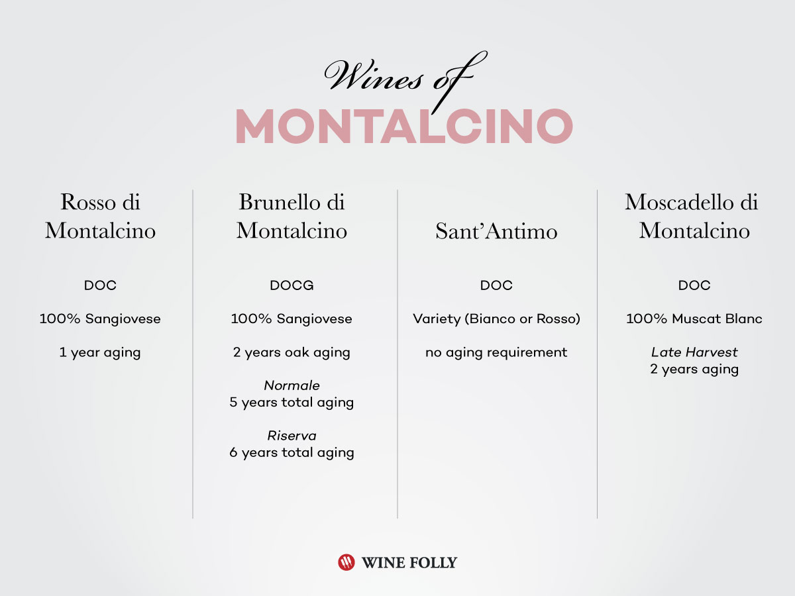
⏳ Jovem vs Envelhecido — como o Brunello evolui
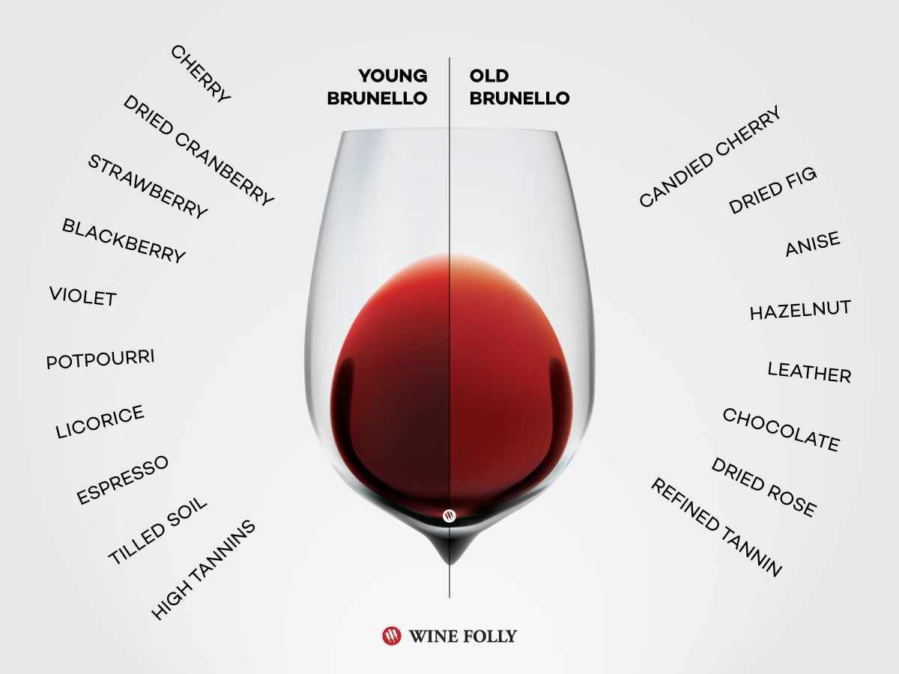
🛢️ Tradicional vs Moderno — botte vs barrique
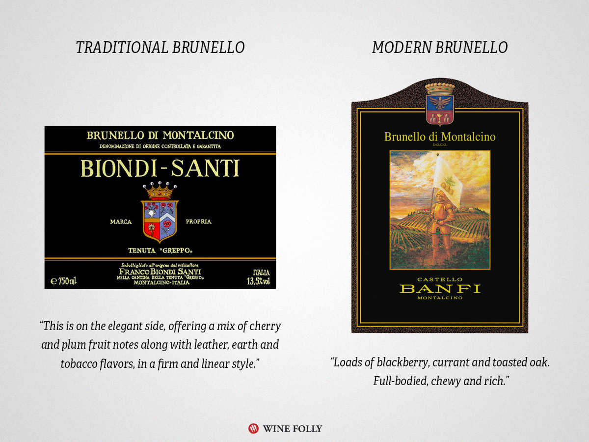
🍇 11 UGAs do Chianti Classico (2023)
UGA = Unità Geografiche Aggiuntive. Sistema tipo Borgonha implementado em 2023 — divide Chianti Classico em 11 zonas geográficas distintas que podem aparecer no rótulo. Inicialmente aplicado só a Gran Selezione, mas com expansão prevista.
San CascianoMontefiorallePanzano ⭐LamoleRadda ⭐Gaiole ⭐Castelnuovo BerardengaVagliagliCastellinaSan Donato in PoggioGreve
⭐ "Super Tuscan" — a rebelião IGT
Nos anos 1970, produtores rejeitaram regras DOC (que exigiam Sangiovese) para usar Cabernet, Merlot, Cab Franc — uvas francesas. Foram classificados como "Vino da Tavola" (categoria base) mas custavam €500+. Em 1992 foi criado IGT pra acomodar esses wines. Hoje muitos têm DOC própria (Bolgheri). Exemplos: Sassicaia, Tignanello, Ornellaia, Masseto, Solaia, Le Pergole Torte.
🏷️ Sicília = 23 DOCs + 1 DOCG (Cerasuolo di Vittoria). Etna usa o sistema de "Contrade" — single vineyards estilo Borgonha. Marsala tem categorias próprias por envelhecimento.
🏆 Único DOCG da Sicília
Cerasuolo di Vittoria DOCG ⭐⭐
Blend obrigatório: 50-70% Nero d'Avola + 30-50% Frappato. Sudoeste da ilha. Único DOCG da Sicília (desde 2005). Produtores cult: COS, Arianna Occhipinti, Planeta.
🌋 Etna DOC — categorias
Tipo
Composição
Etna Rosso ⭐⭐
80%+ Nerello Mascalese + Nerello Cappuccio
Etna Bianco Superiore ⭐
60%+ Carricante (só em Milo)
Etna Bianco
60%+ Carricante
Etna Rosato
Base Nerello
Etna Spumante
Método tradicional · 60% Nerello Mascalese
🍇 Sistema de "Contrade" do Etna
As "Contrade" são parcelas/vinhedos individuais com nome próprio, oficialmente catalogadas (~130 hoje). Similar aos "climats" da Borgonha. Exemplo: "Etna Rosso Contrada Rampante" indica vinhedo específico. Produtores como Passopisciaro, Pietradolce e Tenuta delle Terre Nere fazem single-contrada releases.
🍯 Marsala DOC — categorias por envelhecimento
Categoria
Tempo
Estilo
Fine
1 ano
Entry · culinário
Superiore
2 anos
Equilibrado
Superiore Riserva
4 anos
Mais complexo
Vergine ⭐
5 anos
Seco · sem adição de açúcar
Vergine Stravecchio ⭐⭐
10 anos
Topo · raro
🏝️ Pantelleria DOC
Ilha vulcânica. Especialidade: Passito di Pantelleria — vinho doce icônico feito com Zibibbo (Moscato d'Alessandria) passificado ao sol. Estilo único no mundo. Vinhas no chão ("alberello pantesco") = Patrimônio Imaterial UNESCO 2014.
🌲 Oregon em uma frase: O "Borgonha do Novo Mundo". Willamette Valley faz 90% do Pinot Noir do estado. Estilo cool-climate, mais próximo da França do que da Califórnia. Pequenos produtores artesanais dominam.
🍷 Informações básicas
🌍 Latitude
45°N
mesma da Borgonha
🍷 Tinta #1
Pinot Noir
~55% · Dundee Hills · Yamhill
🍷 Tinta #2
Cab Sauv · Syrah
Southern Oregon · Walla Walla
🥂 Branca #1
Pinot Gris
Branco-assinatura de Oregon
🥂 Branca #2
Chardonnay · Riesling
Estilo cool-climate
🗺️ Principais sub-AVAs (Willamette)
Dundee Hills ⭐⭐⭐
Jory vulcânico · Pinot icônico
Yamhill-Carlton ⭐⭐
Sedimentar · Pinot texturado
Eola-Amity ⭐
Vento do Pacífico · Pinot rico
Ribbon Ridge
Menor AVA · 200 ha · cult
Walla Walla
Compartilhada WA · Cab/Syrah
📊 Outras informações
AVAs
23
11 sub-AVAs em Willamette
Hectares
~17k
menor que Sonoma
Vinícolas
~1.000
~90% family-owned
Clima predominante
Maritime
cool · oceânico úmido
🌟 O que torna Oregon único
Filosofia
Cool-climate
Latitude 45°N — mesma do Borgonha. Clima oceânico úmido. Pinot, Chardonnay e Pinot Gris se sentem em casa.
Filosofia produtor
Artesanal
90% das vinícolas são family-owned, pequenas. Cultura "garagiste". Diferente da escala Napa.
Marco
1979 Olympiades
Eyrie Vineyards Pinot Noir 1975 ficou em 3º entre Borgonha em prova cega em Paris. Pôs Oregon no mapa mundial.
Maisons borgonhesas investiram em Oregon nos anos 80-90. Validou a região mundialmente.
3 grandes regiões:Willamette Valley (norte · Pinot Noir 90%) · Southern Oregon (Rogue Valley, Umpqua, Applegate · mais quente, Cab/Syrah) · Columbia Gorge + Walla Walla (compartilhadas com Washington).
1. Willamette Valley ⭐⭐⭐ — A estrela · 90% do Pinot Noir
240 km de norte a sul. Limite oeste das vinhas comerciais nos EUA — clima oceânico úmido, frio, similar a Borgonha. 11 sub-AVAs com identidades distintas por solo e microclima.
Pinot NoirPinot GrisChardonnay
🏆 11 Sub-AVAs (norte → sul)
Sub-AVA
Solo
Característica
Tualatin Hills
Laurelwood (loess)
Mais ao norte. Cool, brancos minerais.
Chehalem Mountains
3 tipos misturados
Maior altitude da região. Pinot estruturado.
Laurelwood District
Laurelwood (loess vulcânico)
Pinot mais elegante, frutas vermelhas.
Ribbon Ridge
Willakenzie
Menor AVA da Willamette (200 ha).
Dundee Hills ⭐⭐
Jory (vulcânico vermelho)
Mais famoso. Framboesa, chá preto, fundo de floresta, trufa.
Yamhill-Carlton ⭐
Willakenzie (sedimentar)
Textura mais rica, especiarias, floral.
McMinnville
Sedimentar + basalto
Vinhedos mais altos. Pinot com estrutura.
Eola-Amity Hills ⭐
Vulcânico
Van Duzer Corridor traz ventos do Pacífico. Pinot rico de ameixa.
Van Duzer Corridor
Sedimentar + vulcânico
Nova AVA (2019). Cool por causa do corredor de vento.
Mount Pisgah, Polk County
Vulcânico
Nova AVA (2022).
Lower Long Tom
Vulcânico
Nova AVA (2021), mais ao sul.
2. Southern Oregon — Mais quente · Cab, Syrah, Tempranillo
Sul do estado. Mais quente e seco. Aqui Oregon mostra que faz mais do que Pinot — Cabernet, Syrah, Tempranillo, até Viognier.
Cab SauvSyrahTempranilloViognier
⭐ AVAs principais
Rogue ValleyUmpqua ValleyApplegate ValleyRed Hill Douglas CountyElkton Oregon
3. Compartilhadas com Washington — Columbia Gorge, Walla Walla
AVAs que cruzam a fronteira com Washington. Walla Walla Valley tem produtores oregonianos de classe mundial (Cayuse, Reynvaan). Columbia Gorge faz Pinot cool-climate + Syrah quente em poucos quilômetros.
Cab Sauv (Walla Walla)SyrahPinot Noir
Como navegar: Pra Pinot Noir clássico → Dundee Hills (Domaine Drouhin, Eyrie, Domaine Serene). Pra Pinot estruturado e moderno → Yamhill-Carlton (Beaux Frères, Soter). Pra cool-climate "limite" → Eola-Amity (Cristom, Bethel Heights). Pra Cab/Syrah → Walla Walla (Cayuse, Reynvaan).
Oregon é dominado por Pinot Noir (55%) seguido de Pinot Gris (~12%) e Chardonnay (~8%). Mas Southern Oregon traz Cab e Syrah pra mesa.
Onde brilha:Dundee Hills ⭐⭐Yamhill-Carlton ⭐Eola-Amity ⭐
Cabernet Sauvignon
Southern Oregon + Walla Walla
Corpo
Taninos
Acidez
CassisEspeciariasCedro
Onde brilha:Walla Walla ⭐Rogue Valley
Syrah
Sul + Walla Walla · cool-climate
Corpo
Taninos
Acidez
MirtiloPimenta-pretaDefumadoOlive
Onde brilha:Walla Walla ⭐Rogue Valley
Tempranillo
Southern Oregon · cresce em popularidade
CerejaCouroEspeciarias
Onde brilha:Rogue ValleyApplegate Valley
🥂 Brancos
Pinot Gris
⭐⭐ #1 branco de Oregon · estilo alsaciano
Corpo
Acidez
PeraMaçã verdeMelMineralidade
Onde brilha:Willamette Valley ⭐⭐
Chardonnay
⭐ Em ascensão · estilo Borgonha
Corpo
Acidez
Carvalho
MaçãMineralidadeAvelãPera amarela
Onde brilha:Willamette Valley ⭐
Riesling
Pequena produção premium
LimaPêssegoMineralidade
Onde brilha:Willamette Valley
Pinot Blanc
Branco menos famoso, mas presente
MaçãFloral
Onde brilha:Willamette Valley
🏷️ Oregon = AVA system + regras estaduais mais rigorosas que o resto dos EUA. Oregon tem 90% mínimo da uva nominada (vs 75% federal). Pioneiro em rotulagem honesta.
🏆 Por que Oregon é mais rigoroso que outros estados
Regra
Oregon
Outros estados
Varietal único ⭐
90%+ (95% pra alguns)
75% (federal)
AVA Region
95%+ das uvas da AVA
85%
Vintage
95%+ da safra
95%
Pinot Noir, Chardonnay, Pinot Gris
100% obrigatório se nomear varietal
75%
Implicação: quando você lê "Willamette Valley Pinot Noir" em garrafa de Oregon, são ~100% Pinot Noir e ~95% Willamette Valley. Em Califórnia, poderia ser 75% de cada. Por isso vinhos de Oregon expressam mais o terroir.
⭐ Categorias especiais
Termo
Significado
Estate Bottled
100% uvas próprias + vinificação local
Single Vineyard
95% do vinhedo nominado
Reserve
❌ Não regulado federalmente · marketing
LIVE Certified
Low Input Viticulture and Enology — selo de sustentabilidade local
Salmon-Safe
Práticas que protegem habitat do salmão (rios de Oregon)
Demeter
Biodinâmico certificado
Cheat sheet: top picks, marcos históricos, pareamento clássico.
🍷 Top picks por categoria
Pinot entry
Willamette Valley AVA
US$ 25-45. Marcas: Erath, A to Z, King Estate, Argyle.
Pinot médio
Dundee Hills · Eola-Amity
US$ 45-80. Marcas: Cristom, Bethel Heights, Adelsheim.
David Lett (Eyrie Vineyards) planta os primeiros Pinot Noir
"Papa Pinot". Acreditou no potencial do Willamette quando ninguém acreditava.
1979
⭐ Olympiades du Vin (Paris)
Eyrie 1975 South Block Pinot ficou em 3º contra Borgonha em prova cega. Drouhin reprovou e em 1980 Eyrie ficou em 2º só atrás de Drouhin. Oregon virou referência mundial.
1987
Domaine Drouhin Oregon
Família Drouhin (Borgonha) compra terras em Dundee Hills. Validação histórica do potencial.
2002
Lei das 90%+ na rotulagem varietal
Oregon eleva o mínimo de 75% (federal) para 90%. Aumenta integridade.
2013
Maison Louis Jadot abre Résonance Vineyards
Segundo big borgonhês a investir. Validação final.
🍴 Pareamento
Prato
Vinho de Oregon
🦆 Pato confit · pato selvagem
Pinot Noir Dundee Hills · Yamhill-Carlton
🍄 Risotto de cogumelos / trufa
Pinot Noir envelhecido
🐟 Salmão grelhado (peixe local!)
Pinot Noir Eola-Amity · Chardonnay
🐔 Frango assado com ervas
Pinot Gris · Chardonnay
🦞 Lagosta · vieiras
Chardonnay Willamette
🥩 Bife de caça (cervo)
Walla Walla Syrah
🌶️ Asiático picante
Pinot Gris off-dry · Riesling
🧀 Queijos cremosos
Pinot Noir entry-level
🇵🇹 Portugal em uma frase: A "última fronteira do vinho na Europa Ocidental". ~250 uvas nativas (a maioria desconhecida fora do país). Custo-benefício incomparável + diversidade extrema (Port, Madeira, Vinho Verde, Douro tinto, Alentejo).
🍷 Informações básicas
🌍 Ranking mundial
#11
produção · ~250 uvas nativas
🍷 Tinta #1
Touriga Nacional
Douro · Dão · "rainha" portuguesa
🍷 Tinta #2
Tinta Roriz · Baga
= Tempranillo · Bairrada
🥂 Branca #1
Alvarinho
Vinho Verde · Monção e Melgaço
🥂 Branca #2
Encruzado · Viosinho
Dão · Douro Branco
🗺️ Principais regiões
Douro ⭐⭐⭐
Port + Douro tinto · UNESCO
Alentejo ⭐⭐
Tintos modernos · Alicante Bouschet
Vinho Verde ⭐
Alvarinho · Loureiro · noroeste
Dão · Bairrada
Touriga · Encruzado · Baga
Madeira
Fortificado lendário · 100+ anos
📊 Outras informações
Uvas nativas
~250
a maioria só Portugal
DOCs
31
(28 únicas · 3 overlap)
Vinho Regional (IGP)
14
divisão regional
Clima predominante
Maritime
+ Mediterrâneo no Sul (Alentejo)
🌟 O que torna Portugal único
Filosofia
Isolamento varietal
Cultura vinícola desenvolveu isolada. ~250 uvas nativas, a maioria não existe em outro lugar.
Port
Mundialmente famoso
Fortificado doce mais copiado do mundo. Douro Valley é Patrimônio UNESCO.
Madeira
Eterno
Único vinho que envelhece séculos. Aquecido propositalmente. Sobrevive abertura por meses.
Vinho Verde
Único do tipo
"Vinho verde" = jovem (não a cor). Leve, frizzante, baixo álcool. Ideal pra praia.
Custo-benefício
Melhor da Europa
Tintos sérios de Douro/Dão/Alentejo a partir de €10-15. Brunello a esse preço, impossível.
Marca
"Quinta"
= Wine farm. Você vai ver "Quinta do/da X" em muitos rótulos. Equivale a "Château" francês.
14 regiões oficiais. As 6 essenciais: Vinho Verde, Douro, Dão, Bairrada, Alentejo + Madeira. Cada uma com identidade radical.
"Vinho Verde" = jovem (não cor). Clima atlântico úmido. Branco leve, frizzante natural, baixo álcool (8-11%). Alvarinho (= Albariño espanhol) é a uva premium.
AlvarinhoLoureiroTrajaduraAzal
⭐ Sub-zonas
Monção e Melgaço ⭐ (Alvarinho premium)LimaCávado
2. Douro Valley ⭐⭐⭐ — Port + Tinto Douro · UNESCO
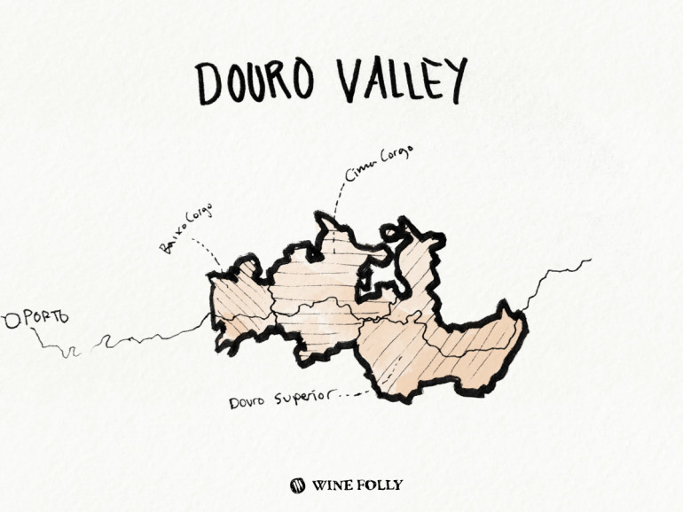
Patrimônio UNESCO. Vinhedos em terraços manuais ("socalcos") desde a Roma antiga. Port (fortificado doce) + Tinto Douro (seco encorpado) das mesmas uvas. Solo de xisto.
Touriga Nacional ⭐⭐Touriga FrancaTinta Roriz (Tempranillo)Tinta BarrocaTinto Cão
🏆 Estilos Douro
Estilo
Característica
Vintage Port ⭐⭐
🍷 Top · só safras declaradas (3-4 por década). Envelhece décadas.
LBV (Late Bottled Vintage)
🍷 Único ano, pronto pra beber (sem decantação)
Tawny Port
🍷 Envelhecido em madeira · 10/20/30/40 anos · cor âmbar
Ruby Port
🍷 Mais jovem · frutas vermelhas frescas
Tinto Douro ⭐
🍷 Vinho seco encorpado (mesmas uvas). €10-50.
Douro Branco
🥂 Branco mineral · Rabigato, Viosinho, Gouveio
White / Pink Port
🌹 Aperitivos · base de coquetéis (White Port Tonic)
3. Dão ⭐⭐ — Centro montanhoso · "Borgonha Portuguesa"
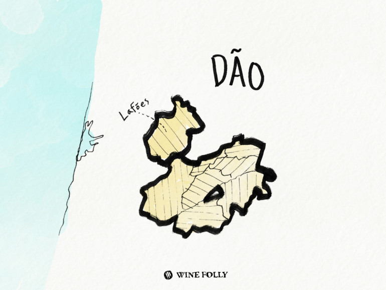
Centro montanhoso. Altitude + solos de granito e xisto (similar Douro e Priorat). Mais elegante e estruturado que Douro. Touriga Nacional brilha. "Jaen" aqui = Mencía espanhola.
Touriga Nacional ⭐⭐Jaen (Mencía)AlfrocheiroEncruzado
"Encruzado" é a única uva branca portuguesa que rivaliza com Borgonha em complexidade.
Costa atlântica. Baga é a uva — clássica densa, acidez alta, taninos firmes (estilo Nebbiolo). Renovação por Luis Pato e Niepoort trouxe estilos modernos mais leves. Também espumantes top.
Baga ⭐Maria Gomes (Fernão Pires)Bical
5. Alentejo ⭐ — Sul quente · tintos modernos
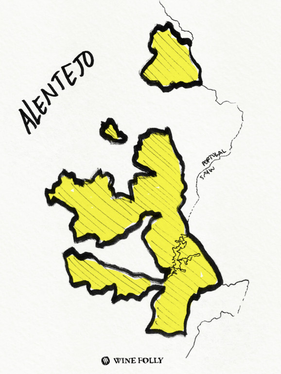
Sul. Quente, ensolarado, baixas colinas (sensação "California"). Produtores modernos fazem tintos cheios, mocha, taninos refinados. Maior crescimento em qualidade do país.
Madeira: fortificado vulcânico aquecido propositalmente ("estufagem"). Pode envelhecer séculos. Abre uma garrafa e fica boa por meses. Pico (Azores): Verdelho cultivado em paredes de pedra vulcânica · UNESCO.
🏆 4 estilos de Madeira (do seco ao doce)
Uva
Estilo
Sercial
Seco · cítrico, mineral
Verdelho
Médio-seco · mel + amêndoa
Bual / Boal
Médio-doce · café, especiarias
Malmsey (Malvasia) ⭐
Doce · caramelo, frutas secas
Tinta Negra
Mais comum · base de blends
Como navegar: Pra Port ou Tinto Douro → Douro Valley. Pra elegância → Dão. Pra custo-benefício moderno → Alentejo. Pra branco frizzante → Vinho Verde (Alvarinho de Monção). Pra fortificado eterno → Madeira (Malmsey).
Portugal tem ~250 uvas nativas. Foco nas 11 essenciais: Touriga Nacional (a rainha) + uvas do Port + Baga + Jaen + Alvarinho + Encruzado + Viosinho + Malvasia Fina.
🍷 Tintas
Touriga Nacional
⭐⭐⭐ A "rainha" portuguesa
Corpo
Taninos
Acidez
MirtiloFrutas pretasVioletaBergamotaChocolate
Onde brilha:Douro ⭐⭐Dão ⭐⭐Alentejo
Tinta Roriz (= Tempranillo)
"Aragonês" no Alentejo
Corpo
Taninos
Acidez
CerejaEspeciariasCouro
Onde brilha:DouroAlentejo (como Aragonês)
Touriga Franca
⭐ Parceira no Port + Douro
Corpo
Taninos
Acidez
CerejaFloralEspeciarias
Onde brilha:Douro (Port + Tinto)
Baga
⭐ Bairrada · "Nebbiolo português"
Corpo
Taninos
Acidez
AmoraTar (alcatrão)Acidez vibrante
Onde brilha:Bairrada ⭐
Alicante Bouschet
Alentejo · única uva tintureira
Frutas pretasCor opacaEncorpado
Onde brilha:Alentejo ⭐
Tinta Barroca · Tinto Cão
Co-stars do Port + Douro
Frutas escurasEspeciarias
Onde brilha:Douro
Jaen (= Mencía espanhola)
⭐ Dão · "Mencía portuguesa" · frutado e suave
Corpo
Taninos
Acidez
Cereja vermelhaFramboesaPimentaMineralidadeFloral
Onde brilha:Dão ⭐Bierzo (Espanha · como Mencía)
🥂 Brancas
Alvarinho
⭐⭐ Vinho Verde · = Albariño espanhol
Corpo
Acidez
LimãoPêssegoSal marinhoFloral
Onde brilha:Monção e Melgaço ⭐⭐
Encruzado
⭐ Dão · "Chardonnay português"
Corpo
Acidez
PeraCeraMineralidadeAvelã
Onde brilha:Dão ⭐
Arinto
Lisboa (Bucelas) · longeva
Corpo
Acidez
CítricosCera de abelhaMineralidade
Onde brilha:Bucelas ⭐
Loureiro
Vinho Verde · aromático
LouroFloralCítricos
Onde brilha:Vinho Verde
Viosinho
⭐ Douro Branco premium · mineral
Corpo
Acidez
Pêssego brancoPeraFlor de laranjeiraMineralidadeArdósia
Onde brilha:Douro (blend Branco) ⭐Trás-os-Montes
Malvasia Fina
⭐ Versátil · branco + espumante + Madeira
Corpo
Acidez
Maçã verdeLimãoCeraAvelã tostadaCítricos
Onde brilha:Douro ⭐Távora-Varosa (espumante)BairradaMadeira
🍯 Fortificados (Madeira)
Verdelho
Madeira médio-seco · também em Pico
MelAmêndoaCítricos
Onde brilha:MadeiraPico (UNESCO)
Malvasia (Malmsey)
⭐ Madeira doce · top estilo
CarameloFrutas secasCaféEspeciarias
Onde brilha:Madeira ⭐
🏷️ Sistema português = 3 níveis simples. DOC (topo) → Vinho Regional (IGP) → Vinho. Mas o sistema do Port e do Madeira têm regras próprias por envelhecimento.
"Denominação de Origem Controlada". 31 DOCs (28 únicas + 3 overlap). Uvas, rendimento, área controlados.
Vinho Regional (IGP)
14 áreas regionais. Mais flexível — permite uvas internacionais (Cab, Syrah, Chard). Muitos top wines aqui por escolha.
Vinho
Base · "Vinho de Mesa"
🍷 Port — categorias por envelhecimento
Categoria
Envelhecimento
Notas
Ruby
3 anos
Mais jovem · frutas vermelhas vibrantes
Reserve Ruby
5+ anos
Reserva premium do Ruby
Crusted
3+ anos não filtrado
Forma sedimento ("crust"). Raro.
LBV (Late Bottled Vintage)
4-6 anos
Único ano · pronto pra beber
Tawny
variável (3+)
Madeira oxidativa · cor âmbar
Tawny 10/20/30/40 anos ⭐
Idade média informada
Mais nozes, café, caramelo · envelhece em barrica
Vintage Port ⭐⭐
2 anos em barrica + garrafa
👑 Topo · só safras "declaradas" (~3-4 por década)
Single Quinta Vintage
Mesma regra
Vintage de quinta única, anos não declarados oficialmente
Colheita Tawny
7+ anos em barrica
Tawny de um único ano (vintage tawny)
🏝️ Madeira — categorias por idade
Categoria
Idade mínima
Finest / 3 Years
3 anos · entrada
5 Years
5 anos
10 Years
10 anos
15 Years
15 anos
Colheita / Harvest
5+ anos · única safra
Frasqueira / Vintage ⭐⭐
20+ anos · única safra · topo
⭐ Termos especiais portugueses
Termo
Significado
Quinta
Wine farm (= Château). Ex: "Quinta do Vesuvio", "Quinta do Crasto"
Vinho Tinto
Vinho tinto
Vinho Branco
Vinho branco
Reserva
Mais envelhecimento + qualidade superior (varia por DOC)
Garrafeira
"Adega" — geralmente Reserva especial, envelhecimento extra
Colheita
Safra (vintage)
Engarrafado na Origem
Engarrafado no local (= Estate bottled)
Cheat sheet: top picks, marcos históricos, pareamento.
🍷 Top picks por categoria
Vinho Verde
Alvarinho Monção
€8-20. Marcas: Soalheiro, Anselmo Mendes.
Tinto Douro
Douro DOC Tinto
€10-50. Marcas: Quinta do Vale Meão, Niepoort.
Tinto Dão
Dão DOC
€12-40. Marcas: Quinta dos Roques, Álvaro Castro.
Alentejo
Alentejo DOC
€10-40. Marcas: Mouchão, Esporão, Cortes de Cima.
Vintage Port
Vintage Port
€80-300. Marcas: Taylor's, Fonseca, Quinta do Noval.
Tawny 20
Tawny 20 anos
€60-100. Marcas: Graham's, Dow's, Taylor's.
Madeira
Malmsey 10/15 anos
€40-80. Marcas: Blandy's, Henriques & Henriques.
Cult / Icon
Barca Velha
€300+. Casa Ferreirinha · "Vega Sicilia português".
📅 Marcos históricos
1386
Tratado de Windsor (Portugal-Inglaterra)
Aliança mais antiga do mundo. Britânicos viraram clientes principais do vinho português.
1678
Nascimento do Port (fortificação acidental)
Britânicos adicionavam brandy ao vinho do Douro pra estabilizar no transporte. Descobriram que ficava delicioso.
1756
⭐ Marquês de Pombal cria a 1ª DOC do mundo
Demarcação oficial do Douro Valley pra produção de Port. Anterior a Bordeaux (1855) e ao AOC francês (1935).
1986
Portugal entra na União Europeia
Investimento + acesso a mercados. Renascimento da qualidade nas décadas seguintes.
2001
⭐ Alto Douro vira Patrimônio UNESCO
Reconhecimento da paisagem cultural dos socalcos de vinha.
2004
Pico Island (Azores) vira UNESCO
Vinhedos vulcânicos em "currais" de pedra (Verdelho).
🍴 Pareamento
Prato
Vinho português
🦪 Mariscos / sardinhas grelhadas
Vinho Verde · Alvarinho
🐟 Bacalhau (qualquer estilo)
Alvarinho · Encruzado · Douro Branco
🥩 Picanha / costela
Tinto Douro · Tinto Alentejo
🍖 Leitão da Bairrada (clássico)
Bairrada Baga + espumante Bairrada
🐗 Caça (javali, perdiz)
Touriga Nacional do Dão
🧀 Queijo Serra da Estrela
Dão tinto · Port Tawny
🧀 Queijo azul (Roquefort, Stilton)
Vintage Port ⭐ · LBV
🍫 Sobremesa de chocolate
Vintage Port · LBV
☕ Café · sobremesa de caramelo
Madeira Malmsey · Bual
🍮 Pastel de nata
Tawny 10 anos
🇩🇪 Alemanha em uma frase: A capital mundial do Riesling. 13 regiões oficiais. Latitude 50°N — limite norte do cultivo da Europa. Vinhas em encostas íngremes de xisto sobre rios. Após décadas de Riesling doce, hoje Trocken (seco) domina + Pinot Noir explodindo.
🍷 Informações básicas
🌍 Ranking mundial
#9
produção
🍷 Tinta #1
Spätburgunder
Pinot Noir · 3º maior mundial
🍷 Tinta #2
Dornfelder
Frutado · Pfalz · Rheinhessen
🥂 Branca #1
Riesling
22% do plantio · capital mundial
🥂 Branca #2
Müller-Thurgau · Silvaner
Franken · vinhos frutados
🗺️ Principais regiões
Mosel ⭐⭐⭐
Riesling clássico · xisto
Rheingau ⭐⭐
Riesling premium · VDP
Pfalz
Riesling + tintos · 2ª maior
Rheinhessen
Maior área plantada
Ahr
Capital Spätburgunder
📊 Outras informações
Regiões oficiais
13
"Anbaugebiete"
Hectares plantados
~100k
~247k acres · latitude 50°N
Riesling
~22%
do plantio · #1 do mundo
Clima predominante
Continental frio
limite norte · ladeiras + xisto
🌟 O que torna a Alemanha única
Riesling
A capital mundial
Primeiro registro em 1435. Alemanha tem o maior plantio de Riesling do mundo (~50% do global).
Topografia
Vinhas em ladeira
~40% das vinhas em encostas com 30%+ de inclinação. Calmont (Mosel) tem 68% — mais íngreme da Europa.
Solo
Xisto + ardósia
Mosel: "Schiefer" (xisto). Reserva calor durante o dia, libera à noite. Único pra cool-climate.
Pinot Noir
A revolução
"Spätburgunder" virou 3º maior produtor mundial. Ahr Valley faz Pinot que rivaliza Borgonha.
Trocken
Era do seco
2/3 dos vinhos alemães hoje são Trocken (secos). Era doce foi 1970-80s — hoje minoritária.
VDP
"1er Cru" alemão
Associação de ~200 produtores top. Classifica por vinhedo (Grosse Lage = topo) — estilo Borgonha.
1. Mosel ⭐⭐⭐ — Capital mundial do Riesling clássico
Rio Mosel serpenteia 250km. Vinhas em encostas íngremes de xisto azul e vermelho. 60%+ Riesling. Estilo único: corpo leve, álcool baixo (7,5-11,5%), acidez vibrante, mineralidade "molhada".
Riesling ⭐⭐⭐ElblingPinot Blanc
🏆 6 Sub-regiões
Sub-região
Especialidade
Bernkastel ⭐⭐
Coração do Mosel. Maior área. Doctor, Sonnenuhr · vinhedos lendários.
Saar ⭐⭐
Cool extremo. Acidez "elétrica". Egon Müller Scharzhof.
Margem direita do Reno. 80%+ Riesling. Solo loess + xisto. Estilo mais encorpado que Mosel — mais álcool, mais estrutura. Berço histórico do Spätlese (descoberto em Schloss Johannisberg em 1775).
2ª maior região. Continuação norte da Alsace. Mais quente. Riesling mais opulento, tropical. Cresce Pinot Noir, Pinot Gris (Grauburgunder), Pinot Blanc, Dornfelder.
RieslingSpätburgunderGrauburgunderDornfelder
⭐ Produtores
Müller-Catoir ⭐A. ChristmannReichsrat von BuhlDr. Bürklin-Wolf
4. Ahr ⭐⭐ — "Borgonha da Alemanha" · capital do Pinot Noir
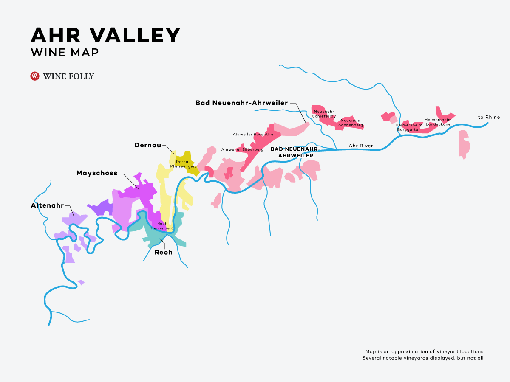
Pequenina região no vale do Ahr. ~85% tintos (única região alemã com tinto majoritário!). Spätburgunder (Pinot Noir) elegante, estruturado. Solo de xisto + grauwacke. Vinhedos em encostas extremamente íngremes.
A maior região alemã. Histórico de Liebfraumilch e vinhos de baixa qualidade. Nova geração trouxe revolução — Keller, Wittmann, Wagner-Stempel hoje são cult. Riesling premium + Silvaner.
RieslingSilvanerMüller-Thurgau
⭐ Produtores cult
Klaus Peter Keller ⭐⭐Wittmann ⭐Wagner-StempelBattenfeld-Spanier
6. Outras regiões importantes
Baden ⭐
Sul, mais quente. Pinot Noir + Pinot Gris premium. Capital alemã da Borgonha.
Württemberg ⭐
Capital alemã dos tintos. Trollinger, Lemberger (Blaufränkisch), Schwarzriesling.
Silvaner em garrafas "Bocksbeutel" (bojudas). Sabor terroso único.
Mittelrhein
Vale do Reno romântico, castelos. Riesling cool-climate.
Sachsen · Saale-Unstrut
Leste alemão. Vinhas mais ao norte da Europa.
Como navegar: Pra Riesling clássico leve → Mosel. Pra Riesling premium encorpado → Rheingau. Pra Pinot Noir top → Ahr ⭐⭐⭐ (ou Baden, Pfalz). Pra brancos sérios → Rheinhessen (Keller). Pra tintos alemães → Württemberg. Pra Silvaner → Franken.
Riesling rei (~22%) + Spätburgunder (Pinot Noir, ~12%) dominam. Plus brancos secundários (Müller-Thurgau, Silvaner, Pinot Blanc, Pinot Gris) e tintos nicho (Dornfelder, Lemberger).
🏷️ Sistema alemão = dos mais complexos do mundo. 3 layers que se sobrepõem: Qualitätswein (QbA) / Prädikatswein + doçura + VDP (estilo Borgonha) + Trocken/Halbtrocken/Lieblich/Süss. Confuso mas lógico.
🏷️ Como ler um rótulo alemão
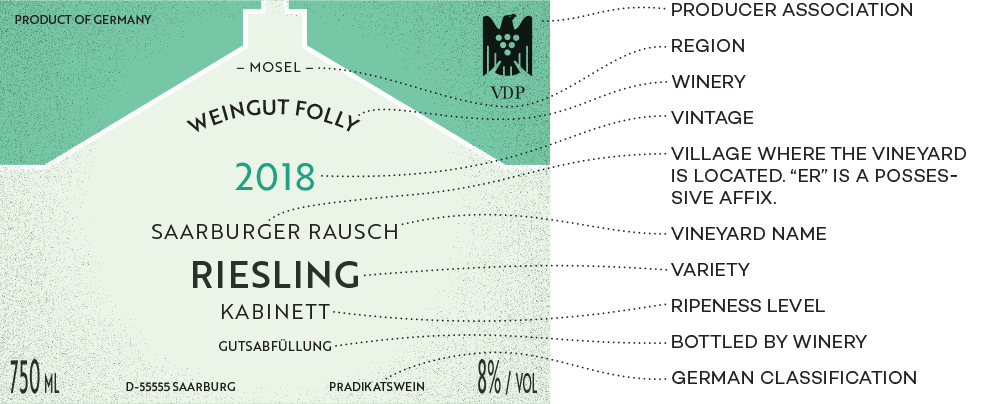
Fonte: Wine Folly
🏆 Pirâmide de classificação oficial
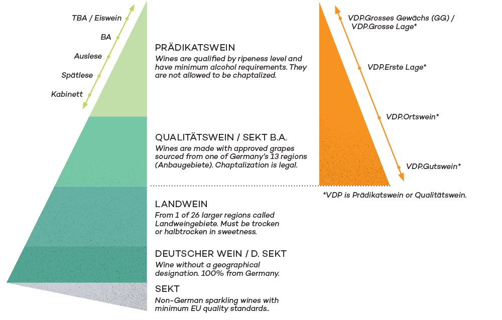
📜 Os 3 níveis principais
Nível
O que significa
Deutscher Wein
Base · sem região
Landwein
Regional · 26 áreas (estilo IGP)
Qualitätswein (QbA) ⭐
Selo: vinho de qualidade. 13 regiões. Pode chaptalizar (adicionar açúcar).
Prädikatswein ⭐⭐
Topo legal. Não chaptaliza. 6 níveis por maturidade da uva (Brix).
🍯 Prädikat — 6 níveis por maturidade da uva
Nível
Brix mínimo (varia região)
Estilo
Kabinett
~16-19°
Leve · seco (Trocken) ou off-dry · 8-10% ABV
Spätlese
~18-21°
"Colheita tardia" · seco a doce
Auslese
~21-23°
Cachos selecionados · pode ter botritis. 14%+ ABV se seco
Beerenauslese (BA)
~25-30°
Bagos com botrytis · doce
Eiswein
~28°+
Uvas congeladas na vinha · raro · doce
Trockenbeerenauslese (TBA) ⭐⭐
~33°+
Topo · bagos passificados de botrytis · doce nobre
🍷 Doçura (sweetness) — termos no rótulo
Termo
Açúcar residual
Trocken
até 9 g/L · seco
Halbtrocken / Feinherb
9-18 g/L · off-dry
Lieblich
18-45 g/L · médio-doce
Süss
45+ g/L · doce
⭐ VDP — sistema paralelo estilo Borgonha
VDP (Verband Deutscher Prädikatsweingüter) é uma associação de ~200 produtores top que classifica por qualidade do vinhedo (estilo Borgonha), não por maturidade da uva. Você vê esses selos no gargalo da garrafa.
VDP Nível
Equivalente francês
VDP.Grosse Lage ⭐⭐⭐
🏆 Grand Cru — vinhedo único top
VDP.Erste Lage ⭐⭐
⭐ Premier Cru
VDP.Ortswein ⭐
Village
VDP.Gutswein
Regional
💡 "Grosses Gewächs" (GG): termo VDP para o vinho seco mais sério de um Grosse Lage (Grand Cru). Procure por "GG" no rótulo — é o auge dos Trocken alemães.
Cheat sheet: top picks, vintages de Mosel, marcos históricos, pareamento.
🍷 Top picks por categoria
Riesling Mosel
Kabinett / Spätlese
€20-50. Marcas: J.J. Prüm, Dr. Loosen, Selbach-Oster.
Riesling Cult
Egon Müller Scharzhof
€100-25k+. Saar · TBA mais cobiçado do mundo.
Riesling GG
Rheingau · Pfalz
€40-150. Robert Weil, Reichsrat von Buhl.
Riesling Cult Dry
Keller G-Max
€400+. Rheinhessen · "Romanée-Conti alemão".
Spätburgunder
Ahr · Baden
€40-150. Meyer-Näkel, Jean Stodden, Bernhard Huber.
Silvaner
Franken Bocksbeutel
€20-60. Marcas: Horst Sauer, Castell.
Sweet
Auslese / BA / TBA
€60-1000+ (375ml). Sobremesa lendária.
Sekt
Riesling Sekt brut
€20-50. Espumante alemão de qualidade.
📅 Vintages Mosel (últimos 15 anos)
Ano
Nota
Notas
2015
⭐⭐⭐ 10
Excepcional · todos preços
2014
9
Cooler · alta acidez · guarda longa
2011
⭐⭐ 9+
Estrutura · profundidade
2010
8
Maturação difícil mas produtores top brilharam
2009
9
Quente · ricos
2007
⭐⭐ 10
Lendário · beber se achar
📅 Marcos históricos
1435
Primeiro registro de Riesling
Em Rüsselsheim. Documento mais antigo conhecido da uva.
1775
⭐ Descoberta acidental do Spätlese
Schloss Johannisberg · mensageiro autorizando colheita atrasou. Uvas atingiram botrytis. Vinho ficou sublime.
1971
Nova lei do vinho (Deutsches Weingesetz)
Criou sistema Prädikat moderno. Foco em maturidade da uva. Hoje vista como problemática.
2002
⭐ VDP cria sistema "Grosse Lage"
Mudou de Prädikat (maturidade) para terroir (estilo Borgonha). Revolução para Trocken (secos).
2021
Nova lei do vinho (mais terroir)
Aproxima sistema oficial do VDP. Caminho longo mas correto.
🍴 Pareamento
Prato
Vinho alemão
🥢 Asiática picante (Thai, indiano)
Riesling Spätlese (off-dry) — match clássico mundial
🍣 Sushi · sashimi
Riesling Kabinett trocken
🐟 Truta · peixe de rio
Riesling Mosel trocken
🥗 Wienerschnitzel · salada
Grüner / Riesling Trocken
🐷 Porco assado · pernil
Spätburgunder Pfalz · Riesling Spätlese
🦆 Pato
Spätburgunder Ahr
🌶️ Curry indiano
Riesling Auslese
🧀 Queijo azul (Roquefort)
BA / TBA · Eiswein
🍰 Sobremesa de frutas / strudel
Spätlese · Auslese
🇿🇦 África do Sul em uma frase: Encontro entre Old e New World. Solos de granito de 600 milhões de anos (entre os mais antigos do planeta). Capital mundial do Chenin Blanc + lar do Pinotage (cross único do mundo: Pinot Noir × Cinsault).
🍷 Informações básicas
🌍 Ranking mundial
#9
produção
🍷 Tinta #1
Cabernet Sauvignon
Stellenbosch · Bordeaux blends
🍷 Tinta #2
Pinotage
Uva 100% ZA · Pinot × Cinsault
🥂 Branca #1
Chenin Blanc
18% · #1 do mundo · "Steen"
🥂 Branca #2
Sauvignon Blanc
Constantia · Elgin · cool-climate
🗺️ Principais regiões
Stellenbosch ⭐⭐⭐
"Napa sul-africano" · Cab
Swartland ⭐⭐
Cult · GSM · old vines
Paarl
Versátil · Franschhoek
Hemel-en-Aarde
Pinot Noir cool-climate
Constantia
Histórica · doces séc. XVIII
📊 Outras informações
Hectares plantados
~93k
~230k acres · Western Cape
Chenin Blanc
~18%
#1 mundial · "Steen"
Vinícolas
~570
207 Estate wines
Clima predominante
Mediterrâneo
solos de granito 600M anos
🌟 O que torna a África do Sul única
Solos
600 milhões anos
Granito do Cabo entre os solos mais antigos do mundo. Vinhas lutam — concentração + mineralidade.
Pinotage
Uva 100% sul-africana
Cruzamento Pinot Noir × Cinsault criado em 1925 por Abraham Perold. Único no mundo.
Constantia
Doce histórico
Vinho doce de Constantia (Chenin Blanc) era famoso na Europa em 1700s. Napoleão bebia em Santa Helena.
Cap Classique
Espumante método tradicional
Associação 1992. Estilo Champagne mas com adição de Chenin Blanc — único.
Sustentabilidade
IPW + WIETA
Integrated Production of Wine + Wine and Agricultural Ethical Trade Association — líderes mundiais.
Apartheid post-1994
Renascimento
Pós-democracia (1994), exportações explodiram. Qualidade subiu de forma dramática.
Quase tudo no Western Cape. 3 zonas principais: Coastal Region (mais famosa — Stellenbosch, Paarl, Swartland), Cape South Coast (cool-climate — Elgin, Hemel-en-Aarde), Breede River Valley (volume + value).
A região mais prestigiada. Cabernet Sauvignon + Bordeaux blends + Pinotage de qualidade. Solos de granito + xisto. Próximo à Cidade do Cabo. 7 sub-regiões ("wards").
2. Swartland ⭐⭐ — Cult dos "naturalistas" · Old vines
Norte de Stellenbosch. Movimento Swartland Revolution dos anos 2000 — vinificação natural, old vines, GSM blends. Eben Sadie, Mullineux são cult mundialmente. Granito + xisto.
Syrah ⭐⭐GrenacheMourvèdreChenin Blanc old vines
⭐ Produtores cult
Sadie Family ⭐⭐⭐Mullineux ⭐⭐A.A. BadenhorstLammershoek
3. Paarl ⭐ — Versátil · GSM + brancos
Próxima a Stellenbosch. Mais quente. Versátil — tintos encorpados, GSM blends, Pinotage, brancos.
Cab SauvSyrahPinotageChenin Blanc
Franschhoek ⭐ (sub-zona · Sémillon + Cap Classique)Wellington
Costa sul. Influência oceânica do Atlântico Sul. Cool-climate. Pinot Noir, Chardonnay, Sauv Blanc e Cap Classique de classe mundial.
Pinot NoirChardonnaySauv BlancCap Classique
⭐ Sub-regiões
Hemel-en-Aarde ⭐⭐ (Pinot/Chard)Elgin ⭐ (Sparkling)Walker Bay ⭐Cape Agulhas
5. Constantia — Histórico · doces famosos do séc. XVIII
Subúrbio sul de Cidade do Cabo. Berço do vinho sul-africano. Famoso pelos doces de Chenin Blanc no séc. XVIII (Napoleão pediu em Santa Helena). Hoje brancos secos premium.
Sauv BlancSémillonVin de Constance (doce histórico)
Como navegar: Pra Cabernet/Bordeaux blend → Stellenbosch (Kanonkop, Rust en Vrede). Pra Syrah/GSM old vine → Swartland (Sadie, Mullineux). Pra Pinot Noir → Hemel-en-Aarde (Hamilton Russell). Pra Chenin Blanc → qualquer região (best old vines em Swartland). Pra Cap Classique → Elgin, Franschhoek.
Chenin Blanc domina (18%) — mais que toda França do Loire. Plus Cabernet, Syrah, Pinotage (único) + Sauv Blanc + Chardonnay.
🥂 Brancos
Chenin Blanc ("Steen")
⭐⭐⭐ #1 do mundo · old vines + dry
Corpo
Acidez
LimaMarmeloMaçã verdeMaracujáAipo
Onde brilha:Swartland (old vines) ⭐⭐StellenboschPaarl
Sauvignon Blanc
⭐ Estilo entre Loire e NZ
Corpo
Acidez
Pêssego brancoGooseberryMelãoGranito
Onde brilha:Constantia ⭐ElginWalker Bay
Chardonnay
Microclimas cool-climate
Corpo
Acidez
Carvalho
AbacaxiMaçã amarelaBiscoitoAmêndoa tostada
Onde brilha:Elgin ⭐Hemel-en-AardeBanghoek (Stellenbosch)
Xarope de cerejaMentolAmora silvestrePó de argilaTabaco doce
Onde brilha:Swartland ⭐⭐⭐Franschhoek
Grenache + Mourvèdre (GSM)
⭐ Old vines de Swartland
MirtiloAmoraOlive negroTabaco doce
Onde brilha:Swartland ⭐⭐
Bordeaux Blend (Cab/Merlot)
Estilo Stellenbosch sério
CassisCacau em póPimenta verdeCharuto
Onde brilha:Stellenbosch ⭐⭐Constantia
Pinot Noir
Hemel-en-Aarde · cool-climate
Cereja vermelhaEspeciariasFloral
Onde brilha:Hemel-en-Aarde ⭐⭐
🏷️ Sistema sul-africano = WO (Wine of Origin). Lei de 1973. Pirâmide geográfica com 5 níveis. Plus certificações de sustentabilidade (IPW, WIETA) e Estate Wines (vinhedo único registrado).
🏆 Wine of Origin (WO) — pirâmide geográfica
Nível
O que significa
Geographical Unit
O maior · ex: "Western Cape" (cobre quase tudo)
Region
Ex: Coastal Region, Breede River Valley, Cape South Coast
District ⭐
Identidade clara: Stellenbosch, Paarl, Swartland, Walker Bay
100% do vinhedo registrado como Estate · vinificação local
Single Vineyard
≤6 hectares · vinhedo registrado
Old Vine Project / "Heritage"
Vinhas com 35+ anos · selo no rótulo
Reserve / Reserva
❌ Não regulado · marketing
IPW
Integrated Production of Wine · sustentabilidade certificada
WIETA
Wine and Agricultural Ethical Trade Association · ético-social
Vintage
85%+ da safra
Single varietal
85%+ da uva nominada
✨ Cap Classique (MCC)
Méthode Cap Classique: espumante método tradicional (igual Champagne, 9+ meses em lees) sul-africano. Permite Chenin Blanc no blend (único no mundo). Associação criada em 1992 com ~80 produtores.
Cheat sheet: top picks, marcos históricos, pareamento.
🍷 Top picks por categoria
Cabernet
Stellenbosch
€25-80. Marcas: Kanonkop, Rust en Vrede, Meerlust.
Pinotage
Kanonkop "Black Label"
€60-150. O melhor Pinotage do mundo.
Chenin Blanc
Old Vine Swartland
€25-70. Marcas: Sadie "Skerpioen", Mullineux.
Syrah cult
Mullineux Schist
€80-200. Swartland · 100 pts Parker.
Pinot Noir
Hamilton Russell
€60-120. Hemel-en-Aarde.
Bordeaux Blend
Meerlust "Rubicon"
€35-80. Stellenbosch icônico.
Sauv Blanc
Klein Constantia
€20-40. Constantia premium.
Doce histórico
Vin de Constance
€80-180. Klein Constantia · o doce de Napoleão recriado.
📅 Marcos históricos
1659
Primeiro vinho sul-africano
Jan van Riebeeck (Companhia Holandesa) registra a 1ª safra em Cidade do Cabo.
1685
Constantia é fundada
Simon van der Stel cria a propriedade. Será origem do doce Vin de Constance lendário.
1925
⭐ Pinotage criado por Abraham Perold
Cruzamento Pinot Noir × Cinsault (Hermitage). Primeira garrafa só em 1959. Hoje uva-assinatura.
1973
Sistema Wine of Origin (WO) criado
Inspirado no AOC francês. Lei moderna do vinho.
1992
Cap Classique Producers Association
Padroniza espumante método tradicional sul-africano.
1994
⭐ Fim do apartheid
Reabertura ao mercado internacional. Renascimento da qualidade nas décadas seguintes.
🇦🇷 Argentina em uma frase: A terra do Malbec. 5º maior produtor mundial. Vinhedos nos Andes em altitudes extremas (até 3.300m em Salta — os mais altos do mundo). Pinot Noir cool-climate da Patagônia é a nova fronteira.
🍷 Informações básicas
🌍 Ranking mundial
#5
produção
🍷 Tinta #1
Malbec
75% do Malbec mundial · Mendoza
🍷 Tinta #2
Bonarda · Cab Franc
Cab Franc cult em Uco
🥂 Branca #1
Torrontés
100% argentina · Cafayate (Salta)
🥂 Branca #2
Chardonnay
Uco Valley altitude · Patagônia
🗺️ Principais regiões
Mendoza ⭐⭐⭐
70% nacional · Uco · Luján · Maipú
Salta ⭐⭐
3.111m · Cafayate · Colomé
Patagônia ⭐⭐
Río Negro · Neuquén · Pinot cool
San Juan
2ª maior · Syrah · Pedernal
📊 Outras informações
Hectares plantados
~211k
~521k acres
Mendoza
~70%
do plantio nacional
Altitude máxima
3.300m
Salta · maior do mundo
Clima predominante
Continental
+ altitude · amplitude alta
🌟 O que torna a Argentina única
Malbec
A pátria adotiva
Veio de Cahors (França) no séc. XIX. Hoje 75% do Malbec mundial vem da Argentina.
Altitude
600 a 3.300m
Amplitude térmica diurna brutal. Concentra cor, aromas e taninos. Cultivo nos Andes.
Águas dos Andes
Irrigação por degelo
Sistema de "acequias" (canais) traz água pura do degelo das montanhas. Sem irrigação, deserto.
Sem filoxera
Vinhas pé-franco
Solos arenosos protegem da praga. Algumas vinhas Malbec têm 100+ anos sem porta-enxerto.
🍷 Clássico · mais terroso, frutas vermelhas, cedro, tabaco · Barrancas mais frutado
Eastern Mendoza
600-700m
Mais quente · vinhos mais frutados, custo-benefício
⭐ Produtores top
Catena Zapata ⭐⭐⭐Achaval-Ferrer ⭐⭐Cheval des Andes (LVMH)Bodega Aleanna ("Gran Enemigo")Susana BalboZuccardi (Concreto)
2. Salta ⭐⭐ — Norte · vinhedos mais altos do mundo
Vinhedos a 3.111m em Colomé (Bodega Donald Hess) — os mais altos do mundo. Cafayate é a sub-região cult. Sol intenso + frio noturno = aromas concentrados. Capital do Torrontés.
Torrontés ⭐⭐MalbecCab SauvTannat
⭐ Sub-regiões
Cafayate ⭐⭐Calchaquí Valley ⭐Molinos
3. Patagônia ⭐⭐ — Sul · cool-climate · Pinot Noir
Latitudes 38-42°S — paralelos à Borgonha (norte hemisfério). Cool-climate. Ventos patagônicos. Río Negro e Neuquén são as duas províncias vitícolas. Estilo Pinot único: frutas vermelhas suaves + ervas + grafite.
Pinot Noir ⭐⭐MalbecChardonnayMerlot
⭐ Sub-regiões + produtores
Província
Característica
Río Negro ⭐⭐
Vinhedos antigos do início séc. XX. Bodega Chacra (Piero Incisa della Rocchetta!), Bodega Noemia.
Neuquén ⭐
San Patricio del Chañar. Produção moderna. Bodega Familia Schroeder, NQN.
4. San Juan + La Rioja — Volume · custo-benefício
San Juan é a 2ª maior região (depois de Mendoza). Mais quente. Syrah é uva-assinatura. La Rioja (não confundir com Espanha!) é onde Torrontés tem mais plantio. Pedernal Valley (San Juan) tem qualidade emergente.
SyrahMalbecTorrontésBonarda
Como navegar: Pra Malbec icônico → Uco Valley (Catena, Achaval-Ferrer). Pra Malbec lush → Luján de Cuyo. Pra Pinot cool-climate → Patagônia (Chacra ⭐⭐). Pra Torrontés → Cafayate (Salta). Pra altitude extrema → Colomé (3.111m).
Malbec + Bonarda + Cabernet dominam tintos. Torrontés + Chardonnay nos brancos. Cab Franc e Pinot Noir em ascensão.
🍷 Tintos
Malbec
⭐⭐⭐ A uva-rainha · 75% do Malbec mundial
Corpo
Taninos
Acidez
Ameixa pretaAmoraCacauVioletaPimenta-da-jamaica
Onde brilha:Uco Valley ⭐⭐⭐Luján de Cuyo ⭐⭐Maipú
Bonarda (= Charbono)
⭐ 2º tinto mais plantado · custo-benefício
Corpo
Taninos
Acidez
AmeixaCerejaAlcaçuzCacauGrafite
Onde brilha:Eastern MendozaSan Juan
Cabernet Sauvignon
⭐⭐ Estilo argentino · especiarias exóticas
Corpo
Taninos
CassisCereja preta5-spice chinêsFumaça de tabaco
Onde brilha:Luján de Cuyo ⭐Uco Valley
Cabernet Franc
⭐⭐ Em rápida ascensão · estilo bold
Corpo
Taninos
AmoraChocolatePimenta verdeCarvãoAmeixa
Onde brilha:Uco Valley ⭐⭐Luján de Cuyo
Pinot Noir
⭐⭐ Patagônia · novo no mapa mundial
Corpo
Taninos
Acidez
CranberryCerejaSândaloGrafiteChá Earl Grey
Onde brilha:Patagônia (Río Negro) ⭐⭐Neuquén
Tempranillo
Estilo argentino · custo-benefício
FumaçaCereja pretaCanelaCedro
Onde brilha:MendozaSan Juan
🥂 Brancos
Torrontés
⭐⭐ Branco-assinatura · 100% argentina
Corpo
Acidez
Aromática
LichiaLimão-limaPerfumePêssegoCasca de cítrico
Onde brilha:Cafayate (Salta) ⭐⭐La Rioja
Chardonnay
Estilo opulento · oaked
Corpo
Acidez
Carvalho
Maçã assadaAbacaxiCremeNoz-moscadaEstragão
Onde brilha:Uco Valley (altitude)Patagônia
🌹 Especialidade — Sparkling Malbec
Sparkling Malbec Rosé
⭐ Único no mundo · seco
Pêssego brancoFramboesaGizTangerina
Onde brilha:MendozaCatena Almi
🏷️ Sistema argentino = simples e estilo Novo Mundo.IGs (Indicaciones Geográficas) + DOCs (raras). Rotulagem por uva (estilo americano). Sistema "Reserva" definido por envelhecimento.
🏆 Hierarquia geográfica
Nível
O que significa
País
"Argentina"
IG (Indicación Geográfica)
Província ou região. Ex: Mendoza, Patagônia, San Juan.
DOC ⭐
Apenas 2: Luján de Cuyo e San Rafael (raras)
Sub-regiões (GI)
Uco Valley, Cafayate, Maipú, Agrelo, Tupungato, Vista Flores
Indica 2 uvas em ordem de proporção (ex: "Malbec-Bonarda")
Vintage
85%+ da safra do ano
Estate Bottled
"Engarrafado en origen"
Bodega
= Winery
Finca
= Estate / Vineyard
🏔️ Sistema emergente "por altitude"
Produtores top (Catena, Zuccardi) trazem o conceito de "vinhedo por altitude" ao rótulo. Indica o metro acima do nível do mar (ex: "1.500m"). Filosofia similar a Borgonha climats — quanto mais alto, mais elegante.
Cheat sheet: top picks, marcos históricos, pareamento.
🍷 Top picks por categoria
Malbec entry
Mendoza DOC
€10-20. Marcas: Trapiche, Catena, Norton.
Malbec Premium
Catena Zapata Malbec Argentino
€80-150. Catena ⭐⭐.
Malbec Cult
Achaval-Ferrer Finca Altamira
€100-200. Single vineyard top.
Cheval des Andes
"Premier Cru Malbec"
€150-300. LVMH + Terrazas. Joint venture com Cheval Blanc.
Cab Franc
Aleanna "Gran Enemigo"
€60-150. Único Cab Franc por sub-zona de Uco.
Pinot Noir
Bodega Chacra (Patagônia)
€80-300. Piero Incisa della Rocchetta (família do Sassicaia).
Torrontés
Cafayate Salta
€12-25. Marcas: Colomé, Susana Balbo Crios.
Altitude record
Colomé Altura Máxima
€80+. Vinhedo a 3.111m — Malbec mais alto do mundo.
📅 Marcos históricos
1561
Primeiras vinhas plantadas
Padres jesuítas espanhóis em Mendoza. Para uso litúrgico.
1853
Domingo Faustino Sarmiento traz Malbec da França
Presidente argentino cria a Quinta Normal de Agricultura. Importa o Malbec de Cahors.
1885
⭐ Trem Trasandino conecta Mendoza a Buenos Aires
Permite escala industrial. Mendoza explode em produção.
1990s
⭐ Revolução qualitativa
Catena Zapata + investimento internacional. Nicolas Catena reduz rendimentos, vai para altitude. Malbec vira premium.
2011
17 de abril vira o "Malbec World Day"
Comemora a fundação da Quinta Normal (1853). Celebração mundial anual.
🍴 Pareamento
Prato
Vinho argentino
🥩 Asado (churrasco argentino)
Malbec Uco Valley · Cab Sauv Luján
🍖 Empanadas mendoçinas
Bonarda · Malbec jovem
🌶️ Comida tex-mex / mexicana
Torrontés Cafayate
🐟 Truta · salmão
Patagônia Chardonnay · Pinot Noir
🦌 Caça (cordeiro patagônico)
Cabernet Franc Uco
🍕 Pizza · pastas
Malbec entry-level
🧀 Provoleta (queijo grelhado)
Bonarda · Malbec
🍫 Sobremesa de chocolate / dulce de leche
Late Harvest Malbec · Torrontés tardío
🌡️ Terroir = clima + solo + topografia + mão humana. Mas se você precisa escolher UM fator pra entender por que dois Cabernets do mesmo produtor têm sabor diferente, escolha o clima. Ele determina tudo: quais uvas amadurecem, quanto açúcar acumulam, quanta acidez retêm, e qual o estilo do vinho.
📊 Cheatsheet: clima → estilo
Atributo
Clima frio (cool)
Clima quente (warm)
Corpo
Leve a médio
Encorpado
Álcool
10-12%
13,5-15%+
Acidez
Alta (vibrante)
Baixa (macia)
Taninos
Firmes, "polidos"
Macios, "redondos"
Frutas
Vermelhas, frescas (cereja, framboesa, groselha)
Pretas, maduras (ameixa preta, amora, cassis)
Aromas extras
Floral, herbal, mineral, fumaça
Geleia, especiarias doces, cacau, baunilha
Exemplos brancos
Chablis · Mosel · Marlborough
Napa Chardonnay · Hunter Valley Sémillon
Exemplos tintos
Borgonha · Beaujolais · Hemel-en-Aarde
Barossa · Napa Cab · Châteauneuf-du-Pape
Latitude vitícola
30°-50°
N e S · "wine belts"
Temperatura média ideal
10-20°C
durante crescimento
Amplitude térmica
10-20°C
dia/noite · "diurnal swing"
A cada 100m altitude
-1°C
+10-12% UV / 1.000ft
🎯 Os 4 grandes drivers do estilo do vinho
1. Temperatura
Mais calor → mais açúcar (= álcool)
Calor acelera o amadurecimento → mais açúcar acumulado → mais álcool potencial. Mas também acelera a perda de ácidos (= vinhos "moles"). Climas quentes: tintos opulentos, alcoólicos. Climas frios: brancos crocantes, tintos elegantes.
2. Luminosidade (UV)
Mais sol → mais cor e tanino
A pele responde ao UV produzindo antocianinas (cor) e fenóis (taninos) como proteção. Por isso vinhos de altitude (= mais UV) têm cor mais profunda e estrutura mais firme.
3. Amplitude térmica (diurnal swing)
Dia quente + noite fria = perfeição
Dia quente amadurece os açúcares. Noite fria preserva a acidez e os aromáticos. Combinação ouro: Mendoza, Napa, Coonawarra, Mosel. É essa amplitude que gera frescor + concentração ao mesmo tempo.
4. Estresse hídrico
Vinha "sofrendo" = vinho concentrado
Vinhas com pouca água focam energia na fruta (não no folhar). Cachos menores, peles mais grossas, taninos mais concentrados. Regiões secas (Mendoza, Mediterrâneo) usam irrigação controlada.
🌍 As "wine belts" do mundo
A faixa onde uvas vitis vinifera amadurecem bem fica entre 30°-50° de latitude em cada hemisfério. Próximo ao equador (<30°), faz quente demais — uvas amadurecem rápido demais, perdem acidez. Próximo aos polos (>50°), faz frio demais — uvas não amadurecem.
Mas a altitude muda isso! Salta (Argentina, ~25°S) só consegue produzir vinhos premium porque os vinhedos ficam a 1.700-3.300m — a altitude "esfria" o clima. Etna (Sicília, ~37°N) faz Pinot-like de altitude por causa do vulcão.
Os 3 grandes macroclimas vitícolas: Continental (frio + variação extrema · Borgonha) · Maritime (oceano modera tudo · Bordeaux, NZ) · Mediterraneo (verão seco e longo · Sul da Europa, Califórnia). Cada um molda um estilo de vinho.
📊 Quadro comparativo
Critério
Continental
Maritime
Mediterrâneo
Verão
Quente, curto
Fresco, longo
Quente, longo, seco
Inverno
Muito frio
Ameno
Ameno, chuvoso
Amplitude térmica anual
🔴 Alta
🟢 Baixa
🟡 Moderada
Variação safra a safra
🔴 Alta
🟡 Moderada
🟢 Baixa
Risco geada
🔴 Alto
🟡 Médio
🟢 Baixo
Risco chuva colheita
🟡 Médio
🔴 Alto
🟢 Baixo
Estilo de vinho
Estruturado, age-worthy
Elegante, fresco
Opulento, frutado
Álcool típico
11-13,5%
12-13,5%
13,5-15%+
Uvas estrela
Pinot, Chard, Riesling, Nebbiolo
Sauv Blanc, Cab Sauv, Merlot, Albariño
Grenache, Syrah, Mourvèdre, Tempranillo
🏔️ Continental
Definição
Interior dos continentes, longe do mar. Verões quentes + invernos rigorosos. Grande amplitude térmica anual e diária.
Riscos
Geada de primavera (Borgonha) · granizo (Mendoza) · alta variação de safra. Daí o foco em vintage.
Impacto no vinho
Estruturados, com excelente acidez, age-worthy. Tintos firmes + brancos minerais. Variação safra a safra é grande — anos quentes são opulentos, anos frios são austeros.
Próximo a oceano/grande lago. Água modera as temperaturas — verões frescos, invernos amenos. Estação longa.
Riscos
Chuva demais durante a colheita (Bordeaux) · umidade = mofo + míldio. Drenagem do solo é crítica.
Impacto no vinho
Estilo equilibrado, fresco. Brancos aromáticos vibrantes. Tintos elegantes, com taninos refinados. Acidez moderada-alta. Menos variação de safra que continental.
Encorpados, opulentos, ricos em fruta madura. Álcool 13,5%+. Vinhos consistentes safra após safra. Tintos GSM brilham aqui.
Onde encontrar
Rhône Sul (Châteauneuf) ⭐⭐ProvenceToscanaSicíliaSul da EspanhaNapa ValleyBarossa ValleyStellenbosch
🏔️ Altitude vira a regra de cabeça. A cada 100m de altitude, temperatura cai ~1°C. A cada 300m (1.000ft), UV sobe 10-12%. Resultado: vinhedos em latitudes tropicais (Salta, Etna) ou subtropicais (Mendoza) conseguem qualidade que normalmente só apareceria em latitudes muito maiores.
⚖️ Vinho de altitude vs. vinho de planície (mesma uva)
Atributo
Malbec planície (Maipú, 700m)
Malbec altitude (Gualtallary, 1.500m)
Cor
Vermelho profundo
🔴 Roxo opaco
Frutas
Ameixa madura, geleia
🍒 Frutas vermelhas + flores (violeta)
Taninos
Macios, redondos
🔥 Firmes, "dusty", longos
Acidez
Média
⚡ Alta, vibrante
Álcool
13,5-14,5%
13-14%
Mineralidade
Baixa
💎 Grafite, calcário, ardósia
Envelhecimento
3-7 anos
🍷 10-20+ anos
Preço típico
€10-25
€40-200+
🏆 Vinhedos extremos pelo mundo
Região
Altitude
Estilo · Uva
Colomé "Altura Máxima" (Salta, AR) ⭐⭐⭐
3.111m
Malbec mais alto do mundo · cor opaca, taninos extremos
Ladakh (Índia)
3.500m
Recordista mundial · experimental
Uco Valley (Mendoza) ⭐⭐⭐
900-1.500m
Malbec premium · Cab Franc · Chardonnay
Cafayate (Salta) ⭐⭐
1.700-2.000m
Torrontés icônico
Etna (Sicília) ⭐⭐
400-1.200m
Nerello Mascalese · "Borgonha vulcânica"
Ribera del Duero (Espanha)
700-1.000m
Tempranillo concentrado · noites geladas
Priorat
100-700m
Garnacha + Cariñena · llicorella
Mendoza alto · Gualtallary
1.200-1.500m
"Grand Cru" Mendoza · Catena Adrianna
Sonoma Mountain
365-700m
Cab acima da neblina · estilo "mountain"
Howell Mountain (Napa)
425-670m
Cab Sauv "mountain" · taninos firmes
Mosel (Alemanha)
100-300m
Riesling em ladeiras 65°+ inclinação
📐 A regra dos 100m
A cada 100m subidos, a temperatura média cai cerca de 1°C (chamado de lapse rate ambiental). Isso significa que 300m de altitude equivalem aproximadamente a 300km de latitude em termos de temperatura — Mendoza a 1.000m tem clima similar a uma região 600km mais ao sul.
🌞 O efeito UV
A cada 1.000 pés (~300m) subidos, a radiação UV aumenta 10-12%. A uva responde produzindo:
Antocianinas — pigmentos vermelhos/roxos. Cor mais profunda, opaca.
Polifenóis — base dos taninos. Estrutura mais firme.
Aromáticos — terpenos e tióis se concentram. Aromas mais explosivos.
Resveratrol — antioxidante natural. Capacidade de envelhecimento maior.
Por isso Malbec de altitude tem cor opaca, taninos firmes e aromas violeta intensos.
🌡️ Amplitude térmica diária
A altitude amplifica o "diurnal swing". Em Uco Valley (Mendoza), de 900-1.500m, a variação dia/noite pode chegar a 15°C — dias podem bater 32°C, noites caem para 12-15°C. Vantagem dupla:
Dia quente: fotossíntese intensa → açúcares acumulam → ripeness
Noite fria: respiração da planta cai → preserva ácidos e aromáticos
Daí vinhos de altitude conseguirem ser concentrados + frescos ao mesmo tempo — algo difícil em latitudes baixas sem altitude.
🎯 Os 3.000 pés (~900m): o "threshold de qualidade"
A vinícola argentina Alta Vista definiu o conceito: 3.000 pés (~900m) é o ponto onde vinhos "bons" viram vinhos "potencialmente grandes". Acima dessa altitude: ventos noturnos frios + solos pobres + UV alto = rendimentos baixos e concentração alta. Quase todo Malbec premium argentino vem acima dessa marca.
🎭 Pergunta clássica: "Por que Chardonnay de Chablis é completamente diferente de Chardonnay de Napa?" Resposta: mesma uva, climas diferentes. Aqui está como 4 uvas-âncora se transformam dependendo do terroir.
🍇 Chardonnay — a camaleoa
Região
Clima
Estilo
Chablis (FR)
Continental frio
🥶 Magro, mineral, sem oak · maçã verde, ostra, sílex · 12% alc
Acidez vibrante, álcool baixo, taninos polidos. Idade de guarda alta.
⚖️ Moderate
Equilíbrio + complexidade
Frutas vermelhas e pretas. Estrutura ideal. Vinhos "clássicos" (Borgonha, Bordeaux).
🔥 Warm
Geleia · cacau · oak · especiarias doces
Frutas pretas maduras, álcool 14%+, taninos macios. Pronto pra beber.
📌 Como usar isso na prática
Antes de comprar: olhe a região. Mesma uva, climas diferentes = vinhos diferentes. Não pague Napa Cab esperando Bordeaux.
Pareamento: peixe fino → Chardonnay frio (Chablis). Bife com molho rico → Chardonnay quente (Napa).
Cellar planning: guarda longa? Foque em vinhos cool/moderate. Pronto pra beber? Warm-climate dá vinhos accessíveis cedo.
Verão vs. inverno: cool-climate brilha refrigerado no verão. Warm-climate aquece o inverno.
Mountain wine vs. valley wine: a mesma região tem altitudes diferentes — Howell Mountain Cab ≠ Rutherford Cab apesar de ambos serem Napa.
🪨 O solo é "metade do terroir". Junto com clima, define o perfil do vinho. Não é só nutrição — é drenagem, retenção térmica, mineralidade, profundidade de raiz, estresse hídrico. O ditado borgonhês: "a vinha precisa sofrer" — solos pobres + bem drenados = uvas concentradas.
Pedras escuras (basalto, ardósia, xisto) absorvem sol durante o dia e devolvem calor à noite. Crucial em regiões frias. Mosel: vinhas em ardósia em latitude 50°N.
3. Mineralidade
A "voz do solo" no copo
Tecnicamente discutida — mas degustadores descrevem: pedra molhada (xisto), giz (calcário), grafite (granito), fumaça (vulcânico). É um marker de origem inconfundível.
Mito vs. realidade: A "mineralidade" não é o solo passando direto pra uva (a vinha não absorve sabor de pedra!). É um conjunto de marcadores: pH ácido do solo, drenagem, microclima criado pela rocha. Mas o nome "mineral" pegou — e funciona como descritor.
Os 8 solos clássicos que dominam o mundo do vinho. Cada um tem assinatura sensorial própria — o tipo de solo é o segundo fator de identificação cega (depois da uva).
📊 Quadro comparativo
Solo
Drenagem
Calor
Acidez do vinho
Corpo
Marcador sensorial
🪨 Calcário
🟢 Boa
🟢 Frio
🔴 Alta
🟡 Médio
Giz · ostra · floral
🟤 Argila
🔴 Ruim · retém água
🟢 Frio
🟡 Média
🔴 Cheio
Terra · fruta densa
⬜ Granito
🟢 Boa
🔴 Quente · retém calor
🔴 Alta
🟡 Médio
Floral · perfume · grafite
⚫ Ardósia/Xisto
🟢 Boa
🔴 Quente · acumula sol
🔴 Alta
🟡 Médio
Pedra molhada · petrol
🌋 Vulcânico
🟢 Boa
🟡 Médio
🔴 Alta
🔴 Cheio
Defumado · enxofre · sal
🟫 Cascalho
🟢 Excelente
🔴 Quente
🟡 Média
🔴 Cheio
Maturação extra · estrutura
🟨 Arenito
🟢 Boa
🟡 Médio
🟡 Média
🟢 Leve
Floral · taninos suaves
🟧 Terra Rossa
🟢 Boa
🟢 Frio (calcário base)
🔴 Alta
🔴 Cheio
Cor profunda · acidez
🪨 Calcário (Limestone)
Característica
Rocha sedimentar formada por conchas e organismos marinhos comprimidos. pH alcalino (rico em cálcio). Cool — retarda maturação. Drena bem, mas retém umidade nas raízes profundas.
Borgonha (Côte d'Or) ⭐⭐⭐Chablis (Kimmeridgian) ⭐⭐⭐Champagne (giz puro) ⭐⭐⭐Sancerre / Pouilly-Fumé (sílex + calcário)Ribera del DueroCoonawarra (Terra Rossa sobre calcário)
🟤 Argila (Clay)
Característica
Retém muita água — vinha não passa sede em verão seco. Solo frio (água segura calor). Pouco drenado em si, mas frequentemente misturado a cascalho/calcário pra balancear.
Impacto no vinho
Corpo cheio · taninos firmes · estrutura. Vinhos opulentos, "carnudos". Reserva natural de umidade beneficia em anos secos. Merlot adora argila (Pomerol Pétrus = quase 100% argila azul).
Onde brilha
Pomerol (argila azul) ⭐⭐⭐Saint-Émilion (argila + calcário)Rioja Alta (com calcário)Tuscany (galestro · marga)Hunter Valley (argila + arenito)
⬜ Granito
Característica
Rocha ígnea com quartzo + feldspato + mica. Retém calor e libera à noite. pH ácido — naturalmente reduz acidez excessiva da uva. Bem drenado.
Impacto no vinho
Vinhos perfumados, florais, com grafite e ar de "frescor". Taninos mais polidos. Gamay e Syrah têm afinidade especial — daí Beaujolais (Crus) e Côte-Rôtie.
Formado por basalto + cinzas + lava. Drenagem altíssima (poroso). Rico em minerais (potássio, ferro, magnésio). Cores escuras → absorve calor. Vinhas têm que ir fundo em busca de água.
Impacto no vinho
Defumado · salgado · "sulfuroso" · mineralidade incomum. Acidez vibrante. Profundidade. Cult dos sommeliers contemporâneos. Etna chamado "Borgonha vulcânica".
Pedras pequenas/médias misturadas a areia/argila. Drenagem perfeita + retenção térmica (pedras aquecem). Médoc é o exemplo clássico — depositado pelo rio Garonne durante eras geológicas. Esses cascalhos = Cab Sauv perfeito.
Médoc (Bordeaux) ⭐⭐⭐Graves (Bordeaux)Margaret River (cascalho marinho)
🟧 Terra Rossa (calcário oxidado)
Solo argiloso vermelho sobre base de calcário. Cor vem da oxidação do ferro. Combina o melhor de dois mundos: corpo da argila + acidez do calcário. Coonawarra é mundialmente famoso por essa combinação.
Coonawarra (Cab Sauv) ⭐⭐⭐Puglia (Itália)SicíliaMargaret River (em parte)
🗺️ Cada região icônica tem seu solo-assinatura. Saber o solo já te dá pistas do vinho antes de abrir. Aqui as 15 regiões-âncora do mundo organizadas por solo.
🇫🇷 França
Região
Solo
Por quê importa
Borgonha · Côte d'Or
🪨 Calcário Jurassic + marga
Pinot + Chard puros expressando "climats" — 33 GCs separados por nuances de calcário
Chablis
🪨 Kimmeridgian (calcário + fósseis marinhos)
Conchas de ostra dentro do solo = Chardonnay com "sabor do mar"
Champagne
🪨 Giz puro (Crayeuse)
Solo cool · drena · raízes vão fundo · base ideal para espumante
Médoc / Graves
🟫 Cascalho profundo
Drena tudo · acumula sol · Cab Sauv consegue amadurecer no clima fresco de Bordeaux
Pomerol
🟤 Argila azul
Pétrus quase 100% argila azul · Merlot fica majestoso, opulento, com 25-50 anos de guarda
Beaujolais Crus
⬜ Granito (Morgon "manganês")
Gamay perde "candy" e ganha estrutura · 10 Crus separados pela qualidade do granito
Entre os solos mais antigos do mundo · Cab Sauv + Pinotage com profundidade
Santorini (GR)
🌋 Basalto + pumice
Sem chuva · vinhas em formato "kouloura" (cesto) protegem da Etesias · Assyrtiko salgado
🍇 Cada uva tem afinidade com solos específicos. Plantar a uva certa no solo certo (matching) é metade do trabalho do viticultor. Aqui as combinações canônicas — onde cada uva "achou seu lar".
📊 Quadro de afinidades
Uva
Solo ideal
Por quê
Exemplo cult
🍷 Pinot Noir
🪨 Calcário + marga
Solo frio + drenado · permite expressão delicada · uva extremamente sensível ao solo
Côte de Nuits (DRC, Leroy)
🥂 Chardonnay
🪨 Calcário
Acidez preservada · mineralidade · variedade neutra revela o solo
Chablis · Le Montrachet
🍷 Cabernet Sauvignon
🟫 Cascalho profundo
Drena tudo · acumula sol · uva tardia precisa do calor extra
Médoc (Lafite, Latour, Margaux)
🍷 Merlot
🟤 Argila
Retenção hídrica · solo frio · Merlot maduro mas com acidez
Pomerol (Pétrus)
🍷 Syrah
⬜ Granito + ⚫ xisto
Retenção térmica · pH ácido · uva precisa de calor para amadurecer + acidez para elegância
Côte-Rôtie · Hermitage
🍷 Nebbiolo
🟤 Marga calcária (Tortonian/Helvetian)
Solo cool + alcalino · taninos firmes ganham polimento ao envelhecer
Barolo · Barbaresco
🍷 Sangiovese
🟤 Galestro + argila
Estresse hídrico moderado · concentra a uva sensível
Chianti Classico · Brunello
🥂 Riesling
⚫ Ardósia / xisto
Retém calor em climas frios · mineralidade "petrol" característica
Mosel · Alsace
🥂 Sauvignon Blanc
🪨 Calcário + sílex
Acidez vibrante · sílex traz nota defumada
Sancerre · Pouilly-Fumé
🥂 Chenin Blanc
⚫ Xisto · tufa (Loire)
Versatilidade · solo molda do seco ao doce
Vouvray · Savennières
🥂 Albariño
⬜ Granito + areia
Drenagem total · proximidade do mar = salgado
Rías Baixas
🥂 Assyrtiko
🌋 Vulcânico
Solos vulcânicos preservam acidez extrema · salgado + mineral
Santorini
🍷 Tempranillo
🟤 Argila calcária
Corpo + acidez · longevidade Reserva/Gran Reserva
Rioja Alta · Ribera del Duero
🍷 Garnacha
⚫ Xisto pobre (llicorella)
Solo estéril força raízes profundas · concentração extrema
Priorat
🍷 Gamay
⬜ Granito
Pioneira de solos pobres · ganha estrutura nos granitos dos Crus
Morgon · Moulin-à-Vent
🍷 Pinotage
⬜ Granito antigo (600M anos)
Solos vetustos da África do Sul · profundidade aromática
Wachau tem ladeiras de loess sobre rocha granítica
Wachau
🥂 Glera (Prosecco)
🟤 Argila + marga
Solos sedimentares de Conegliano/Valdobbiadene
Prosecco DOCG
🎯 A regra dos casamentos
Uvas sensíveis
Pinot Noir · Riesling · Nebbiolo
"Translucentes" — refletem o solo com altíssima fidelidade. Solos diferentes = vinhos radicalmente diferentes da mesma uva.
Uvas potentes
Cab Sauv · Syrah · Tempranillo
"Opacas" — sobrepõem o solo com sua personalidade forte. Mesma uva mais consistente entre solos diferentes.
Como usar isso na prática: Quando ver "Borgonha Pinot" no rótulo, pense "calcário" → acidez + mineral. Quando ver "Pomerol Merlot", pense "argila" → opulência. Quando ver "Mosel Riesling", pense "ardósia" → petrol + acidez. O solo é o primeiro filtro depois da uva.
📅 "Vintage matters" — só que depende. Safra é a 3ª perna do tripé (com região e produtor) que define o vinho. Mas seu peso varia: em Bordeaux/Borgonha/Champagne/Vintage Port a safra pode triplicar (ou dividir por 3) o preço. Em Napa, Barossa, Mendoza entry-level, importa muito menos.
📊 Quando a safra realmente importa
Categoria
Peso da safra
Por quê
🔴 Bordeaux Cru Classé
⭐⭐⭐ Crítico
Clima oceânico variável · diferença 2005 x 2007 é abismal
Dia quente + noite fria = acidez + açúcar juntos. Sol final = polifenóis. Chuva = desastre.
4. Vindima
Set-out
Timing perfeito · escolha do dia · seleção de cachos. Risco máximo: 1 chuva pode estragar tudo.
🏆 Top 5 safras do século XXI por região
Região
1º
2º
3º
4º
5º
Bordeaux Médoc
2016
2010
2022
2005
2009
Bordeaux Right Bank
2009
2015
2022
2018
2005
Borgonha Tinto
2005
2015
2019
2010
2009
Borgonha Branco
2014
2010
2017
2020
2007
Champagne (vintage)
2008
2012
2022
2018
2002 (∗)
Rhône Norte
2015
2010
2019
2009
2016
Toscana (Brunello)
2010
2016
2015
2006
2021
Piemonte (Barolo)
2010
2016
2006
2013
2019
Como usar isso na prática: Antes de comprar (ou pedir num restaurante) uma garrafa que custa €100+, cheque a safra primeiro. Um Pomerol 2013 pode estar à venda por preço de 2010 — mas só um é uma compra inteligente.
Linhas destacadas: 2005 · 2009 · 2010 · 2015 · 2016 · 2019 · 2022 — as 7 safras-marco do século XXI. Cada uma com história própria, detalhada na próxima página.
🏆 As 9 safras que entraram pra história — do mítico 1945 pós-guerra até o "perfeito" 2022 atual. Cada uma com a história climática, regiões que brilharam, e por que vale a pena saber.
Bordeaux (todas) · Right Bank 2009 lendário (Pétrus, Cheval Blanc) · Médoc 2010 lendário (Latour, Lafite)
Hoje
Premiers 2009/10 já dobraram preço · €1.500-15k por garrafa
Última dupla "duas safras seguidas excepcionais" antes da era das mudanças climáticas radicalizar tudo. "E qual escolher: 2009 ou 2010?" 2009 pra beber agora-em 15 anos. 2010 pra esperar 20+ anos.
⭐ 2015 — Borgonha + Rhône lendários
Clima
Verão quente sem extremos · maturação uniforme · ph baixo + acidez preservada
Brilharam
Borgonha tinto ⭐⭐⭐ · Rhône Norte ⭐⭐⭐ · Bordeaux Right Bank · Brunello
Hoje
Beber em janela 2025-2050 · Côte-Rôtie 15 = €200-1.500
A safra "sem defeitos" do Velho Mundo · vinhos opulentos mas com acidez · janela enorme de prazer.
⭐ 2016 — Bordeaux perfeição + Barolo histórico
Clima
Primavera úmida → verão extremamente seco e quente → noites frescas · uvas pequenas e perfeitas
Brilharam
Bordeaux Médoc ⭐⭐⭐ (a melhor desde 2010) · Barolo/Barbaresco ⭐⭐⭐ · Brunello
Hoje
Premiers 2016 = €1.500-12k · Barolo top 2016 = €400-2k
"A perfeição": balanço impossível de acidez + fruta + estrutura + finesse · Bordeaux 2016 vai durar 50+ anos.
⭐ 2022 — A nova lenda
Clima
Seca extrema mas sem stress por calor à noite · vinhas adaptadas a 2018-2020 entregaram tudo
En primeur subiu 25-40% para top Châteaux · janela de compra está agora (2024-25)
A safra que provou que mudanças climáticas podem produzir vintages históricos · "vinho de geração".
📖 Guia prático: como ler safras, quando importam, como comprar inteligente. Tudo que você precisa saber para virar a tabela do vintage chart em decisão de compra.
🎯 As 4 perguntas pré-compra
1.
A região varia muito por safra?
Bordeaux/Borgonha/Champagne/Vintage Port = SIM, muito. Napa/Mendoza/Barossa = menos. Se sim, vá pro passo 2.
2.
A safra está beber agora?
Bordeaux 2005-2010 = beber. 2016 = ainda esperar 5+ anos. Borgonha tinto 2015 = beber. 2019 = esperar.
3.
Tem inconsistências entre fontes?
Compare Wine Spectator + Jancis + Decanter. Se 3 fontes concordam = confiável. Se discordam = produtor importa mais que safra.
4.
Existe arbitragem de preço?
Safra "fraca" (88-90) de bom produtor pode estar pelo preço da boa (92-94). Lafite 2013 vs 2014 = mesma loja, preços diferentes.
📅 Janelas de prazer (drinking windows)
Tipo de vinho
Beber jovem
Pico
Declínio
Bordeaux Cru Classé Médoc
0-10 anos · austero
10-30 anos
30-50+ anos
Bordeaux Right Bank
0-8 anos · acessível
8-25 anos
25-40 anos
Borgonha GC tinto
0-5 anos · fechado
10-25 anos
25-40 anos
Borgonha GC branco
2-5 anos
5-20 anos
20-30 anos (premox risk!)
Vintage Champagne
5-10 anos
10-30 anos
30-50+ anos
Rhône Norte top
0-8 anos
10-30 anos
30-40 anos
Barolo/Barbaresco
0-10 anos · austero
10-30 anos
30-50 anos
Brunello di Montalcino
5-10 anos
10-25 anos
25-40 anos
Vintage Port
0-15 anos · fechado
20-50 anos
50-100+ anos
Riesling Mosel GG
2-5 anos
10-30 anos (petrol)
30-50 anos
Napa Cult Cab
0-8 anos
8-20 anos
20-30 anos
Brancos jovens (Sauv Blanc/Albariño)
0-3 anos ⭐
1-3 anos
3-5 anos
🔬 Os 5 mitos mais comuns
❌
"Vinho mais velho é sempre melhor"
Falso. 95% dos vinhos do mundo são feitos pra beber jovens (em até 5 anos). Apenas top tier de regiões específicas guarda 20+ anos.
❌
"Vintage chart serve pra todos os vinhos da região"
Falso. Vintage chart é para top tier. Vinhos de produção massa (entry-level) são estabilizados industrialmente.
❌
"Anos quentes = sempre melhores"
Falso. 2003 foi "ano quente" extremo e produziu vinhos cansados rápido. Calor controlado + noite fria é o segredo.
❌
"Bordeaux 2013 não vale nada"
Falso. Bordeaux 2013 (e 2007) são SAFRAS FRACAS PARA GUARDAR. Mas hoje, 11 anos depois, estão prontíssimas pra beber — e a preço de banana.
❌
"Champagne não tem safra"
Falso. NV (non-vintage) não tem, mas Vintage Champagne é declarado em 4-6 anos por década. Vintage é onde a casa coloca o melhor do que produziu.
🛒 Cheat sheet de compra inteligente
Para beber agora
Safras fracas de top produtores
Bordeaux 2013/2014 · Borgonha 2011/2014 · Barolo 2014. Produtor top de safra "média" = surpresa em conta.
Para guardar (cellar)
Safras lendárias quando saem
2015 Borgonha · 2016 Bordeaux/Barolo · 2019/2020 Bordeaux · 2022 Bordeaux. Compre en primeur ou no lançamento.
Para investir
Premiers + DRC + Pétrus em safras 95+
Liv-ex como referência. Janela de 5-10 anos pós-safra. Risco: mercado asiático volátil.
Para presentear
Safra do ano de nascimento
Cheque a safra antes! Se for 1997 ou 2002 = boa surpresa. Se 1991 ou 2007 = compre outra coisa do ano (Sauternes, Port, Madeira sempre funcionam).
🇨🇱 Chile em uma frase: Faixa de 4.300km entre Andes e Pacífico. Único país sem filoxera junto com Austrália. Carmenère é uva-assinatura — descoberta nos anos 1990 como "Merlot perdido" de Bordeaux.
🍷 Informações básicas
🌍 Ranking mundial
#7
produção
🍷 Tinta #1
Cabernet Sauvignon
~32% · Maipo · Colchagua
🍷 Tinta #2
Carmenère
Uva-assinatura · Colchagua
🥂 Branca #1
Sauvignon Blanc
Casablanca · Leyda · cool-climate
🥂 Branca #2
Chardonnay
Casablanca · Limarí
🗺️ Principais regiões
Maipo Valley ⭐⭐⭐
Berço do Cab Sauv · Concha y Toro
Colchagua ⭐⭐⭐
Carmenère icônica · Apalta
Casablanca ⭐⭐
Cool-climate · Sauv Blanc · Pinot
Aconcagua
Errazuriz · Don Maximiano
Leyda · San Antonio
Pinot + Syrah cool-climate
📊 Outras informações
Hectares plantados
~136k
~336k acres
Comprimento N-S
4.300km
Atacama → Patagônia
Filoxera
Zero
único país pé-franco (com AU)
Clima predominante
Mediterrâneo
+ Andes (altitude) + Pacífico (frio)
🌟 O que torna o Chile único
Carmenère
Uva renascida
Extinta em Bordeaux pela filoxera (1860s). Descoberta em 1994 nas vinhas chilenas, confundida com Merlot por 150 anos.
Barreiras naturais
Quarentena natural
Andes (leste), Pacífico (oeste), Atacama (norte), Antártico (sul). Filoxera nunca chegou.
Pacífico
Corrente de Humboldt
Água gelada do Antártico esfria a costa. Permite Pinot Noir e Sauv Blanc cool-climate em latitudes baixas.
Andes
Água + altitude
Degelo abastece vinhedos secos. Vinhedos em altitudes 400-1.200m amplificam acidez.
Sustentabilidade
Líder em orgânico
~75% das vinícolas chilenas certificadas em sustentabilidade ou orgânico. Liderança global.
Custo-benefício
Best value mundial
Cab Sauv $15 chileno bate Bordeaux $50. Reconhecido por críticos.
4 grandes áreas:Aconcagua (norte · Aconcagua, Casablanca, Leyda) · Valle Central (Maipo, Cachapoal, Colchagua, Curicó, Maule · core histórico) · Sur (Itata, Bío-Bío, Malleco · vinhas antigas cool) · Norte (Elqui, Limarí · cool por altitude).
Próximo a Santiago. Solos de cascalho aluvial. Alto Maipo (sub-zona alta nos Andes) faz Cabs estruturados (Almaviva, Don Melchor). Berço histórico do vinho chileno (séc. XIX).
Cab Sauv ⭐⭐⭐CarmenèreMerlot
⭐ Produtores top
Concha y Toro (Don Melchor) ⭐⭐⭐Almaviva ⭐⭐⭐Santa RitaCousiño Macul
2. Colchagua Valley ⭐⭐⭐ — Capital do Carmenère
Sul de Santiago. Apalta é sub-zona top (anfiteatro natural · solos graníticos). Tintos opulentos. Eclipse 2014 da Robert Parker rate aqui. Tradição familiar (Lapostolle, Montes).
3. Casablanca Valley ⭐⭐ — Cool-climate · Sauv Blanc
Vale costeiro entre Santiago e Valparaíso. Influência do Pacífico (Humboldt) traz neblinas. Sauv Blanc cristalino. Pinot Noir e Chardonnay também brilham.
Sauv Blanc ⭐⭐⭐ChardonnayPinot Noir
Casa MarínVeramonteCasas del Bosque
4. Aconcagua + Leyda — Premium emergente
Aconcagua: norte de Santiago · sopé do monte Aconcagua (6.962m, maior das Américas) · Errazuriz Don Maximiano. Leyda: 4km do oceano · cool-climate puro · Syrah elegante.
Sul do país. País (uva nativa) e Cinsault com vinhas 100+ anos. Estilo "old-world" autêntico. Movimento de produtores cult: De Martino, Pedro Parra.
País old vines ⭐⭐CinsaultMoscatel
Como navegar: Pra Cab Sauv premium → Maipo (Don Melchor, Almaviva). Pra Carmenère icônica → Apalta/Colchagua (Clos Apalta). Pra brancos cool → Casablanca (Casa Marín). Pra cult old vines → Itata.
Carmenère é a uva-assinatura única. Plus Cab Sauv, Merlot, Syrah, Pinot Noir nos tintos. Sauv Blanc, Chardonnay nos brancos. Plus País + Cinsault revivals (old vines).
Padres jesuítas espanhóis. Uva País para uso litúrgico.
1851
Silvestre Ochagavía traz uvas francesas
Cab Sauv, Merlot, Pinot Noir, Sauv Blanc · ANTES da filoxera europeia
1994
⭐ Descoberta do Carmenère
Jean-Michel Boursiquot (ampelógrafo francês) identifica que muito do "Merlot" chileno era Carmenère extinto em Bordeaux.
1996
Almaviva é fundada
JV Concha y Toro + Mouton-Rothschild. Marco de premiumização.
2014
Clos Apalta ganha "Best Wine in the World" da Wine Spectator
Carmenère + blend ganha #1 lista Top 100 · marco da legitimação mundial.
🍴 Pareamento
Prato
Vinho chileno
🥩 Bife / asado
Cab Sauv Maipo Alto · Don Melchor
🌶️ Comida picante (mexicana, asiática)
Sauv Blanc Casablanca · Pinot Leyda
🥑 Empanadas chilenas (pino)
Carmenère Colchagua
🐟 Ceviche · congrio
Sauv Blanc Casa Marín
🍖 Costillas / cordero
Syrah Elqui · Carmenère Apalta
🧀 Queijos curados
Cab Sauv Reserva · Clos Apalta
🍷 Mendoza em uma frase:70% do vinho argentino. Capital mundial do Malbec. Vinhedos nos Andes 900-1.500m. 4 sub-zonas (Uco, Luján, Maipú, Eastern) com identidades distintas — altitude define tudo.
🍷 Informações básicas
🌍 % da Argentina
~70%
do plantio nacional
🍷 Tinta #1
Malbec
Uco Valley premium
🍷 Tinta #2
Cabernet Franc
Uco · ascensão cult
🥂 Branca #1
Chardonnay
Uco Valley altitude
🥂 Branca #2
Sémillon · Torrontés
Em ascensão
🗺️ Principais sub-zonas
Uco Valley ⭐⭐⭐
900-1.500m · Tupungato · Gualtallary
Luján de Cuyo ⭐⭐
800-1.100m · DOC · Agrelo · Vistalba
Maipú ⭐
700-900m · clássico · histórico
Eastern Mendoza
600-700m · volume · custo-benefício
📊 Outras informações
Hectares
~152k
70% do plantio AR
Altitude
600-1.500m
Eastern → Uco
Vinícolas
~1.200
capital mundial Malbec
Clima predominante
Continental
desértico + altitude
🌟 O que torna Mendoza única
Andes a oeste
Andes 6.000m+
Aconcagua (6.962m) está aqui. Sombra de chuva = deserto. Degelo abastece vinhas.
Acequias
Sistema inca
Canais de irrigação herdados dos huarpes/incas. Sem isso = deserto absoluto.
Vento quente e seco que desce dos Andes. Risco em primavera (danos floração).
Catena Adrianna
"Grand Cru" Mendoza
Vinhedo a 1.450m em Gualtallary mapeado parcela-por-parcela como Borgonha. Catena Zapata.
Sem filoxera
Pé-franco
Solos arenosos + isolamento. Vinhas Malbec centenárias em Maipú.
4 sub-zonas principais por altitude crescente: Eastern (600-700m) → Maipú (700-900m) → Luján de Cuyo (800-1.100m) → Uco Valley (900-1.500m). Cada 100m adicional = vinho mais elegante.
1. Uco Valley ⭐⭐⭐ — 900-1.500m · "Grand Cru" Mendoza
Sul de Mendoza. Altitude máxima. Solos aluviais andinos com calcário fóssil. Vinhos mais elegantes de Mendoza. Boom de produtores cult dos últimos 15 anos.
Berço do vinho de Mendoza (séc. XIX). Mais quente que Luján. Vinhos terrosos, especiarias doces. Barrancas sub-zona destacada.
TrapicheLópezFinca Flichman
4. Eastern Mendoza — Volume + valor
Mais quente, mais baixo. Volume. Bonarda dominante. Vinhos de mesa, entry-level. San Martín · Junín · Rivadavia.
BonardaCereza
Como navegar: Pra Malbec icônico → Gualtallary (Catena Adrianna). Pra Malbec lush → Luján Agrelo. Pra Cab Franc → Vista Flores (Cheval des Andes) ou Uco (Gran Enemigo). Pra Chardonnay altitude → Tupungato.
Tudo gira em torno do Malbec. Mas Cabernet Franc emergiu como segunda estrela na última década. Chardonnay de altitude em Tupungato é referência.
Iniciado pela Catena Zapata. Adrianna Vineyard tem parcelas mapeadas por altitude (River Stones 1.450m, White Bones 1.500m, etc) — abordagem inspirada nos climats da Borgonha. Hoje vários produtores indicam altitude no rótulo: "Gualtallary 1.450m", "1.200m masl".
Cheat sheet: top picks, marcos, pareamento de Mendoza.
🍷 Top picks por categoria
Malbec entry
Catena Malbec
€15-25. Mendoza · acessível.
Malbec Premium
Catena Argentino
€80-150. Luján · benchmark.
Malbec Cult
Achaval-Ferrer "Finca Altamira"
€150-250. Uco single-vineyard.
Adrianna Vineyard
Catena Adrianna "White Bones"
€300-500. 99 pts Parker · parcela única.
Cheval des Andes
"Premier Cru Malbec"
€150-300. LVMH · JV Cheval Blanc.
Cab Franc
Aleanna "Gran Enemigo"
€80-200. Único Cab Franc por sub-zona.
Chardonnay
Catena Adrianna "White Stones"
€150-250. Chard altitude top mundial.
Old Vines
Mendel "Unus"
€60-100. Las Compuertas · pé-franco.
🍴 Pareamento
Prato
Vinho Mendoza
🥩 Asado argentino
Malbec Uco · Catena Argentino
🍖 Bife de chorizo + chimichurri
Cab Sauv Luján · Cheval des Andes
🌶️ Empanadas mendocinas
Bonarda · Malbec jovem
🥬 Provoleta (queijo grelhado)
Cab Franc Uco
🍫 Dulce de leche
Late Harvest Malbec
🏔️ Patagônia em uma frase: A fronteira sul do vinho argentino. Latitudes 38-42°S (paralelo à Borgonha hemisfério norte). Cool-climate puro. Pinot Noir é a estrela. Bodega Chacra (Piero Incisa della Rocchetta) trouxe atenção mundial.
🍷 Informações básicas
🌍 Posição
38-42°S
paralelo a Borgonha
🍷 Tinta #1
Pinot Noir
Río Negro · cool-climate
🍷 Tinta #2
Malbec · Merlot
Estilo cool diferenciado
🥂 Branca #1
Chardonnay
Cool-climate · acidez
🥂 Branca #2
Sauv Blanc · Riesling
Experimental · emergente
🗺️ Sub-zonas
Río Negro ⭐⭐⭐
Bodega Chacra · vinhas antigas · Pinot top
Neuquén ⭐⭐
San Patricio del Chañar · produção moderna
Chubut
Emergente · 42°S · vinhedo mais ao sul AR
📊 Outras informações
Hectares
~3,8k
~2% do total AR · pequena mas crescente
Latitude sul
42°S
vinhedo mais ao sul AR (Chubut)
Vento
Patagônico
constante · ventila vinhas · sem fungos
Clima predominante
Continental frio
cool · vento constante · árido
🌟 O que torna a Patagônia única
Bodega Chacra
Piero Incisa
Da família do Sassicaia (Toscana). Comprou vinhedos antigos pé-franco em Río Negro em 2004. Bio-dinâmico.
Vinhas antigas
1932 + 1955
Pinot Noir centenário pé-franco em Mainqué/Río Negro. Treponado (Treinta y Dos).
Latitude extrema
Cool-climate
Estação longa · maturação devagar · acidez vibrante preservada · "Borgonha do hemisfério sul".
Ventos constantes
Vento patagônico
"Limpa" os vinhedos · sem fungos · permite agricultura orgânica facilmente.
Estilo Pinot
Cranberry + grafite
Estilo único: frutas vermelhas, sândalo, mineral, herbal. Diferente de tudo no mundo.
Vinhas baixas
300m
Diferente de Mendoza (alt 900-1500m) — Patagônia faz cool pela latitude, não altitude.
2 províncias principais: Río Negro (norte · vinhas antigas · cult) · Neuquén (norte · produção moderna). Plus emergente Chubut (42°S).
1. Río Negro ⭐⭐⭐ — Cult · vinhas antigas
Vinhedos plantados início séc. XX (anos 1930-1950) ao longo do rio Río Negro. Solos aluviais + cascalho. Mainqué · General Roca · Allen · Cipolletti. Bodega Chacra mudou tudo em 2004.
2. Neuquén ⭐⭐ — Produção moderna · San Patricio del Chañar
Mais recente (vinhedos 2000s). Construído como projeto vitícola. San Patricio del Chañar é a sub-zona principal.
MalbecPinot NoirChardonnaySauv Blanc
⭐ Produtores top
Familia Schroeder ⭐⭐NQN ⭐Patritti
3. Chubut — Fronteira sul · emergente
42°S — vinhedo mais ao sul da Argentina. Trevelin, Río Pico. Pinot Noir + brancos cool. Produção pequena mas qualitativa.
Pinot NoirChardonnay
Como navegar: Pra Pinot Noir cult → Río Negro (Chacra Treinta y Dos · Cincuenta y Cinco). Pra vinhas antigas pé-franco → Mainqué/Río Negro. Pra moderno → Neuquén Schroeder.
Pinot Noir é o protagonista absoluto. Plus Malbec/Merlot diferenciados pelo cool-climate. Chardonnay com acidez vibrante.
🍷 Tintos
Pinot Noir
⭐⭐⭐ A estrela absoluta · cool-climate
Corpo
Taninos
Acidez
CranberryCerejaSândaloGrafiteChá Earl Grey
Onde brilha:Río Negro ⭐⭐⭐NeuquénChubut
Malbec (cool style)
⭐⭐ Mais elegante que Mendoza
Frutas vermelhasVioletaPimenta
Onde brilha:Río NegroNeuquén
Merlot
Acidez preservada · elegante
AmeixaErvasCedro
Onde brilha:Río Negro
🥂 Brancos
Chardonnay
⭐⭐ Cool-climate · acidez vibrante
Maçã verdeLimãoMineral
Onde brilha:Río Negro ⭐⭐
Sauv Blanc · Riesling
Experimental · emergente
LimaFloral
Onde brilha:Neuquén
Patagônia usa o sistema argentino IG simples. Sem DOC própria. Mais focada em terroir + produtor.
🏆 Hierarquia
Nível
Exemplo
IG Patagonia
Regional
IG Provincia
Río Negro · Neuquén · Chubut
IG Localidad
Mainqué · General Roca · San Patricio del Chañar
Single Vineyard
Bodega Chacra "Treinta y Dos" (vinha 1932)
Cheat sheet: top picks + pareamento de Patagônia.
🍷 Top picks
Pinot Cult
Chacra "Treinta y Dos"
€200-400. Vinhas 1932 pé-franco · top mundial.
Pinot Premium
Chacra "Cincuenta y Cinco"
€100-200. Vinhas 1955.
Pinot entry
Chacra "Barda"
€40-60. Entrada na casa.
Malbec patagônico
Bodega Noemia
€60-120. Hans Vinding-Diers · vinhas antigas.
Schroeder
Saurus Select Pinot Noir
€20-40. Custo-benefício.
Chardonnay
Chacra "Mainqué"
€80-150. Cool-climate excepcional.
🍴 Pareamento
🐟 Salmão patagônico · trutas
Chardonnay Río Negro · Pinot Chacra Barda
🥩 Cordeiro patagônico
Pinot Noir Chacra · Malbec Noemia
🍄 Cogumelos · risoto
Pinot Noir Chacra
🍷 Douro em uma frase:Vale UNESCO (2001) · primeira região demarcada do mundo (1756!) · solos de xisto puro em terraços impossíveis. Casa do Port + tintos secos de classe mundial.
🍷 Informações básicas
🌍 Status
UNESCO
Patrimônio Mundial 2001
🍷 Tinta #1
Touriga Nacional
"Rainha" portuguesa
🍷 Tinta #2
Touriga Franca · Tinta Roriz
Co-stars do Port
🥂 Branca #1
Viosinho
Douro Branco premium
🥂 Branca #2
Rabigato · Gouveio
Co-stars Douro Branco
🗺️ Sub-zonas
Baixo Corgo
Oeste · mais úmido · Tawny Port
Cima Corgo ⭐⭐⭐
Coração do Port premium · Pinhão
Douro Superior
Leste · árido · Douro tinto seco moderno
📊 Outras informações
Hectares
~46k
~113k acres
Demarcação
1756
primeira do mundo (Marquês de Pombal)
Solo
Xisto
"schist" em terraços
Clima predominante
Continental
extremos · invernos frios · verões 40°C
🌟 O que torna o Douro único
UNESCO 2001
Paisagem cultural
Terraços milenares esculpidos em xisto. Paisagem moldada pelo trabalho humano há 2000 anos.
Demarcação 1756
Primeira do mundo
Marquês de Pombal demarcou o Douro 79 anos antes da França criar AOC. Pioneirismo absoluto.
Port
Vinho fortificado
Aguardente adicionada durante fermentação. Mantém açúcares + aumenta álcool (18-22%). 100+ anos guarda.
Terraços
Patamares + Socalcos
Patamares modernos (sem muros) ou socalcos antigos (com muros). Inclinações de até 70%.
Field blends
30+ uvas plantadas
Tradição: vinhas antigas têm dezenas de uvas misturadas. Vindima e fermenta tudo junto. "Vinha velha" = field blend.
Lagares
Pisado a pé
Tradição mantida em vinhos premium. Pisa noturna nos lagares de granito por horas (até hoje!).
3 sub-regiões oeste → leste por aridez crescente: Baixo Corgo (mais úmido) → Cima Corgo (premium) → Douro Superior (árido extremo).
1. Baixo Corgo — Oeste · 45% da área · entrada
Mais úmido e fértil. Solos com mais argila. Rendimentos maiores. Tawny Port e Ruby entry-level. Localização: oeste de Régua. Régua é a "capital comercial" do Douro.
Tawny entryRuby entry
SandemanReal Companhia Velha
2. Cima Corgo ⭐⭐⭐ — Coração do Douro · Pinhão
O core histórico. Quintas mais prestigiadas. Vinhedos em terraços extremos. Centro: Pinhão. Vintage Ports lendários + Douro tintos premium. Microclima ideal · seco mas não extremo.
Vintage Port ⭐⭐⭐LBVDouro Tinto ⭐⭐⭐Touriga Nacional
⭐ Quintas top
Quinta do Noval ⭐⭐⭐Quinta do Vesuvio ⭐⭐Quinta do Crasto ⭐⭐⭐Quinta de la RosaQuinta do Vallado
3. Douro Superior ⭐⭐ — Leste · árido · Douro tinto moderno
A maior sub-região em área. Mais quente e árido (até 45°C verão). Próximo à fronteira espanhola. Era considerada "muito extrema" até produtores modernos descobrirem seu potencial. Hoje faz alguns dos melhores Douros tintos.
Douro Tinto ⭐⭐⭐Vintage Port (moderno)
⭐ Quintas top
Quinta do Vale Meão ⭐⭐⭐Quinta do VesuvioNiepoort (Robustus)Vale do Bomfim
Como navegar: Pra Vintage Port icônico → Cima Corgo (Quinta do Noval Nacional). Pra Douro Tinto moderno → Douro Superior (Vale Meão). Pra Tawny Port → todas (Niepoort 30 anos). Pra tradicional pisado a pé → Cima Corgo.
Field blend tradition: vinhas antigas têm 30+ uvas misturadas. Cinco uvas principais reconhecidas hoje. Touriga Nacional é a rainha.
🍷 Tintos (5 essenciais)
Touriga Nacional
⭐⭐⭐ A rainha
MirtiloVioletaBergamotaChocolate
Onde brilha:Cima Corgo ⭐⭐⭐
Touriga Franca
⭐⭐ Parceira clássica
CerejaFloral
Onde brilha:Cima Corgo
Tinta Roriz (= Tempranillo)
Estrutura · corpo
CerejaCouro
Onde brilha:Douro Superior
Tinta Barroca
Maturação precoce · doçura
AmeixaEspeciarias
Onde brilha:Cima Corgo
Tinto Cão
⭐ Rara · estrutura + acidez
Frutas escurasMineral
Onde brilha:Cima Corgo (vinhas velhas)
Sousão
Cor + acidez extrema
TintaAcidez
Onde brilha:Baixo Corgo
🥂 Brancos (Douro Branco)
Viosinho
⭐ Estrutura · mineralidade
PêssegoPeraMineral
Onde brilha:Douro Branco premium ⭐
Rabigato
Acidez vibrante
LimaCítricos
Onde brilha:Douro Branco
Gouveio
Corpo · estrutura
MaçãMarmelo
Onde brilha:Douro Branco
Malvasia Fina
⭐ Versátil (branco + Madeira)
Maçã verdeCera
Onde brilha:Douro ⭐
Sistema dual:Port DOP (fortificado) tem classificação por envelhecimento + estilo · Douro DOP (vinho seco) usa sistema português padrão.
🍷 Port — sistema por estilo
Estilo
Envelhecimento
Característica
Ruby
2-3 anos
Jovem · fruta · entry
Reserve / Premium Ruby
3-5 anos
Mais qualidade · LBV-style
LBV (Late Bottled Vintage)
4-6 anos em barril
De single vintage · estilo Vintage acessível
Crusted
Engarrafado jovem · forma crosta
Multi-safra · Vintage-style
Tawny
3-7 anos em barril (mín)
Oxidativo · cor âmbar · entry-mid
Tawny com indicação de idade
10 · 20 · 30 · 40 anos (idade média)
⭐ Premium · café · noz · caramelo
Colheita
Min 7 anos em barril · single vintage
Tawny de safra única
Vintage ⭐⭐⭐
Só "anos declarados" (~3/década)
O topo · 30-100+ anos de guarda
🍷 Douro Tinto / Branco (seco)
Termo
Significado
Douro DOP
Padrão · 9 meses min
Reserva
Maior maturação (12+ meses)
Grande Reserva
Top tier · maior maturação · uvas selecionadas
Vinha Velha / Old Vines
Field blend tradicional 30+ anos
🏆 Anos declarados Vintage Port (séc XXI)
2000
Declarado universal
2003
Calor extremo
2007
Clássico
2011
Lendário
2016
Excepcional
2017
Raro: 2 anos consecutivos
2018/19
Single-quinta vintage
2022
Declarado universal
Cheat sheet: top picks, marcos, pareamento do Douro.
🍷 Top picks por categoria
Vintage Port
Quinta do Noval "Nacional"
€500-2k. Vinhedo pé-franco · raro mítico.
Vintage clássico
Taylor's Vintage 2017
€150-300. Top da safra recente.
Tawny 20 anos
Niepoort 20 anos
€60-100. Benchmark Tawny.
Tawny 40 anos
Graham's 40 Years
€200-400. Top tier oxidativo.
Douro Tinto
Quinta do Vale Meão
€100-200. Douro Superior icônico.
Douro Tinto cult
Niepoort "Charme"
€100-200. Estilo "borgonha do Douro".
Douro entry
Vale do Bomfim Reserva
€15-25. Custo-benefício imbatível.
Douro Branco
Quinta do Crasto Branco
€30-50. Field blend de altitude.
📅 Marcos históricos
1678
Primeira referência ao "Port"
Comerciantes ingleses começam a exportar vinho com adição de aguardente para preservar nas viagens.
1756
⭐ Marquês de Pombal cria a Companhia Geral
Primeira região demarcada do mundo. 79 anos antes da França. Define qualidade do Port.
2001
⭐ UNESCO Patrimônio Mundial
Reconhecimento da paisagem cultural única. Proteção dos terraços milenares.
2000s
Boom dos Douro tintos secos
Movimento "novos produtores" · Niepoort, Vale Meão, Quinta do Crasto · Douro tinto vira premium mundial.
🍴 Pareamento
Prato
Vinho Douro
🥩 Vitela assada · costela
Douro Tinto Reserva
🍫 Sobremesa de chocolate amargo
Vintage Port · LBV
🧀 Queijo Stilton · Roquefort
Tawny 20 anos · Vintage Port
🐟 Bacalhau à brás
Douro Branco (Viosinho)
🌰 Nozes · figos secos
Tawny 30/40 anos
⛰️ Dão em uma frase: Berço da Touriga Nacional e Encruzado. Planalto granítico cercado por 3 serras (Estrela, Caramulo, Nave). Tintos elegantes "estilo Borgonha de Portugal". Vinhos brancos secos premium.
🍷 Informações básicas
🌍 Berço de
2 uvas
Touriga Nacional · Encruzado
🍷 Tinta #1
Touriga Nacional
Mín 20% em DOC Dão
🍷 Tinta #2
Jaen (= Mencía)
+ Tinta Roriz · Alfrocheiro
🥂 Branca #1
Encruzado
"Chardonnay português"
🥂 Branca #2
Malvasia Fina · Bical
Field blends tradicionais
🗺️ Sub-zonas
Serra da Estrela
Sul · altitude · cool
Silgueiros ⭐
Centro-norte · vinhas tradicionais
Nelas
Coração do Dão
Besteiros · Tondela
⭐ Berço da Touriga Nacional (Tourigo)
📊 Outras informações
Hectares
~20k
apenas 5% da área da DOC
Vinícolas
~150
+ 5 cooperativas
Solo
Granito
naturalmente ácido
Clima predominante
Continental
protegido por 3 serras
🌟 O que torna o Dão único
Berço Touriga Nacional
Vila Tourigo
Em Besteiros (Tondela). Pequena vila onde "nasceu" a uva-rainha portuguesa.
Após décadas de cooperativas, novos produtores (Álvaro Castro, Taboadella) recuperam Dão como referência.
5 sub-zonas. As 4 essenciais: Silgueiros, Nelas, Besteiros (berço Touriga) e Serra da Estrela.
1. Silgueiros + Nelas ⭐⭐⭐ — Coração do Dão
Centro-norte do Dão. Vinhedos em pequenas parcelas. Solos graníticos puros. Tintos clássicos do Dão. Quinta da Pellada (Álvaro Castro) está aqui.
Touriga Nacional ⭐⭐⭐Alfrocheiro ⭐⭐Encruzado ⭐⭐⭐
⭐ Produtores top
Quinta da Pellada / Álvaro Castro ⭐⭐⭐Quinta dos Roques ⭐⭐Casa de Mouraz
2. Besteiros + Tondela ⭐⭐ — Berço da Touriga Nacional
Oeste. Vila Tourigo aqui — local de origem da Touriga Nacional (uva que ganhou nome da vila). Tradição centenária. Taboadella (família Amorim) trouxe nova era moderna.
Sul do Dão. Maior altitude (até 600m+). Cool. Brancos premium · Encruzado mineral. Tintos mais elegantes.
Encruzado ⭐⭐⭐Touriga Nacional
4. Outras: Castendo · Terras de Senhorim
Sub-zonas históricas. Produção variada. Cooperativas dominantes.
Como navegar: Pra Touriga Nacional clássica → Silgueiros/Nelas (Quinta da Pellada). Pra moderno cult → Besteiros (Taboadella). Pra Encruzado premium → Serra da Estrela.
5 uvas principais regulamentadas pela DOC. Touriga Nacional mín 20% em DOC Dão. Jaen (= Mencía) e Alfrocheiro são parceiras clássicas.
🍷 Tintos
Touriga Nacional
⭐⭐⭐ Originária do Dão · mín 20% DOC
MirtiloVioletaBergamotaPinheiro
Onde brilha:Silgueiros ⭐⭐⭐Besteiros (berço)
Jaen (= Mencía espanhol)
⭐⭐ Pinot-like · suavidade + frutado
Cereja vermelhaFramboesaPimentaFloral
Onde brilha:Dão ⭐⭐
Alfrocheiro
⭐⭐ Estrutura · cor
Frutas escurasCacauEspeciarias
Onde brilha:Dão ⭐
Tinta Roriz (= Tempranillo)
Estrutura + corpo
CerejaCouro
Onde brilha:Dão
🥂 Brancos
Encruzado
⭐⭐⭐ "Chardonnay português" · 100% Dão
Corpo
Acidez
PeraCeraMineralidadeAvelã
Onde brilha:Serra da Estrela ⭐⭐⭐
Malvasia Fina + Bical
Field blends tradicionais
MaçãLimão
Onde brilha:Dão
Dão DOC (1990) regulamenta o sistema. Mín 20% Touriga Nacional obrigatório nos tintos DOC.
🏆 Hierarquia
Nível
Significado
Vinho Regional
IGP Terras do Dão
Dão DOC ⭐
Padrão · uvas regulamentadas · mín 20% Touriga Nacional (tintos)
Dão Reserva ⭐⭐
12+ meses envelhecimento · uvas selecionadas
Dão Grande Reserva ⭐⭐⭐
24+ meses envelhecimento · top tier
Cheat sheet: top picks e pareamento do Dão.
🍷 Top picks
Tinto cult
Quinta da Pellada "Carrocel"
€80-150. Álvaro Castro · 100% Touriga.
Tinto premium
Taboadella Reserva
€40-80. Família Amorim · moderno.
Tinto entry
Quinta dos Roques
€15-25. Custo-benefício.
Encruzado
Pellada Encruzado
€30-60. Referência mundial.
🍴 Pareamento
🥘 Chanfana (cabrito assado)
Tinto Reserva
🐖 Leitão da Bairrada
Encruzado · Tinto jovem
🧀 Queijo Serra da Estrela
Encruzado · Tinto
☀️ Alentejo em uma frase: Planícies do sul de Portugal. Clima mediterrâneo extremo. Alicante Bouschet (uva tintureira única) + Aragonez (= Tempranillo) dominam. Estilo moderno: tintos opulentos, frutados, alcoólicos.
🍷 Informações básicas
🌍 Área
~33%
de Portugal · maior região
🍷 Tinta #1
Alicante Bouschet
⭐ Tintureira · uva-assinatura
🍷 Tinta #2
Aragonez (Tempranillo)
+ Trincadeira · Touriga Nacional
🥂 Branca #1
Antão Vaz
Vidigueira · estrutura · idade
🥂 Branca #2
Arinto · Roupeiro
Acidez · co-stars
🗺️ Sub-zonas (8 oficiais)
Portalegre ⭐⭐⭐
Norte · altitude · cool · elegante
Borba ⭐⭐
Mármore · acidez
Reguengos ⭐⭐
Xisto · maior área
Vidigueira ⭐⭐
Sul · Antão Vaz · talhas
📊 Outras informações
Hectares
~22k
~54k acres
Sub-regiões DOC
8
+ IGP Alentejano
Cortiça
~50%
da cortiça mundial vem daqui
Clima predominante
Mediterrâneo
verão 40°C+ · inverno ameno
🌟 O que torna o Alentejo único
Alicante Bouschet
Uva tintureira
Única uva no mundo com polpa vermelha (não só pele). Cor opaca, tintos opulentos. Originária do sul francês.
Talhas de barro
Tradição romana
Ânforas gigantes de barro. Vidigueira mantém tradição. "Vinho de Talha DOC" certificada.
Cortiça
Sobreiro · 50% mundial
Florestas de sobreiro do Alentejo produzem metade da cortiça mundial. Patrimônio.
Modernização
Anos 1990s
Após reforma agrária 1975, região renasceu com investimentos massivos. Hoje top região portuguesa por valor.
Portalegre
Sub-zona montanhosa
Norte · altitude · estilo completamente diferente. Tintos elegantes, frescos. "Borgonha do Alentejo".
Sustentabilidade
WASP
Wines of Alentejo Sustainability Program. Líder em Portugal em vinicultura sustentável.
8 sub-regiões DOC. As 4 principais (60%+ da área): Borba, Redondo, Reguengos, Vidigueira. Plus Portalegre ⭐⭐⭐ (única em altitude) + Évora, Granja-Amareleja, Moura.
1. Portalegre ⭐⭐⭐ — Norte · altitude · "Borgonha do Alentejo"
Próximo à fronteira espanhola. Serra de São Mamede. Vinhedos a 500-800m de altitude. Solos graníticos. Tintos elegantes, frescos, com acidez vibrante — completamente diferente do resto do Alentejo. Cult dos últimos 10 anos.
Trincadeira ⭐⭐AragonezArinto ⭐
⭐ Produtores top
Tapada do Chaves ⭐⭐⭐Quinta do MouroJoão Portugal Ramos
2. Borba ⭐⭐ — Mármore · acidez surpreendente
Região do mármore (jazidas famosas). Solos de calcário com mármore. Acidez preservada apesar do calor. Tradicional + cooperativista forte.
AragonezTrincadeiraAlicante Bouschet
3. Reguengos ⭐⭐ — Xisto · maior sub-região
Maior área plantada. Solos de xisto pobre. Tintos potentes, encorpados, com guarda. Esporão é a casa icônica daqui.
Alicante Bouschet ⭐⭐AragonezTouriga Nacional
Esporão ⭐⭐⭐Cartuxa
4. Vidigueira ⭐⭐ — Brancos · talhas · sul
Sul do Alentejo. Capital dos brancos (Antão Vaz). Vinhos de Talha (ânforas de barro romanas) preservados. Tradição milenar.
Antão Vaz ⭐⭐AragonezVinho de Talha ⭐
5. Redondo + Évora + Granja-Amareleja + Moura
4 outras sub-regiões DOC. Estilos variados. Mais quentes (Moura, Granja). Évora histórica (cidade UNESCO).
Como navegar: Pra tintos elegantes cool → Portalegre (Tapada do Chaves). Pra tintos opulentos → Reguengos (Esporão). Pra brancos premium → Vidigueira (Antão Vaz). Pra Vinho de Talha → Vidigueira.
Mix de uvas portuguesas e mediterrâneas. Alicante Bouschet (única tintureira) + Aragonez (= Tempranillo) dominam tintos. Antão Vaz rei dos brancos.
🍷 Tintos
Alicante Bouschet
⭐⭐⭐ Uva tintureira · única no mundo
Corpo
Cor
Frutas pretasCacauTintaCedro
Onde brilha:Reguengos ⭐⭐⭐Borba
Aragonez (= Tempranillo)
⭐⭐ Cereja · couro · estrutura
CerejaCouroEspeciarias
Onde brilha:Alentejo central ⭐⭐
Trincadeira
Frutado · estrutura · acidez
Ameixa pretaPimenta
Onde brilha:Portalegre ⭐⭐
Touriga Nacional
Cult em modernos blends
MirtiloVioleta
Onde brilha:Estremoz
🥂 Brancos
Antão Vaz
⭐⭐⭐ Rainha do Alentejo branco
PêssegoMelCeraPinheiro
Onde brilha:Vidigueira ⭐⭐⭐
Arinto · Roupeiro
Acidez · co-stars no blend
CítricosCera
Onde brilha:Portalegre · Vidigueira
Alentejo DOC + Vinho Regional Alentejano (IGP, mais flexível). Vinho de Talha DOC ⭐ tem categoria própria.
🏆 Hierarquia
Nível
Significado
Vinho Regional Alentejano
IGP · uvas flexíveis (incl. internacionais como Cab Sauv)
Fermentado/envelhecido em ânforas de barro · tradição romana · Vidigueira
🌱 WASP — Wines of Alentejo Sustainability Program
Iniciado em 2015. ~50% das vinícolas certificadas. Líder em sustentabilidade vitícola em Portugal e referência mundial. Avaliação anual em 171 critérios.
Cheat sheet: top picks e pareamento do Alentejo.
🍷 Top picks
Tinto cult
Pera-Manca Tinto
€300-800. Fundação Eugénio de Almeida · Cartuxa · lendário.